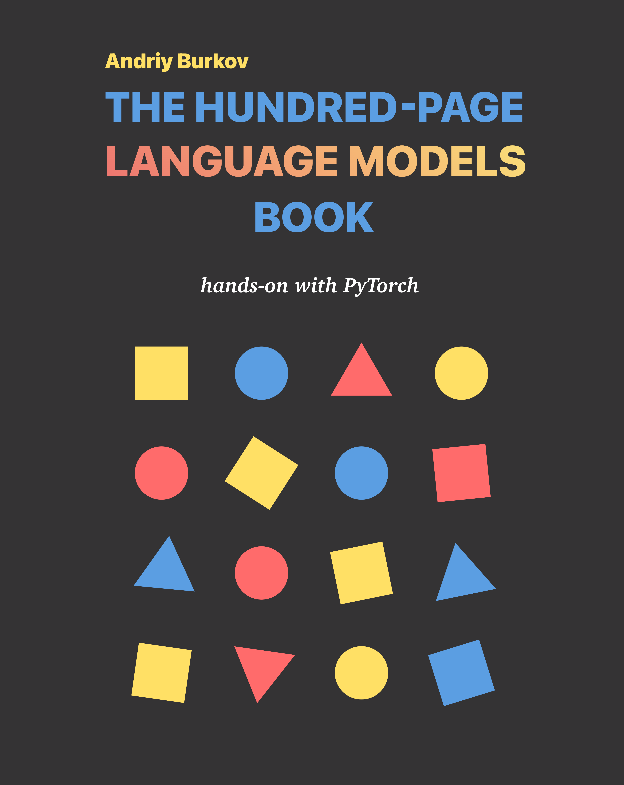
“安德鲁期待已久的《百页机器学习》系列教科书续作是简明性的杰作。”
― Bob van Luijt，Weaviate CEO兼联合创始人
“安德鲁拥有这种近乎超自然的天赋，能够将宏伟的AI概念压缩成一口大小的’啊，现在我明白了！’的瞬间。”
― Jorge Torres，MindsDB CEO
“安德鲁用100笔精彩的笔触为我们描绘了从线性代数基础到transformer实现的旅程。”
― Florian Douetteau，Dataiku联合创始人兼CEO
“安德鲁的书是一本极其简洁、清晰和易懂的机器学习入门读物。”
― Andre Zayarni，Qdrant联合创始人兼CEO
“这是一本最全面但简洁的手册，真正理解LLM如何在底层运作。”
― Jerry Liu，LlamaIndex联合创始人兼CEO
由托马什·米科洛夫(Tomáš Mikolov)作序，文特·瑟夫(Vint Cerf)撰写封底推荐
安德鲁·布尔科夫(Andriy Burkov)
版权所有 © 2025 安德鲁·布尔科夫。保留所有权利。
先读后买： 欢迎您通过保留此版权声明来自由阅读和与他人分享此书。但是，如果您发现这本书有价值或继续使用它，您必须购买自己的副本。这确保了公平性并支持作者。
禁止未经授权使用： 在未经作者明确书面同意的情况下，本作品的任何部分——其文本、结构或衍生物——不得用于训练人工智能或机器学习模型，也不得用于在网站、应用程序或其他服务上生成任何内容。此限制适用于所有形式的自动化或算法处理。
需要许可： 如果您运营任何网站、应用程序或服务，并希望将本作品的任何部分用于上述目的——或用于个人阅读之外的任何其他用途——您必须首先获得作者的明确书面许可。不授予例外或暗示许可。
执行： 任何违反这些条款的行为都是版权侵权。可能在任何司法管辖区内进行法律追究。通过阅读或分发此书，您同意遵守这些条件。
ISBN 978-1-7780427-2-0
出版商：True Positive Inc.
献给我的家人，致以爱意
“语言是误解的源泉。” ——安托万·德·圣埃克苏佩里，《小王子》
“在数学中你不理解事物。你只是习惯了它们。”
——约翰·冯·诺伊曼
“计算机是无用的。它们只能给你答案。”
——巴勃罗·毕加索
本书采用”先读后买”原则发行
前言 [9]
序言 [11]
本书适合谁 [11]
本书不是什么 [12]
书籍结构 [13]
您应该购买这本书吗？ [14]
致谢 [15]
1.1. AI和机器学习 [16]
1.2. 模型 [16]
1.3. 四步机器学习过程 [28]
1.4. 向量 [28]
1.5. 神经网络 [32]
1.6. 矩阵 [37]
1.7. 梯度下降 [40]
1.8. 自动微分 [45]
2.1. 词袋模型 [50]
2.2. 词嵌入 [63]
2.3. 字节对编码 [70]
2.4. 语言模型 [75]
2.5. 基于计数的语言模型 [77]
2.6. 评估语言模型 [84]
3.1. Elman RNN [98]
3.2. 小批量梯度下降 [100]
3.3. 编程RNN [101]
3.4. RNN作为语言模型 [104]
3.5. 嵌入层 [105]
3.6. 训练RNN语言模型 [107]
3.7. 数据集和DataLoader [111]
3.8. 训练数据和损失计算 [113]
4.1. 解码器块 [117]
4.2. 自注意力 [119]
4.3. 位置感知多层感知器 [123]
4.4. 旋转位置嵌入 [124]
4.5. 多头注意力 [131]
4.6. 残差连接 [133]
4.7. 均方根归一化 [136]
4.8. 键值缓存 [138]
4.9. Python中的Transformer [139]
5.1. 为什么更大更好 [147]
5.2. 监督微调 [154]
5.3. 微调预训练模型 [156]
5.4. 从语言模型中采样 [171]
5.5. 低秩适应(LoRA) [176]
5.6. LLM作为分类器 [180]
5.7. 提示工程 [182]
5.8. 幻觉 [188]
5.9. LLM、版权和伦理 [191]
6.1. 专家混合 [195]
6.2. 模型合并 [195]
6.3. 模型压缩 [196]
6.4. 基于偏好的对齐 [196]
6.5. 高级推理 [196]
6.6. 语言模型安全 [197]
6.7. 视觉语言模型 [197]
6.8. 防止过拟合 [198]
6.9. 结语 [198]
6.10. 作者更多作品 [199]
索引 [201]
我第一次参与语言建模已经是二十年前的事了。我想改进一些数据压缩算法，发现了n-gram统计。概念非常简单，但如此难以超越！然后我很快获得了另一个动机——从童年开始，我就对人工智能感兴趣。我有一个愿景，机器能够理解我们这个世界中对我们有限的头脑来说是隐藏的模式。与这样的超级智能对话将是多么令人兴奋。我意识到语言建模可能是通向这种AI的一条路径。
我开始寻找其他分享这一愿景的人，确实找到了Solomonoff、Schmidhuber的作品，以及Matt Mahoney组织的Hutter奖竞赛。他们都曾写过关于语言建模的AI完备性，我知道我必须尝试让它发挥作用。但那时的世界与今天截然不同。语言建模被认为是一个死的研究方向，我无数次听到有人说我应该放弃，因为在大数据上没有什么能够打败n-grams。
我完成了关于神经语言模型的硕士论文，因为这些模型与我之前为数据压缩开发的模型非常相似，我确实相信可以应用于任何语言的分布式表示是正确的方向。这激怒了一位当地的语言学家，他宣称我的想法完全是胡说八道，因为语言建模必须从语言学的角度来解决，每种语言都必须区别对待。
然而，我没有放弃，继续致力于我对AI完备语言模型的愿景。就在开始攻读博士学位之前的那个夏天，我想出了从这些神经模型生成文本的想法。我对这些文本比n-grams模型生成的文本好得多感到惊讶。那是2007年夏天，我很快意识到在布尔诺理工大学中，对此感到兴奋的人实际上只有我一个。但我还是没有放弃。
在接下来的几年里，我开发了许多算法来使神经语言模型更加有用。为了让其他人相信它们的质量，我在2010年发布了开源工具包RNNLM。它包含了神经文本生成、梯度裁剪、动态评估、模型适应（现在称为微调fine-tuning）以及其他技巧如分层softmax或将低频词分割为子词单元的首次实现。然而，我最自豪的结果是当我能够在博士论文中证明神经语言模型不仅在大数据集上击败了n-grams——这在当时被广泛认为是不可能的——而且改进实际上随着训练数据量的增加而增加。这是在大约五十年的语言建模研究后首次发生，我仍然记得当我向著名研究人员展示我的工作时，他们脸上的不敢置信。
快进大约十五年，我对世界发生的巨大变化感到惊讶。思维模式完全翻转了——过去在一个死的研究方向中的一些晦涩技术现在正在蓬勃发展，并得到了世界上最大公司CEO的关注。语言模型如今无处不在。在这种炒作下，我认为比以往任何时候都更需要真正理解这项技术。
想要学习语言建模的年轻学生被信息淹没。因此，当我了解到Andriy的项目——写一本只有一百页的简短书籍来涵盖一些最重要的想法时，我感到高兴。我认为这本书对于任何语言建模新手来说都是一个很好的开始，他们渴望改进最先进的技术——如果有人告诉你语言建模中所有可能被发明的东西都已经被发现了，不要相信。
Tomáš Mikolov，捷克信息学、机器人学和控制论研究所高级研究员，word2vec和FastText的作者
我对文本的兴趣始于1990年代末的青少年时期，当时我使用Perl和HTML构建动态网站。这种早期的编码经验以及将文本组织成结构化格式的体验激发了我对文本如何被处理和转换的迷恋。多年来，我进步到构建网络爬虫和文本聚合器，开发从网页中提取结构化数据的系统。处理和理解文本的挑战引导我探索更复杂的应用，包括设计能够理解和满足用户需求的聊天机器人。
从词语中提取意义的挑战让我着迷。任务的复杂性只会激发我”破解”它的决心，使用我能掌握的每一个工具——从正则表达式和脚本语言到文本分类器和命名实体识别模型。
大语言模型(LLMs)的兴起改变了一切。计算机第一次能够与我们流畅地对话，并以令人瞩目的精确度遵循口头指令。然而，像任何工具一样，它们巨大的力量伴随着局限性。有些很容易发现，但其他的更加微妙，需要深厚的专业知识才能正确处理。试图在不完全理解你的工具的情况下建造摩天大楼只会导致一堆混凝土和钢铁。语言模型也是如此。处理大规模文本处理任务或为付费用户创建可靠产品需要精确性和知识——猜测根本不是一个选择。
我为那些像我一样被通过机器理解语言的挑战所吸引的人写了这本书。语言模型在其核心只是数学函数。然而，它们的真正潜力在理论上并不能完全被理解——你需要实现它们才能看到它们的力量以及它们的能力如何随着规模的扩大而增长。这就是为什么我决定让这本书具有实践性。
这本书服务于软件开发人员、数据科学家、机器学习工程师，以及任何对语言模型感到好奇的人。无论你的目标是将现有模型集成到应用程序中还是训练你自己的模型，你都会找到实用指导和理论基础。
考虑到其一百页的格式，本书对读者做出了某些假设。你应该有编程经验，因为所有实践示例都使用Python。
虽然熟悉PyTorch和张量(tensors)——PyTorch的基本数据类型——是有益的，但这不是必需的。如果你是这些工具的新手，本书的
wiki (thelmbook.com/wiki) 提供了简洁的介绍，包含示例和资源链接供进一步学习。这种wiki格式确保内容保持最新，并解决读者在出版后的疑问。
大学水平的数学知识会有帮助，但你不需要记住每个细节或拥有机器学习经验。本书系统性地介绍概念，从符号、定义和基本向量矩阵运算开始。然后从简单的神经网络逐步发展到更高级的主题。数学概念以直观的方式呈现，配有清晰的图表和示例来促进理解。
本书专注于理解和实现语言模型。它不会涵盖：
• 大规模训练：本书不会教你如何在分布式系统上训练大型模型或如何管理训练基础设施。
• 生产部署：模型服务、API开发、高流量扩展、监控和成本优化等主题不在涵盖范围内。代码示例专注于理解概念而非生产就绪性。
• 企业应用：本书不会指导你构建商业LLM应用程序、处理用户数据或与现有系统集成。
如果你有兴趣学习语言模型的数学基础、理解它们的工作原理、自己实现核心组件或学习如何有效地使用LLM，那么这本书适合你。但如果你主要想要在生产环境中部署模型或构建可扩展的应用程序，你可能需要用其他资源来补充本书。
为了使本书引人入胜并加深读者的理解，我决定将语言建模作为一个整体来讨论，包括在现代文献中经常被忽视的方法。虽然基于Transformer的LLM占据了聚光灯，但像基于计数的方法和循环神经网络(RNN)等早期方法在某些任务中仍然有效。
对于从零开始的人来说，从头学习Transformer架构的数学可能看起来令人生畏。通过重新审视这些基础方法，我的目标是逐步建立读者的直觉和数学理解，使向现代Transformer架构的过渡感觉像是自然的进步而不是令人畏惧的跳跃。
本书分为六章，从基础到高级主题逐步发展：
• 第1章涵盖机器学习基础，包括AI、模型、神经网络和梯度下降等关键概念。即使你已经熟悉这些主题，本章也为理解语言模型提供了重要基础。
• 第2章介绍语言建模基础，探索像词袋和词嵌入等文本表示方法，以及基于计数的语言模型和评价技术。
• 第3章专注于循环神经网络，涵盖它们的实现、训练和作为语言模型的应用。
• 第4章详细探索Transformer架构，包括自注意力、位置嵌入和实际实现等关键组件。
• 第5章考察大型语言模型(LLM)，讨论为什么规模很重要、微调技术、实际应用，以及关于幻觉、版权和伦理的重要考虑。
• 第6章总结了进一步阅读高级主题，如专家混合、模型压缩、基于偏好的对齐和视觉语言模型，为持续学习提供方向。
大多数章节包含你可以运行和修改的工作代码示例。虽然书中只出现必要的代码，但完整代码在书的网站上以Jupyter笔记本形式提供，相关章节中会引用这些笔记本。笔记本中的所有代码都与Python、PyTorch和其他库的最新稳定版本兼容。
这些笔记本在Google Colab上运行，在撰写本文时，Colab提供免费访问计算资源，包括GPU和TPU。不过，这些资源不能保证且有使用限制，可能会有所变化。一些示例可能需要扩展的GPU访问，可能涉及等待可用性的时间。如果免费层级有限制，Colab的按需付费选项允许你购买计算积分以获得可靠的GPU访问。虽然按北美标准这些积分相对便宜，但根据你的位置，成本可能很大。
对于熟悉Linux命令行的人，GPU云服务通过带有一个或多个GPU的按时间付费虚拟机提供另一种选择。本书的wiki维护关于免费和付费笔记本或GPU租赁服务的最新信息。
逐字术语和块表示代码、代码片段或代码执行输出。粗体术语链接到书的术语索引，偶尔突出算法步骤。
在本书中，我们使用pip3来确保为Python 3安装包。在大多数现代系统上，如果已经为Python 3设置了pip，你可以使用pip。
像我之前的两本书一样，这本书按照先读后买的原则分发。我坚信在消费内容之前付费意味着盲目购买。在经销商那里，你可以看到并试驾汽车。在百货商店，你可以试穿衣服。同样，你应该能够在付费之前阅读一本书。
先读后买原则意味着你可以自由下载本书、阅读它，并与朋友和同事分享。如果你发现本书在工作、商业或学习中有帮助或有用—或者如果你只是喜欢阅读它—那么请购买它。
如果没有志愿编辑们的帮助，这本书不可能达到如此高的质量。我特别感谢Erman Sert、Viet Hoang Tran Duong、Alex Sherstinsky、Kelvin Sundli和Mladen Korunoski的系统性贡献。
我同样感谢Alireza Bayat Makou、Taras Shalaiko、Domenico Siciliani、Preethi Raju、Srikumar Sundareshwar、Mathieu Nayrolles、Abhijit Kumar、Giorgio Mantovani、Abhinav Jain、Steven Finkelstein、Ryan Gaughan、Ankita Guha、Harmanan Kohli、Daniel Gross、Kea Kohv、Marcus Oliveira、Tracey Mercier、Prabin Kumar Nayak、Saptarshi Datta、Gurgen R. Hayrapetyan、Sina Abdidizaji、Federico Raimondi Cominesi、Santos Salinas、Anshul Kumar、Arash Mirbagheri、Roman Stanek、Jeremy Nguyen、Efim Shuf、Pablo Llopis、Marco Celeri、Tiago Pedro和Manoj Pillai的帮助。
如果这是您第一次探索语言模型，我有点羡慕您——发现机器如何通过自然语言学习理解世界真的很神奇。
我希望您阅读这本书时能像我写作时一样享受其中。
现在拿起您的茶或咖啡，让我们开始吧！
本章首先简要概述了人工智能的发展历程，解释了什么是machine learning模型，并介绍了machine learning过程的四个步骤。然后，它涵盖了一些数学基础，如向量和矩阵，介绍了neural network，并以梯度下降和自动微分等优化方法结束。
1.1. AI和Machine Learning
人工智能(AI)这个术语最初是在1955年由John McCarthy主持的一个研讨会上提出的。研讨会上的研究人员旨在探索机器如何能够使用语言、形成概念、像人类一样解决问题并随时间改进。
1.1.1. 早期进展
该领域的第一个重大突破出现在1956年，即Logic Theorist。由Allen Newell、Herbert Simon和Cliff Shaw创建，它是第一个设计用于执行自动推理的程序，后来被描述为”第一个人工智能程序”。
Frank Rosenblatt的Perceptron(1958)是一个早期的neural network，旨在通过基于示例调整其内部参数来识别模式。Perceptron学习了一个决策边界——一条分离不同类别示例的分界线(例如，垃圾邮件与非垃圾邮件)：
大约在同一时间，1959年，Arthur Samuel创造了machine learning这个术语。在他的论文《使用跳棋游戏进行Machine Learning的一些研究》中，他将machine learning描述为”编程让计算机从经验中学习”。
1960年代中期的另一个值得注意的发展是ELIZA。1967年由Joseph Weizenbaum开发，作为历史上第一个聊天机器人，ELIZA通过匹配用户文本中的模式并生成预编程的响应，给人以理解语言的错觉。尽管它很简单，但它说明了构建能够看起来像在思考或理解的机器的诱惑力。
在这一时期，对近期突破的乐观情绪很高。未来图灵奖获得者Herbert Simon体现了这种热情，他在1965年预测”机器将在二十年内能够做人类能做的任何工作”。许多专家都抱有这种乐观态度，预测真正的人类水平AI——通常被称为通用人工智能(AGI)——只需要几十年就能实现。有趣的是，这些预测保持了一致的模式：十年又十年，AGI始终保持在大约25年的地平线上：
1.1.2. AI寒冬
当研究人员试图兑现早期承诺时，他们遇到了不可预见的复杂性。许多备受瞩目的项目未能达到雄心勃勃的目标。因此，1975年至1980年期间，资金和热情显著减少，这一时期现在被称为第一个AI寒冬。
在第一个AI寒冬期间，甚至”AI”这个术语也变得有些禁忌。
许多研究人员将他们的工作重新包装为”信息学”、“基于知识的系统”或”模式识别”，以避免与AI的感知失败产生关联。
在1980年代，对专家系统——旨在复制专业人类知识的基于规则的软件——的兴趣重新兴起，承诺能够捕获和自动化领域专业知识。这些专家系统是AI研究的一个更广泛分支的一部分，被称为符号AI，通常被称为传统AI(GOFAI)，自AI最早期以来一直是主导方法。GOFAI方法依赖于明确编码的规则和符号来表示知识和逻辑，虽然它们在狭义定义的领域中工作良好，但在可扩展性和适应性方面存在困难。
从1987年到2000年，AI进入了第二个寒冬期，当时符号方法的局限性导致资金减少，再次导致许多研究和开发项目被搁置或取消。
尽管遭遇这些挫折，新技术继续演进。特别是决策树，最初由John Sonquist和James Morgan在1963年引入，然后由Ross Quinlan的ID3算法在1986年推进，通过树状结构将数据分成子集。树中的每个节点代表关于数据的问题，每个分支是一个答案，每个叶子提供一个预测。虽然易于解释，但决策树容易出现过拟合，即它们过度适应训练数据，降低了在新的、未见过的数据上表现良好的能力。
1.1.3. 现代时代
在1990年代末和2000年代初，硬件的渐进改进和更大数据集的可用性（得益于互联网的广泛使用）开始让AI从第二次寒冬中复苏。Leo Breiman的随机森林算法（2001年）通过在数据的随机子集上创建多棵树然后组合它们的输出来解决决策树中的过拟合问题——显著提高了预测准确性。
支持向量机（SVMs），由Vladimir Vapnik和他的同事在1992年引入，是另一个重要的进步。SVMs识别出以最宽间隔分离不同类别数据点的最优超平面。核方法的引入允许SVMs通过将数据映射到高维空间来处理复杂的非线性模式，使找到合适的分离超平面变得更容易。这些创新使SVMs成为2000年代初机器学习研究的中心。
转折点出现在2012年左右，当时被称为深度神经网络的更先进的神经网络版本开始在语音和图像识别等领域超越其他技术。与只使用单个可学习参数”层”的简单感知机不同，这种深度学习方法堆叠多个层来解决更复杂的问题。计算能力的激增、丰富的数据和算法进步的汇聚产生了令人瞩目的突破。随着学术和商业兴趣的飙升，AI的可见度和资金投入也随之增长。
今天，AI和机器学习仍然密切相关。研究和工业界的努力继续寻求能够从数据中学习复杂任务的更强大的模型。尽管”在短短25年内”实现人类水平AI的预测一直未能实现，但AI对日常应用的影响是不可否认的。
在本书中，AI广泛指代使机器能够解决曾被认为只有人类才能解决的问题的技术，而机器学习是其关键子领域，专注于创建从示例集合中学习的算法。这些示例可以来自自然界，由人类设计，或由其他算法生成。该过程涉及收集数据集并从中构建模型，然后用它来解决问题。
我将交替使用”学习”和”机器学习”来节省键盘输入。
让我们来研究模型的确切含义以及它如何构成机器学习的基础。
模型通常用数学方程表示：
𝑦 = 𝑓(𝑥)
这里，𝑥是输入，𝑦是输出，𝑓表示𝑥的函数。函数是描述一组值如何与另一组值相关的命名规则。形式上，函数𝑓将输入从定义域映射到值域中的输出，确保每个输入都有且仅有一个输出。函数使用特定规则或公式将输入转换为输出。
在机器学习中，目标是编译一个示例的数据集并使用它们来构建𝑓，这样当𝑓应用于新的、未见过的𝑥时，它产生的𝑦能够为𝑥提供有意义的洞察。
为了根据房屋面积估算房价，数据集可能包括(面积，价格)对，如{(150,200), (200,600), … }。这里，面积以平方米为单位，价格以千为单位。
花括号表示集合。包含N个元素，范围从𝑥₁到𝑥ₙ的集合表示为{𝑥ᵢ}ᵢ₌₁ᴺ。
想象我们拥有一栋面积为250平方米（约2691平方英尺）的房子。要找到一个为这栋房子返回合理价格的函数𝑓，测试每个可能的函数是不现实的。相反，我们为𝑓选择一个特定的结构，专注于匹配这种结构的函数。
让我们将𝑓的结构定义为：
𝑓(𝑥) = 𝑤𝑥 + 𝑏, (1.1)
这是𝑥的线性函数。公式𝑤𝑥 + 𝑏是𝑥的线性变换。
符号 def= 表示”根据定义等于”或”定义为”。
对于线性函数，确定𝑓只需要两个值：𝑤和𝑏。这些被称为模型的参数或权重。
在其他文本中，𝑤可能被称为斜率、系数或权重项。类似地，𝑏可能被称为截距、常数项或偏置。在本书中，我们将坚持对𝑤使用”权重”，对𝑏使用”偏置”，因为这些术语在机器学习中广泛使用。当含义明确时，“参数”和”权重”将互换使用。
例如，当𝑤 = 2/3且𝑏 = 1时，线性函数如下所示：
这里，偏置使图形垂直移动，所以直线在𝑦 = 1处与𝑦轴相交。权重决定斜率，意味着直线每向右移动3个单位就上升2个单位。
从数学上讲，函数𝑓(𝑥) = 𝑤𝑥 + 𝑏是仿射变换，而不是线性变换，因为真正的线性变换要求𝑏 = 0。然而，在机器学习中，当参数在方程中线性出现——意味着𝑤和𝑏只与输入或常数相乘和相加，而不是相互相乘、被提升到幂次或出现在如𝑒^𝑥这样的函数内部时，我们通常称这样的模型为”线性”的。
即使对于像𝑓(𝑥) = 𝑤𝑥 + 𝑏这样简单的模型，参数𝑤和𝑏也可以取无限多个值。为了找到最佳值，我们需要一种衡量最优性的方法。一个自然的选择是在从面积估算房价时最小化平均预测误差。具体来说，我们希望𝑓(𝑥) = 𝑤𝑥 + 𝑏生成尽可能接近实际价格的预测。
设我们的数据集为{(𝑥ᵢ, 𝑦ᵢ)}ᵢ₌₁ᴺ，其中N是数据集的大小，{(𝑥₁, 𝑦₁), (𝑥₂, 𝑦₂), …, (𝑥ₙ, 𝑦ₙ)}是单个示例，每个𝑥ᵢ是输入，对应的𝑦ᵢ是目标。当示例同时包含
输入和目标值，学习过程被称为监督学习。本书专注于监督机器学习。
其他机器学习类型包括无监督学习，其中模型仅从输入中学习模式，以及强化学习，其中模型通过与环境交互并接收行为奖励或惩罚来学习。
当 𝑓(𝑥) 应用于 𝑥 时，它生成一个预测值 𝑦9。我们可以为给定示例 (𝑥, 𝑦) 定义预测误差 err(𝑦9, 𝑦) 为：
err(𝑦9, 𝑦) = (𝑦9 − 𝑦)² (1.2)
这个表达式称为平方误差，当 𝑦9 = 𝑦 时等于 0。这是有意义的：如果预测价格与实际价格匹配，则没有误差。𝑦9 偏离 𝑦 越远，误差就越大。平方确保误差始终为正，无论预测过高还是过低。
我们将 𝑤* 和 𝑏* 定义为函数 𝑓 中 𝑤 和 𝑏 的最优参数值，当它们最小化数据集上的平均价格预测误差时。该误差使用以下表达式计算：
[err(𝑦9₁, 𝑟₁) + err(𝑦9₂, 𝑦₂) + ⋯ + err(𝑦9ₙ, 𝑦ₙ)] / 𝑁
让我们通过展开每个 err(⋅) 来重写上述表达式：
[(𝑦9₁ − 𝑦₁)² + (𝑦9₂ − 𝑦₂)² + ⋯ + (𝑦9ₙ − 𝑦ₙ)²] / 𝑁
让我们将名称 𝐽(𝑤, 𝑏) 分配给我们的表达式，将其转换为函数：
𝐽(𝑤, 𝑏) = [(𝑤𝑥₁ + 𝑏 − 𝑦₁)² + (𝑤𝑥₂ + 𝑏 − 𝑦₂)² + ⋯ + (𝑤𝑥ₙ + 𝑏 − 𝑦ₙ)²] / 𝑁 (1.3)
在定义 𝐽(𝑤, 𝑏) 的方程中，它表示平均预测误差，从 1 到 𝑁 的每个 𝑖 的 𝑥ᵢ 和 𝑦ᵢ 值是已知的，因为它们来自数据集。未知数是 𝑤* 和 𝑏。为了确定最优的 𝑤 和 𝑏*，我们需要最小化 𝐽(𝑤, 𝑏)。由于这个函数是两个变量的二次函数，微积分保证它有单一的最小值。
方程 1.3 中的表达式在线性回归的机器学习问题中被称为损失函数。在这种情况下，损失函数是均方误差或MSE。
为了找到函数的最优值（最小值或最大值），我们计算它的一阶导数。当我们到达最优点时，一阶导数等于零。对于两个或更多变量的函数，如损失函数 𝐽(𝑤, 𝑏)，我们计算相对于每个变量的偏导数。我们将这些表示为 ∂𝐽/∂𝑤 和 ∂𝐽/∂𝑏。
为了确定 𝑤* 和 𝑏*，我们求解以下两个方程的系统：
∂𝐽/∂𝑤 = 0 ∂𝐽/∂𝑏 = 0
我们将偏导数设为零，因为当这种情况发生时，我们处于最优点。
幸运的是，MSE函数的结构和模型的线性性允许我们解析地求解这个方程组。为了说明，考虑一个有三个示例的数据集：(𝑥₁, 𝑦₁) = (150,200)，(𝑥₂, 𝑦₂) = (200,600)，和 (𝑥₃, 𝑦₃) = (260,500)。对于这个数据集，损失函数是：
𝐽(𝑤, 𝑏) = [(150𝑤 + 𝑏 − 200)² + (200𝑤 + 𝑏 − 600)² + (260𝑤 + 𝑏 − 500)²] / 3
让我们绘制它：
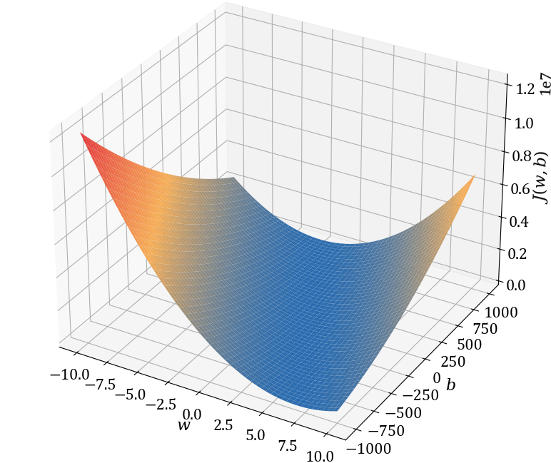
导航到本书的wiki，从文件 thelmbook.com/py/1.1 检索用于生成上述图的代码，运行代码，并旋转图形以观察最小值。
现在我们需要推导 ∂𝐽/∂𝑤 和 ∂𝐽/∂𝑏 的表达式。请注意，𝐽(𝑤, 𝑏) 是以下函数的复合：
• 函数 𝑑₁ = 150𝑤 + 𝑏 − 200，𝑑₂ = 200𝑤 + 𝑏 − 600，𝑑₃ = 260𝑤 + 𝑏 − 500 是 𝑤 和 𝑏 的线性函数；
• 函数 err₁ = 𝑑₁²，err₂ = 𝑑₂²，err₃ = 𝑑₃² 是 𝑑₁、𝑑₂ 和 𝑑₃ 的二次函数；
• 函数 𝐽 = (err₁ + err₂ + err₃)/3 是 err₁、err₂ 和 err₃ 的线性函数。
函数复合意味着一个函数的输出成为另一个函数的输入。例如，对于两个函数 𝑓 和 𝑔，你首先将 𝑔 应用于 𝑥，然后将 𝑓 应用于结果。这写作 𝑓(𝑔(𝑥))，这意味着你首先计算 𝑔(𝑥)，然后将该结果用作 𝑓 的输入。
在我们的损失函数 𝐽(𝑤, 𝑏) 中，过程从使用 𝑤 和 𝑏 的当前值计算 𝑑₁、𝑑₂ 和 𝑑₃ 的线性函数开始。然后将这些输出传递给二次函数 err₁、err₂ 和 err₃。最后一步是对这些结果求平均以计算 𝐽。
使用微分的求和法则和常数倍数法则，∂𝐽/∂𝑤 由下式给出：
∂𝐽/∂𝑤 = (1/3)(∂err₁/∂𝑤 + ∂err₂/∂𝑤 + ∂err₃/∂𝑤)
其中 ∂err₁/∂𝑤、∂err₂/∂𝑤 和 ∂err₃/∂𝑤 是 err₁、err₂ 和 err₃ 相对于 𝑤 的偏导数。
微分的求和法则指出两个函数和的导数等于它们导数的和：d/dx[𝑓(𝑥) + 𝑔(𝑥)] = d𝑓(𝑥)/dx + d𝑔(𝑥)/dx。
微分的常数倍数法则指出常数乘以函数的导数等于常数乘以函数的导数：d/dx[𝑐 ⋅ 𝑓(𝑥)] = 𝑐 ⋅ d𝑓(𝑥)/dx。
通过应用微分的链式法则，err₁、err₂ 和 err₃ 相对于 𝑤 的偏导数是：
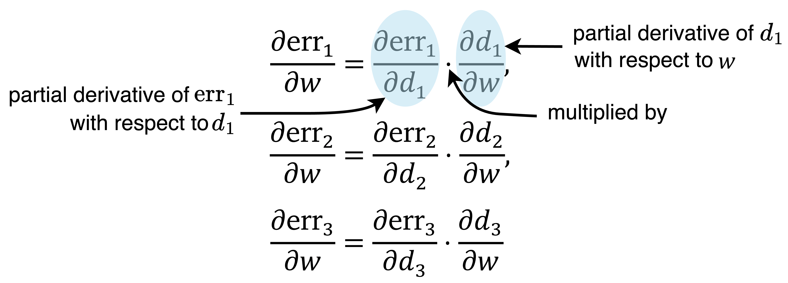
微分的链式法则指出复合函数 𝑓(𝑔(𝑥)) 的导数，写作 d/dx[𝑓(𝑔(𝑥))]，是 𝑓 相对于 𝑔 的导数与 𝑔 相对于 𝑥 的导数的乘积，即：d/dx[𝑓(𝑔(𝑥))] = (d𝑓/d𝑔) ⋅ (d𝑔/dx)。
然后，
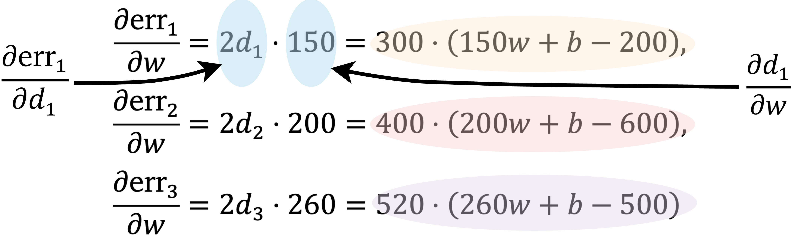
因此，
类似地，我们找到 ∂𝐽/∂𝑏：
∂𝐽/∂𝑏 = (1/3)[2 ⋅ (150𝑤 + 𝑏 − 200) + 2 ⋅ (200𝑤 + 𝑏 − 600) + 2 ⋅ (260𝑤 + 𝑏 − 500)] = (1/3)(1220𝑤 + 6𝑏 − 2600)
将偏导数设为0得到以下方程组：
∂/∂w (260200w + 1220b - 560000) = 0
(1220w + 6b - 2600) = 0
简化方程组并使用代入法求解变量，得到最优值：w* = 2.58 和 b = -91.76。
得到的模型 f(x) = 2.58x - 91.76 如下图所示。图中包括三个样本（蓝点）、模型本身（红色实线），以及对面积为240平方米的新房屋的预测（橙色虚线）。
垂直蓝色虚线显示了模型预测误差相对于实际价格的平方根。[1] 误差越小意味着模型拟合数据越好。损失函数汇总这些误差，衡量模型与数据集的吻合程度。
当我们使用模型的训练数据集（称为训练集）计算损失时，我们得到训练损失。对于我们的模型，训练损失由方程1.3定义。使用我们学习到的参数值，现在可以计算训练集的损失：
J(2.58, -91.76) = [(2.58 · 150 - 91.76 - 200)² + (2.58 · 200 - 91.76 - 600)² + (2.58 · 260 - 91.76 - 500)²]/3 = 15403.19。
[1] 这是误差的平方根，因为我们的误差（如方程1.2中定义）是预测价格与房屋实际价格之间差值的平方。通常做法是取均方误差的平方根，因为它用与目标变量相同的单位（在这种情况下是价格）表示误差。这使得误差值更容易解释。
该值的平方根约为124.1，表示平均预测误差约为$124,100。损失值是高是低的解释取决于具体的业务背景和比较基准。神经网络和其他非线性模型（我们将在本章后面探讨）通常能达到更低的损失值。
到这一步，你应该清楚地理解监督学习涉及的四个步骤：
收集数据集：例如，(x₁, y₁) = (150,200)，(x₂, y₂) = (200,600)，和(x₃, y₃) = (260,500)。
定义模型结构：例如，y = wx + b。
定义损失函数：如方程1.3。
最小化损失：在数据集上最小化损失函数。
在我们的例子中，我们通过求解包含两个变量的两个方程的方程组来手动最小化损失。这种方法适用于小系统。然而，随着模型复杂性的增长——比如拥有数十亿参数的大语言模型——手动方法变得不可行。现在让我们介绍新概念来帮助解决这个挑战。
要预测房价，仅知道面积是不够的。建造年份或卧室和浴室数量等因素也很重要。假设我们使用两个属性：(1)面积和(2)卧室数量。在这种情况下，输入x变成特征向量。该向量包含两个特征，也称为维度或组件：
x = [x₁, x₂]ᵀ
在本书中，向量用小写粗体字母表示，如x或w。对于给定的房屋x，x₁表示其面积（平方米），x₂是卧室数量。
向量通常表示为一列数字，称为列向量。但在文本中，它经常写成其转置，xᵀ。转置列向量将其转换为行向量。例如，xᵀ = [x₁, x₂] 或 x = [x₁, x₂]ᵀ。
向量的维数或其大小是指它包含的组件数量。这里，x有两个组件，所以其维数是2。
有了两个特征，我们的线性模型需要三个参数：权重w₁和w₂，以及偏置b。权重可以组合成一个向量：
w = [w₁, w₂]ᵀ
线性模型可以紧凑地写为：
y = w · x + b, (1.4)
其中w · x是两个向量的点积（也称为标量积）。它定义为：
w · x = Σⱼ₌₁ᴰ wⱼxⱼ
点积将两个相同维数的向量结合产生一个标量，一个数字如22、0.67或-10.5。本书中的标量用斜体小写或大写字母表示，如x或D。表达式w · x + b将线性变换的概念推广到向量。
上面的方程使用求和符号，其中D表示输入的维数，j从1到D。例如，在2维房屋场景中，Σⱼ₌₁² wⱼxⱼ = w₁x₁ + w₂x₂。
虽然求和符号表明点积可能作为循环实现，但现代计算机处理它要高效得多。优化的线性代数库如BLAS和cuBLAS使用低级、高度优化的方法计算点积。这些库利用硬件加速和并行处理，实现远超简单循环的速度。
两个向量a和b的和，两者具有相同的维数D，定义为：
a + b = [a₁ + b₁, a₂ + b₂, …, aᴰ + bᴰ]ᵀ
两个3维向量和的计算如下图所示：
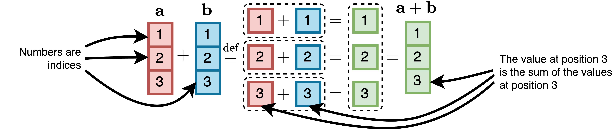
在本章的插图中，单元格中的数字表示输入或输出矩阵或向量中元素的位置。它们不表示实际值。
两个维数为D的向量a和b的逐元素乘积定义为：
a ⊙ b = [a₁ · b₁, a₂ · b₂, …, aᴰ · bᴰ]ᵀ
两个3维向量的逐元素乘积计算如下所示：

向量 𝐱 的范数，记作 ∥ 𝐱 ∥，表示其长度或幅度。它定义为各分量平方和的平方根：
∥ 𝐱 ∥ = √(∑x²ᵢ)
对于2维向量 𝐱，范数为：
∥ 𝐱 ∥= √(x₁² + x₂²)
两个向量 𝐱 和 𝐲 之间角度 𝜃 的余弦定义为：
cos(𝜃) = (𝐱 ⋅ 𝐲)/(∥ 𝐱 ∥∥ 𝐲 ∥)
两个向量之间角度的余弦量化了它们的相似性。例如，具有相似面积和卧室数量的两栋房屋将具有接近1的余弦相似度，否则该值会较低。余弦相似度广泛用于比较表示为embedding向量的单词或文档。这将在第2.2节中进一步讨论。
零向量的所有分量都等于零。单位向量的长度为1。要将任何非零向量 𝐱 转换为单位向量 𝐱̂，需要将向量除以其范数：
𝐱̂ = 𝐱/∥ 𝐱 ∥
用一个数除以向量会产生一个新向量，其中原向量的每个分量都被该数除。
单位向量保持原向量的方向，但长度为1。下图用2维示例演示了这一点。左侧，对齐的向量有 cos(𝜃) = 0.78。右侧，几乎正交的向量有 cos(𝜃) = −0.02。
单位向量很有价值，因为它们的点积等于它们之间角度的余弦，而计算点积是高效的。
当文档表示为单位向量时，通过计算查询向量和文档向量之间的点积，找到相似文档变得很快。这就是向量搜索引擎和像Milvus、Qdrant和Weaviate这样的库的工作原理。
随着维度增加，线性模型中的参数数量变得太大，无法手动求解。此外，在高维空间中，我们无法直观地验证数据是否遵循线性模式。即使我们能够可视化三维以上的空间，我们仍然需要更灵活的模型来处理线性模型无法拟合的数据。
下一节介绍非线性模型，重点关注神经网络。这些是理解大语言模型的关键，大语言模型是一种特定类型的神经网络架构。
神经网络与线性模型在两个关键方面不同：(1) 它对可训练线性函数的输出应用固定的非线性函数，(2) 其结构更深，通过层次结构分层组合多个函数。让我们来说明这些差异。
像 𝑤𝑥 + 𝑏 或 𝐰 ⋅ 𝐱 + 𝑏 这样的线性模型无法有效解决许多机器学习问题。即使我们将它们组合成复合函数 𝑓₁∘𝑓₂(𝑥)，线性函数的复合函数仍然是线性的。这很容易验证。
让我们定义 𝑦₂ = 𝑓₂(𝑥) = 𝑎₂𝑥 和 𝑦₁ = 𝑓₁(𝑦₂) = 𝑎₁𝑦₂。这里，𝑓₁ 依赖于 𝑓₂，使其成为复合函数。我们可以重写 𝑏₁：
𝑦₁ = 𝑎₁𝑦₂ = 𝑎₁(𝑎₂𝑥) = (𝑎₁𝑎₂)𝑥
由于 𝑎₂ 和 𝑎₁ 是常数，我们可以定义 𝑎₃ = 𝑎₂𝑎₁，所以 𝑦₁ = 𝑎₃𝑥，这是线性的。
直线通常无法捕捉一维数据中的模式，如将线性回归应用于非线性数据时所示：
为了解决这个问题，我们添加非线性。对于一维输入，模型变为：
𝑦 = 𝜙(𝑤𝑥 + 𝑏)
函数 𝜙 是一个固定的非线性函数，称为激活函数。常见选择有：
ReLU（修正线性单元）：ReLU(𝑧) = max(0, 𝑧)，输出非负值，在神经网络中广泛使用；
Sigmoid：𝜎(𝑧) = 1/(1+e^(-z))，输出0到1之间的值，使其适用于二分类（例如，将垃圾邮件分类为1，非垃圾邮件分类为0）；
Tanh（双曲正切）：tanh(𝑧) = (e^z - e(-z))/(ez + e^(-z))；输出-1到1之间的值。
在这些方程中，𝑒 表示欧拉数，约为2.72。
这些函数由于其数学性质、简单性和在各种应用中的有效性而被广泛使用。它们看起来是这样的：
结构 𝜙(𝑤𝑥 + 𝑏) 能够学习非线性模型，但无法捕捉所有非线性曲线。通过嵌套这些函数，我们构建更具表达力的模型。例如，设 𝑓₂(𝑥) = 𝜙(𝑎𝑥 + 𝑏) 和 𝑓₁(𝑧) = 𝜙(𝑐𝑧 + 𝑑)。结合 𝑓₂ 和 𝑓₁ 的复合模型是：
𝑦 = 𝑓₁∘𝑓₂(𝑥) = 𝜙(𝑐𝜙(𝑎𝑥 + 𝑏) + 𝑑)
这里，输入 𝑥 首先使用参数 𝑎 和 𝑏 进行线性变换，然后通过非线性函数 𝜙。结果进一步用参数 𝑐 和 𝑑 进行线性变换，然后再次应用 𝜙。
下面是复合模型 𝑦 = 𝑓₁∘𝑓₂(𝑥) 的图形表示：
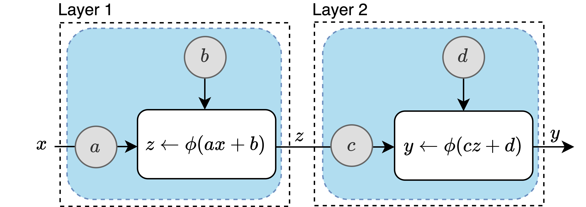
计算图表示模型的结构。上面的计算图显示了两个非线性单元（蓝色矩形），通常称为人工神经元。每个单元包含两个可训练参数——权重和偏置——用灰色圆圈表示。左箭头 ← 表示右边的值被赋给左边的变量。该图说明了一个具有两层的基本神经网络，每层包含一个单元。实际中的大多数神经网络都有更多层和每层多个单元。
假设我们有一个二维输入，一个有三个单元的输入层，和一个有单个单元的输出层。计算图如下所示：
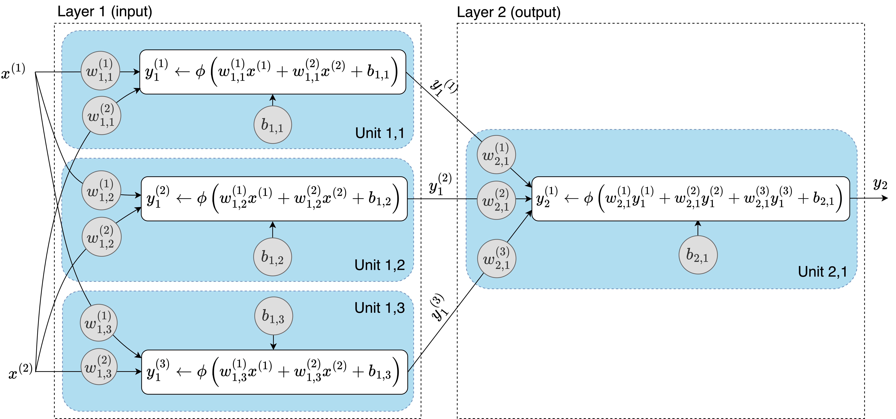
这种结构代表了一个前馈神经网络（FNN），其中信息以单一方向流动——从左到右——没有循环。当每一层中的单元连接到后续层中的所有单元时，如上所示，我们称之为多层感知机（MLP）。每个单元连接到相邻两层中所有单元的层被称为全连接层或密集层。
在第3章中，我们将探索循环神经网络（RNN）。与FNN不同，RNN具有循环，其中一层的输出被用作同一层的输入。
卷积神经网络（CNN）是具有卷积层的前馈神经网络，这些卷积层不是全连接的。虽然最初是为图像处理而设计的，但它们对于文本数据中的文档分类等任务也很有效。要了解更多关于CNN的信息，请参考本书wiki中的附加材料。
为了简化图表，单个神经单元可以用正方形替代。使用这种方法，上述网络可以更紧凑地表示如下：
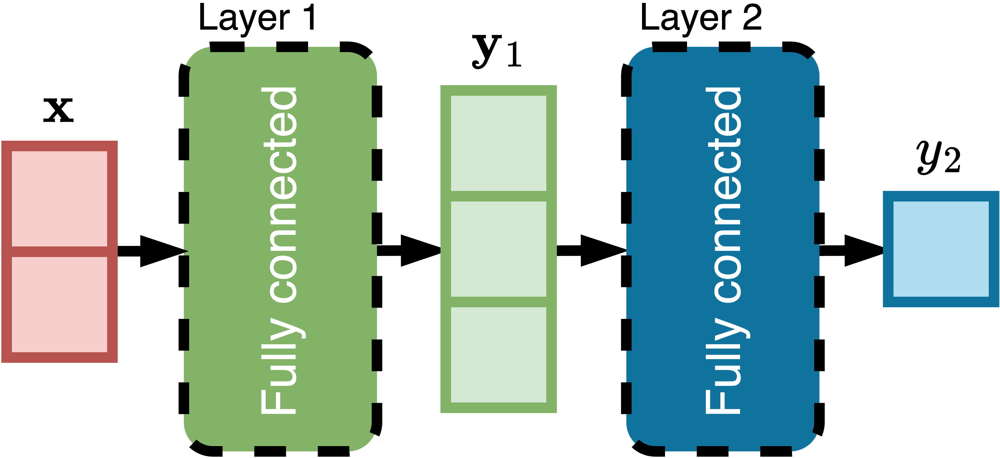
如果你认为这个简单模型太弱，请看下面的图。它包含三个图表，展示了增加模型大小如何改善性能。左图显示了一个有2个单元的模型：一个输入，一个输出，以及ReLU激活。中图是一个有4个单元的模型：三个输入和一个输出。右图显示了一个更大的模型，有100个单元：
ReLU激活函数尽管简单，但在机器学习中是一个突破。2012年之前的神经网络依赖于平滑激活函数如tanh和sigmoid，这使得训练深度模型变得越来越困难。我们将在第4章关于Transformer神经网络架构的内容中回到这个主题。
增加参数数量有助于模型更准确地逼近数据。实验一致表明，在神经网络中增加每层的单元数或增加层数可以提高其拟合高维数据集的能力，如自然语言、语音、声音、图像和视频数据。
神经网络可以处理高维数据集，但需要大量内存和计算。天真地计算一层的变换将涉及对数千个单元中每个单元的数千个参数进行迭代，以及数十层，这既缓慢又耗费资源。使用矩阵使计算更高效。
矩阵是一个二维数字数组，排列成行和列，它将向量的概念推广到更高维度。形式上，一个有𝑚行和𝑛列的矩阵𝐀写作：
𝑎 𝑎 ⋯ 𝑎 [“,”] [“,!] [“,8]
[def] 𝑎 𝑎 ⋯ 𝑎 [!,”] [!,!] [!,8]
𝐀 = s v ⋮ ⋮ ⋱ ⋮
𝑎 𝑎 ⋯ 𝑎 [9,”] [9,!] [9,8]
这里，𝑎 代表矩阵第𝑖行第𝑗列的元素。 [$,2]
矩阵的维度表示为𝑚 × 𝑛（读作”m乘n”）。矩阵是机器学习的基础。它们紧凑地表示数据和权重，并通过加法、乘法和转置等操作实现高效计算。在本书中，矩阵用大写粗体字母表示，如𝐗或𝐖。
相同维度的两个矩阵𝐀和𝐁的和定义为逐元素：
(𝐀 + 𝐁) [def] = 𝑎 + 𝑏
[, 2][,2] [$,2]
例如，对于两个2 × 3矩阵𝐀和𝐁，加法是这样工作的：
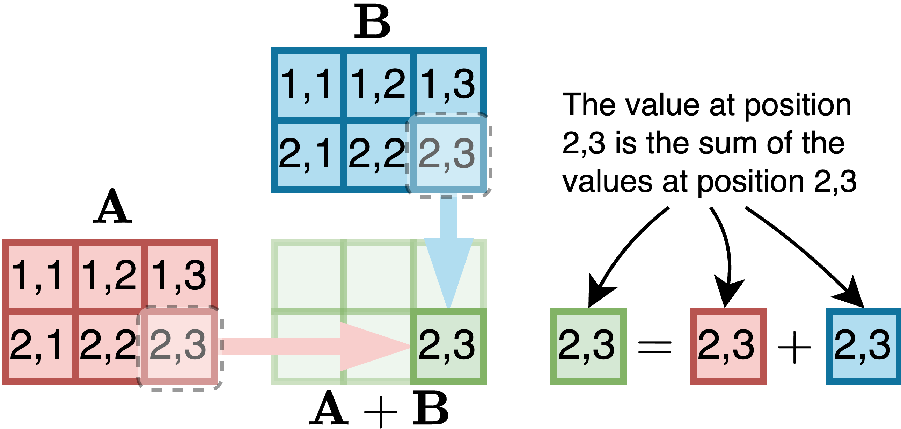
维度为𝑚 × 𝑛的矩阵𝐀的乘积与维度为𝑛 × 𝑝的𝐁是维度为𝑚 × 𝑝的矩阵𝐂，使得第𝑖行第𝑘列的值由下式给出：
[8]
(𝐂) = U 𝑎 𝑏 [, : ][,2] [2,:]
[2%”]
例如，对于4 × 3矩阵𝐀和3 × 5矩阵𝐁，乘积是4 × 5矩阵：
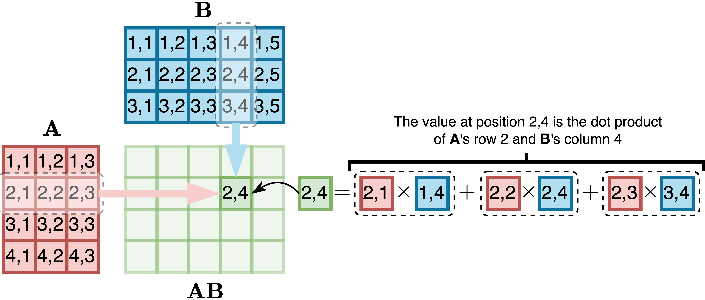
转置矩阵 [1] 𝐀交换其行和列，得到𝐀，其中：
(𝐀[1]) = 𝑎 [, 2][2,]
例如，对于2 × 3 [1] 矩阵𝐀，其转置𝐀如下所示：
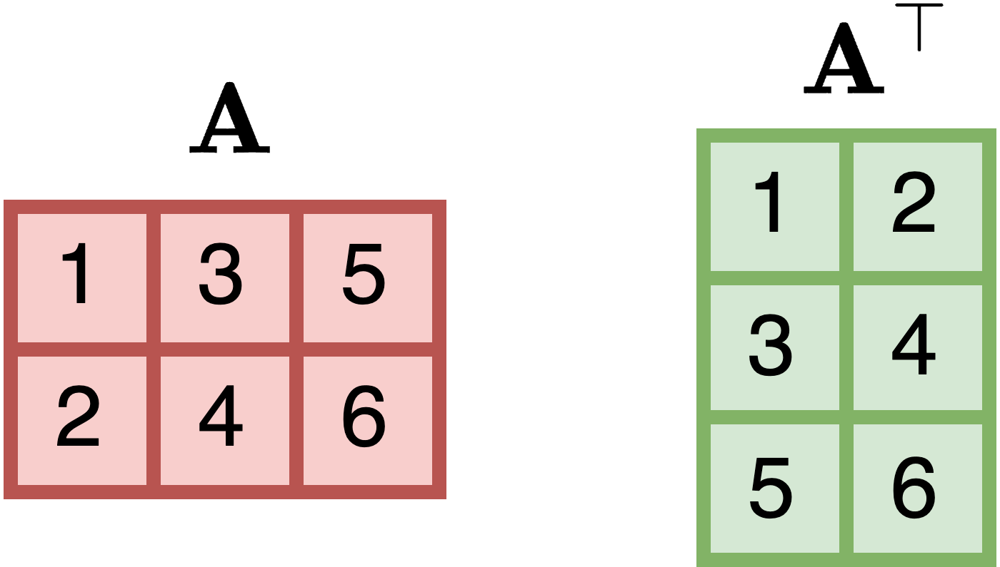
矩阵-向量乘法是矩阵乘法的特殊情况。当𝑚 × 𝑛矩阵𝐀乘以大小为𝑛的向量𝐱时，结果是具有𝑚个分量的向量𝐲 = 𝐀𝐱。结果向量𝐲的每个元素𝑦 计算为： [$]
[8]
𝑦 [(2)] = U 𝑎 𝑥
[][,2]
[2%”]
例如，4 × 3矩阵𝐀乘以3D向量𝐱产生4维向量：
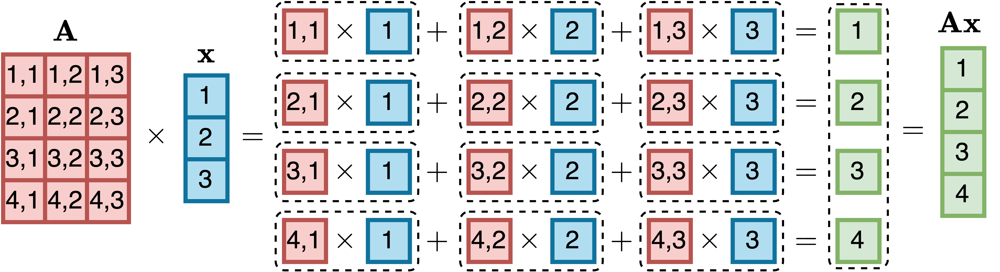
神经网络全连接层中的权重和偏置可以使用矩阵和向量紧凑地表示，从而能够使用高度优化的线性代数库。因此，矩阵运算构成了神经网络训练和推理的骨干。
让我们使用矩阵记号来表达图1.1中的模型。设𝐱为2D输入特征向量。对于第一层，权重和偏置分别表示为3 × 2矩阵𝐖 和3D向量𝐛 。第一层的3D输出𝐲 由下式给出： [”] [”] [”]
𝐲 = 𝜙(𝐖 𝐱 + 𝐛 ) [(1.6) [”] [”] [”]
第二层也使用权重矩阵和偏置。第二层的输出𝑦 使用第一层的输出𝐲 计算。第二层的权重 [!] [”] 矩阵是1 × 3矩阵𝐖 。第二层的偏置是标量𝑏 。模型输出对应于第二层的输出： [!] [!,”]
𝑦 = 𝜙C𝐖 𝐲 + 𝑏 D [(1.7) [!] [!] [”] [!,”]
方程1.6和方程1.7捕获了神经网络中从输入到输出的操作，每层的输出作为下一层的输入。
神经网络通常很大且由非线性函数组成，这使得解析求解损失函数的最小值变得不可行。相反，梯度下降算法被广泛用于最小化损失，包括在大语言模型中。
考虑一个实际例子：二元分类。这个任务将输入数据分配到两个类别之一，比如判断邮件是否为垃圾邮件，或检测网站连接请求是否为DDoS攻击。
我们的训练数据集𝒟是{(𝐱_𝑖, 𝑦_𝑖)}_{𝑖=1}^𝑁，其中𝐱_𝑖是输入特征的向量，𝑦_𝑖是标签。每个𝑦_𝑖从1到𝑁索引，对于”非垃圾邮件”取值为0，对于”垃圾邮件”取值为1。一个训练良好的模型应该对垃圾邮件输入𝐱_𝑖输出接近1的𝑦̂_𝑖，对非垃圾邮件输入输出接近0。我们可以这样定义模型：
𝑦̂ = 𝜎(𝐰 ⋅ 𝐱 + 𝑏), (1.8)
其中𝐱 = [𝑥_1, 𝑥_2, …, 𝑥_𝐷]^T和𝐰 = [𝑤_1, 𝑤_2, …, 𝑤_𝐷]^T是𝐷维向量，𝑏是标量，𝜎是第1.5节中定义的sigmoid函数。
这个模型被称为逻辑回归，常用于二元分类任务。与产生从−∞到∞范围输出的线性回归不同，逻辑回归总是输出0到1之间的值。它既可以作为独立模型，也可以作为更大神经网络的输出层。
尽管已有80多年历史，逻辑回归仍然是生产环境机器学习系统中使用最广泛的算法之一。
在这种情况下，损失函数的常见选择是二元交叉熵，也称为逻辑损失。对于单个样本𝑖，二元交叉熵损失定义为：
loss(𝑦̂_𝑖, 𝑦_𝑖) = −[𝑦_𝑖 log(𝑦̂_𝑖) + (1 − 𝑦_𝑖)log(1 − 𝑦̂_𝑖)] (1.9)
在这个方程中，𝑦_𝑖表示数据集中第𝑖个样本的实际标签，𝑦̂_𝑖是预测分数，是模型对输入向量𝐱_𝑖输出的0到1之间的值。函数log表示自然对数。
损失函数通常设计为惩罚错误预测同时奖励准确预测。要理解为什么逻辑损失适用于逻辑回归，考虑两种极端情况：
loss(0,0) = −[0 ⋅ log(0) + (1 − 0) ⋅ log(1 − 0)] = −log(1) = 0
这里损失为零，这很好，因为预测与标签匹配。
loss(1,0) = −[0 ⋅ log(1) + (1 − 0) ⋅ log(1 − 1)] = −log(0)
0的对数未定义，当𝑎接近0时，−log(𝑎)趋向无穷大，代表完全错误预测的严重损失。然而，由于𝑦̂_𝑖是sigmoid的输出，总是严格保持在0和1之间而不会达到边界值，所以损失保持有限。
对于整个数据集𝒟，损失由数据集中所有样本的平均损失给出：
loss_𝒟 = −(1/𝑁)∑_{𝑖=1}^𝑁[𝑦_𝑖 log(𝑦̂_𝑖) + (1 − 𝑦_𝑖)log(1 − 𝑦̂_𝑖)] (1.10)
为了简化梯度下降推导，我们坚持使用单个样本𝑖，并通过将预测分数𝑦̂_𝑖替换为模型表达式来重写方程：
loss(𝑦̂_𝑖, 𝑦_𝑖) = −[𝑦_𝑖 log(𝜎(𝑧_𝑖)) + (1 − 𝑦_𝑖)log(1 − 𝜎(𝑧_𝑖))]，其中𝑧_𝑖 = 𝐰 ⋅ 𝐱_𝑖 + 𝑏
为了最小化loss(𝑦̂_𝑖, 𝑦_𝑖)，我们计算关于每个权重𝑤_𝑗和偏置𝑏的偏导数。我们将使用链式法则，因为我们有三个函数的复合：
• 函数1：𝑧_𝑖 = 𝐰 ⋅ 𝐱_𝑖 + 𝑏，带有权重𝐰和偏置𝑏的线性函数；
• 函数2：𝑦̂_𝑖 = 𝜎(𝑧_𝑖) = 1/(1 + 𝑒^{−𝑧_𝑖})，应用于𝑧_𝑖的sigmoid函数；
• 函数3：loss(𝑦̂_𝑖, 𝑦_𝑖)，如方程1.9中定义，依赖于𝑦̂_𝑖。
注意𝐱_𝑖和𝑦_𝑖是给定的：𝐱_𝑖是样本𝑖的特征向量，𝑦_𝑖 ∈ {0,1}是其标签。符号𝑦_𝑖 ∈ {0,1}意味着𝑦_𝑖属于集合{0,1}，在这种情况下，表示𝑦_𝑖只能是0或1。
让我们将loss(𝑦̂_𝑖, 𝑦_𝑖)记为l_𝑖。对于权重𝑤_𝑗，链式法则的应用给出：
∂l_𝑖/∂𝑤_𝑗 = ∂l_𝑖/∂𝑦̂_𝑖 ⋅ ∂𝑦̂_𝑖/∂𝑧_𝑖 ⋅ ∂𝑧_𝑖/∂𝑤_𝑗 = (𝑦̂𝑖 − 𝑦_𝑖) ⋅ 𝑥{𝑖,𝑗}
对于偏置𝑏，我们有：
∂l_𝑖/∂𝑏 = ∂l_𝑖/∂𝑦̂_𝑖 ⋅ ∂𝑦̂𝑖/∂𝑧_𝑖 ⋅ ∂𝑧_𝑖/∂𝑏 = 𝑦̂�� − 𝑦_𝑖
这就是机器学习数学的美妙之处：激活函数——sigmoid——和损失函数——交叉熵——都源自𝑒，欧拉数。它们的函数特性服务于不同目的：sigmoid范围在0和1之间，非常适合二元分类，而交叉熵跨度从0到∞，很适合作为惩罚项。当结合时，指数和对数成分优雅地抵消，产生线性函数——因计算简单性和数值稳定性而备受推崇。本书的wiki提供了完整推导。
关于𝑤_𝑗和𝑏对单个样本(𝐱_𝑖, 𝑦_𝑖)的偏导数可以通过平均所有样本的贡献来扩展到整个数据集{(𝐱_𝑖, 𝑦_𝑖)}_{𝑖=1}^𝑁。这遵循微分的求和法则和常数倍数法则：
∂loss/∂𝑤_𝑗 = (1/𝑁)∑_{𝑖=1}^𝑁[(𝑦̂𝑖 − 𝑦_𝑖) ⋅ 𝑥{𝑖,𝑗}] (1.11)
∂loss/∂𝑏 = (1/𝑁)∑_{𝑖=1}^𝑁[𝑦̂_𝑖 − 𝑦_𝑖]
这里，loss表示整个数据集的平均损失。对各个样本的损失求平均确保每个样本对总体损失的贡献相等，无论样本总数多少。
梯度是包含所有偏导数的向量。损失函数的梯度，记为∇loss，定义如下：
∇loss = [∂loss/∂𝑤_1, ∂loss/∂𝑤_2, …, ∂loss/∂𝑤_𝐷, ∂loss/∂𝑏]^T
如果梯度的某个分量为正，这意味着增加相应参数将增加损失。因此，为了最小化损失，我们应该减少该参数。
梯度下降算法使用损失函数的梯度来迭代更新权重和偏置，旨在最小化损失函数。其工作原理如下：
从参数 w 和 b 的随机值开始。
对于每个训练样本 (x, y)，使用模型计算预测值 ŷ：
ŷ ← σ(w · x + b)
使用方程 1.11 计算损失函数关于每个权重 w 和偏置 b 的偏导数。
在减少损失函数的方向上调整权重和偏置。这种调整涉及在梯度相反方向上迈出一小步。步长由学习率 η 控制（下文解释）：
w ← w - η ∂loss/∂w
b ← b - η ∂loss/∂b
通过将更新后的 w 和 b 值代入方程 1.10 来计算logistic损失。
重复步骤 1-4，直到设定的迭代次数（也称为步骤）或直到损失值收敛到最小值。
以下是更详细的步骤说明：
• 从参数中减去梯度是因为梯度指向损失函数中最陡上升的方向。由于我们的目标是最小化损失，所以我们向相反方向移动——因此是减法。
• 学习率 η 是一个接近 0 的正值，作为超参数——不是由模型学习的，而是手动设置的。它控制每次更新的步长，找到其最优值需要实验。
• 收敛发生在后续迭代产生的损失减少量很小时。学习率 η 在这里至关重要：太小，进展缓慢；太大，我们可能超过最小值或甚至看到损失增加。因此，选择合适的 η 对有效的梯度下降至关重要。
让我们用一个包含 12 个示例的简单数据集来说明这个过程：
(22,25), 0, (25,35), 0, (47,80), 1, (52,95), 1, (46,82), 1, (56,90), 1, (23,27), 0, (30,50), 1, (40,60), 1, (39,57), 0, (53,95), 1, (48,88), 1
在这个数据集中，x 包含两个特征：年龄（以年为单位）和收入（以千美元为单位）。目标是预测一个人是否会购买产品，标签 y 为 0（不会购买）或 1（会购买）。
下图显示了梯度下降步骤中的损失演变和结果训练模型：
左图显示了在梯度下降优化过程中损失稳步下降。右图显示了训练模型的sigmoid函数，训练样本按其 z 值（z = w · x + b）定位，其中 w 和 b 是学习到的权重和偏置。
选择 0.5 阈值是基于图中的明显分离：所有”会购买”的样本（蓝点）都在其上方，而所有”不会购买”的样本（红点）都在其下方。对于新输入 x，生成 ŷ = σ(w · x + b)。如果 ŷ < 0.5，预测”不会购买”；否则，预测”会购买”。
梯度下降优化模型参数，但需要偏导数方程。到目前为止，我们为每个模型手动计算这些导数。随着模型变得更加复杂，特别是在具有多层的神经网络中，手动推导变得不切实际。
这就是自动微分（或autograd）的用武之地。这个功能内置在PyTorch和TensorFlow等机器学习框架中，直接从定义模型的Python代码计算偏导数。这消除了手动推导，即使对于非常复杂的模型也是如此。
现代自动微分系统可以高效处理数百万变量的导数。手动计算这些导数是不可行的——仅编写方程就可能需要数年时间。
要在PyTorch中使用梯度下降，首先用pip3安装它：
$ pip3 install torch现在PyTorch已安装，让我们导入依赖项：
import torch
import torch.nn as nn
import torch.optim as optimtorch.nn模块包含创建模型的构建块。当你使用这些组件时，PyTorch自动处理导数计算。对于梯度下降等优化算法，torch.optim模块提供了你需要的功能。以下是如何在PyTorch中实现logistic回归：
model = nn.Sequential(
nn.Linear(n_inputs, n_outputs), ➊
nn.Sigmoid() ➋
)我们的模型利用了PyTorch的sequential API，它非常适合简单的前馈神经网络，其中数据按顺序流过各层。每一层的输出自然成为后续层的输入。更通用的module API，我们将在下一章中使用，可以创建具有多个输入、输出或循环的模型。
输入层在第➊行使用nn.Linear定义，具有与我们特征向量 x 大小匹配的输入维度n_inputs，而输出维度n_outputs决定了层的单元数。对于我们的买/不买分类器——一个将类别分配给输入的模型——我们将n_inputs设置为2，因为 x = [x₁, x₂]。由于输出 z 是标量，n_outputs变为1。第➋行通过sigmoid函数变换 z 以产生输出分数。
然后我们继续定义数据集，创建模型实例，建立二元交叉熵损失函数，并设置梯度下降算法：
inputs = torch.tensor([
[22, 25], [25, 35], [47, 80], [52, 95], [46, 82], [56, 90],
[23, 27], [30, 50], [40, 60], [39, 57], [53, 95], [48, 88]
], dtype=torch.float32) ➊
labels = torch.tensor([[0], [0], [1], [1], [1], [1], [0], [1], [1], [0], [1], [1 ]
], dtype=torch.float32) ➋
model = nn.Sequential(
nn.Linear(inputs.shape[1], 1),
nn.Sigmoid()
)
optimizer = optim.SGD(model.parameters(), lr=0.001) ➌ criterion = nn.BCELoss() # 二元交叉熵损失
在上述代码块中，我们定义了输入和标签。输入形成一个12行2列的矩阵，而标签是一个包含12个组件的向量。输入张量的shape属性返回其维度：
>>> inputs.shape
torch.Size([12, 2])
张量是PyTorch的核心数据结构——为CPU和GPU计算优化的多维数组。支持自动微分和灵活的数据重塑，张量构成了神经网络操作的基础。在我们的例子中，输入张量包含12个示例，每个有2个特征，而标签张量保存12个示例，每个有单一标签。按照标准惯例，示例按行排列，特征按列排列。
如果您对张量不熟悉，本书的wiki上有一个张量介绍章节。
在PyTorch中创建张量时，在第➊行指定dtype=torch.float32显式设置32位浮点精度。这种精度设置对于神经网络计算至关重要，包括权重调整、激活函数和梯度计算。
32位浮点精度不是神经网络的唯一选择。量化是一种高级技术，使用更低精度的数据类型，如16位或8位浮点数和整数，有助于减少模型大小并提高计算效率。更多信息请参考本书wiki上的模型优化和部署资源。
第➌行的optim.SGD类通过接受模型参数列表和学习率作为输入来实现梯度下降。[2] 由于我们的模型继承自nn.Module，我们可以通过其parameters方法访问所有可训练参数。
[2][ 虽然0.001是常见的默认学习率，最优值因问题和数据集而异。找到最佳速率涉及系统性测试不同值并比较模型性能。]
PyTorch通过nn.BCELoss()提供二元交叉熵损失函数。
现在，我们拥有开始训练循环所需的一切：
for step in range(500):
optimizer.zero_grad() ➊
loss = criterion(model(inputs), labels) ➋
loss.backward() ➌
optimizer.step() ➍
第➋行通过评估模型预测与训练标签来计算二元交叉熵损失（公式1.10）。然后第➌行使用反向传播计算这个损失相对于模型参数的梯度。
反向传播应用微分规则，特别是链式法则，来计算通过深度复合函数的梯度。这个算法构成神经网络训练的骨干。当PyTorch对张量进行操作时，它构建一个如图1.1（第1.5节）所示的计算图。这个图跟踪对张量执行的所有操作。loss.backward()调用促使PyTorch遍历这个图并通过链式法则计算梯度，消除了手动梯度推导和实现的需要。
数据从输入到输出通过计算图的流动构成正向传播，而通过反向传播从输出到输入的梯度计算代表反向传播。
PyTorch在权重和偏置等参数的.grad属性中累积梯度。虽然这个特性允许在参数更新之前进行多次梯度计算——对循环神经网络有用（在第3节中涵盖）——我们的实现不需要梯度累积。因此第➊行在每步开始时清除梯度。
最后，在第➍行，通过减去学习率和损失函数偏导数的乘积来更新参数值，完成前面讨论的梯度下降算法的第3步。
读者可能想知道为什么在这个二元分类问题中标签是浮点数而不是整数。原因在于PyTorch的BCELoss函数如何操作。由于模型的输出层使用sigmoid激活函数，产生0到1之间的浮点值，BCELoss期望预测和目标标签都是相同范围内的浮点数。如果我们使用torch.long等整数类型，会遇到错误，因为BCELoss不是为处理整数类型而设计的，其内部计算期望浮点数。这是BCELoss特有的——我们稍后使用的其他损失函数如CrossEntropyLoss实际上需要整数标签。
自动微分的关键优势之一是模型切换的灵活性——只要您使用PyTorch的组件，就可以轻松在不同架构之间切换。例如，您可以用通过sequential API定义的基本两层FNN替换logistic回归：
model = nn.Sequential(
nn.Linear(features.shape[1], 100),
nn.Sigmoid(),
nn.Linear(100, labels.shape[1]),
nn.Sigmoid()
)
在这个设置中，第一层的100个单元中每个包含2个权重和1个偏置，而输出层的单个单元有100个权重和1个偏置。自动微分系统内部处理梯度计算，所以其余代码保持不变。
在下一章中，我们研究表示和处理文本数据。我们从bag-of-words和词嵌入等基本方法开始，将文档转换为数值格式，然后介绍基于计数的语言建模。
语言建模需要将文本转换为计算机可以处理的数字。在本章中，我们将探索如何将单词和文档转换为数字格式，介绍语言建模的基础知识，并研究基于计数的模型作为我们的第一个架构。最后，我们将介绍测量语言模型性能的技术。
让我们从将文本转换为机器学习可用数据的最古老但有效的技术之一开始：词袋模型。
假设您有一组文档，并希望预测每个文档的主要主题。当主题预先定义时，这个任务被称为分类。只有两个可能的主题时，它被称为二元分类，如第1.7节所述。有两个以上主题时，我们称之为多类分类。
在多类分类中，数据集由对{(𝐱, 𝑦 ∈ {1, … , 𝐶}, 𝑁 表示样本数量，𝐶 表示可能类别的数量)}组成。每个𝐱可能是一个文本文档，𝑦是一个整数，表示其主题——例如，1表示”音乐”，2表示”科学”，或3表示”电影”。
机器不像人类那样处理文本。要在文本上使用机器学习，我们首先需要将文档转换为数字。每个文档成为一个特征向量，其中每个特征是一个标量。
将文档集合转换为特征向量的常见且有效的方法是词袋模型（BoW）。以下是它如何处理10个简单文档集合的方法：
ID 文本
1 电影对每个人都很有趣。
2 看电影是很大的乐趣。
3 今天享受一部精彩的电影。
4 研究既有趣又重要。 5 学习数学非常重要。 6 科学发现很有趣。
ID 文本
7 摇滚很棒，值得聆听。
8 听音乐很有趣。
9 音乐对每个人都很有趣。
10 听民间音乐！
在机器学习中使用的文本文档集合称为语料库。应用于语料库的词袋方法涉及两个关键步骤：
创建词汇表：列出语料库中所有唯一的单词以创建词汇表。
文档向量化：将每个文档转换为特征向量，其中每个维度代表词汇表中的一个单词。该值表示单词在文档中的存在、缺失或频率。
对于10个文档的语料库，词汇表通过按字母顺序列出所有唯一单词来构建。这涉及移除标点符号、将单词转换为小写并消除重复项。处理后，我们得到：
词汇表 = [“a”, “and”, “are”, “discovery”, “enjoy”, “everyone”, “folk”, “for”, “fun”, “great”, “important”, “interesting”, “is”, “learning”, “listen”, “math”, “movie”, “movies”, “music”, “research”, “rock”, “science”, “to”, “today”, “very”, “watching”]
将文档分割成小的不可分割部分称为分词，每个部分是一个词元。有不同的分词方法。我们通过单词对10个文档的语料库进行分词。有时，将单词分解为更小的单位是有用的，称为子词，以保持词汇表大小可管理。例如，我们可能将”interesting”分割为”interest”和”-ing”，而不是将”interesting”包含在词汇表中。子词分词的一种方法是字节对编码，我们将在本章中介绍。分词方法的选择取决于语言、数据集和模型，最佳方法通过实验找到。
所有英语单词表面形式的计数——如do、does、doing和did——揭示了数百万种可能性。具有更复杂词法的语言有更大的数量。仅一个芬兰语名词就可以采用2,000-3,000种不同形式来表达各种格和数的组合。使用子词提供了一个实用的解决方案，因为在词汇表中存储每种表面形式会消耗过多的内存和计算资源。
单词是词元的一种类型，所以”词元”和”单词”经常作为文档的最小不可分割单位互换使用。在本书中，当区别重要时，上下文会使其清楚。虽然词袋方法可以处理单词和子词，但它最初是为单词设计的——因此得名。
特征向量可以组织成文档-词项矩阵（DTM）。这里，行代表文档，列代表词元。下面是10个文档语料库的部分文档-词项矩阵。它只包含一部分词元以适应页面宽度：
[Doc ] a [and … ] [fun ] [… ] [listen ] [math … ] [science ] [… watching ]
[1 ] [0 ] [0 ] [… ] [1 ] [… ] [0 ] [0 ] [… ] [0 ] [… ] [0 ]
[2 ] [0 ] [0 ] [… ] [1 ] [… ] [0 ] [0 ] [… ] [0 ] [… ] [1 ]
[3 ] [1 ] [0 ] [… ] [0 ] [… ] [0 ] [0 ] [… ] [0 ] [… ] [0 ]
4 [0 ] [1 ] [… ] [0 ] [… ] [0 ] [0 ] [… ] [0 ] [… ] [0 ]
[5 ] [0 ] [0 ] [… ] [0 ] [… ] [0 ] [1 ] [… ] [0 ] [… ] [0 ]
[6 ] [0 ] [0 ] [… ] [0 ] [… ] [0 ] [0 ] [… ] [1 ] [… ] [0 ]
[7 ] [0 ] [0 ] [… ] [0 ] [… ] [1 ] [0 ] [… ] [0 ] [… ] [0 ]
[8 ] [0 ] [0 ] [… ] [1 ] [… ] [1 ] [0 ] [… ] [0 ] [… ] [0 ]
[9 ] [0 ] [0 ] [… ] [1 ] [… ] [0 ] [0 ] [… ] [0 ] [… ] [0 ]
[10 ] [0 ] [0 ] [… ] [0 ] [… ] [1 ] [0 ] [… ] [0 ] [… ] [0 ]
在上述DTM中，1表示词元出现在文档中，而0表示不出现。例如，文档2（“看电影是很大的乐趣。”）的特征向量𝐱是：
𝐱[1] = [0,0,0,0,0,0,0,0,1,1,0,0,1,0,0,0,0,1,0,0,0,0,0,0,0,1]。
在自然语言中，词频遵循齐普夫定律，指出单词的频率与其在频率中的排名成反比
表格——例如，第二频繁的词出现次数是最频繁词的一半。我们有三个类别：1表示电影，2表示音乐，3表示科学。虽然二元分类器通常使用sigmoid激活函数配合二元交叉熵损失，如第1.7节所讨论的，涉及三个或更多类别的任务通常采用softmax激活函数配合交叉熵损失。
通常最频繁的一个。因此，文档-词项矩阵通常是稀疏的，主要包含零值。
神经网络可以训练使用这些特征向量来预测文档的主题。让我们来做这件事。第一步是为文档分配标签，这个过程称为标注。标注可以手动完成或通过算法辅助。当使用算法时，通常需要人工验证来确认准确性。在这里，我们将通过阅读每个文档并从三个选项中选择最合适的主题来手动标注文档。
文档 文本 类别ID 类别名称 1 电影对每个人都很有趣。 1 电影 2 看电影很有趣。 1 电影 3 今天享受一部精彩的电影。 1 电影 4 研究很有趣且重要。 3 科学 5 学习数学非常重要。 3 科学 6 科学发现很有趣。 3 科学 7 摇滚音乐很棒。 2 音乐 8 听音乐很有趣。 2 音乐 9 音乐对每个人都很有趣。 2 音乐 10 听民间音乐！ 2 音乐
先进的聊天语言模型通过专家模型小组实现高度准确的自动文档标注。使用三个LLM，当两个或更多为文档分配相同标签时，就采用该标签。如果三个都不同意，要么人工决定，要么第四个模型来打破平局。在许多商业环境中，手动标注正在变得过时，因为LLM提供更快且通常更可靠的标注。
softmax函数定义为：
softmax(𝐳, 𝑘) = 𝑒^𝑧_𝑘 / ∑_(𝑖=1)^𝐷 𝑒^𝑧_𝑖
这里，𝐳是logits的𝐷维向量，𝑘是计算softmax的索引，𝑒是欧拉数。Logits是神经网络在应用激活函数之前的原始输出，如下所示：
类别标签在分类中是任意且无序的。你可以以任何方式为类别分配数字，只要映射对所有示例保持一致，模型的性能就不会改变。
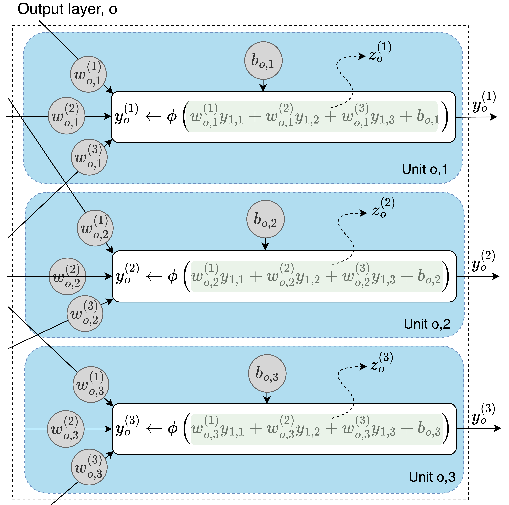
图中显示了神经网络的输出层，标记为𝑜。logits 𝑧_𝑘，对于𝑘 ∈ {1,2,3}，是浅绿色的值。这些表示在应用激活函数之前单元的输出。
向量𝐳表示为𝐳 = [𝑧_1, 𝑧_2, 𝑧_3]。
例如，图中单元𝑜_2的softmax计算为：
softmax(𝐳, 2) = 𝑒^𝑧_2 / (𝑒^𝑧_1 + 𝑒^𝑧_2 + 𝑒^𝑧_3)
Softmax将向量转换为离散概率分布(DPD)，确保∑_𝑘=1^𝐶 softmax(𝐳, 𝑘) = 1。DPD为有限集合中的值分配概率，其总和等于1。有限集合包含可数的不同元素。例如，在具有类别1、2和3的分类任务中，这些类别构成一个有限集合。softmax函数将每个类别映射到一个概率，这些概率总和为1。
让我们逐步计算概率。假设我们有三个logits，𝐳 = [2.0, 1.0, 0.5]，表示文档分类为电影、音乐或科学。
首先，计算每个logit的𝑒^𝑧_𝑘：
𝑒^𝑧_1 = 𝑒^2.0 ≈ 7.39, 𝑒^𝑧_2 = 𝑒^1.0 ≈ 2.72, 𝑒^𝑧_3 = 𝑒^0.5 ≈ 1.65
接下来，将这些值相加：∑_𝑖=1^3 𝑒^𝑧_𝑖 = 7.39 + 2.72 + 1.65 ≈ 11.76。
现在使用softmax公式，softmax(𝐳, 𝑘) = 𝑒^𝑧_𝑘 / ∑_𝑖=1^3 𝑒^𝑧_𝑖，来计算概率：
Pr(电影) = 7.39/11.76 ≈ 0.63, Pr(音乐) = 2.72/11.76 ≈ 0.23, Pr(科学) = 1.65/11.76 ≈ 0.14
神经网络softmax输出更好地描述为”概率得分”而非真正的统计概率，尽管它们总和为一并类似于类别似然。与logistic回归或朴素贝叶斯模型不同，神经网络不产生真正的类别概率。然而，为了简单起见，我将在本书中将这些概率得分称为”概率”。
交叉熵损失衡量预测概率与真实分布的匹配程度。真实分布通常是独热向量(one-hot vector)，只有一个元素等于1（正确类别），其他地方为0。例如，具有3个类别的独热编码如下：
类别 独热向量 1 [1,0,0] 2 [0,1,0] 3 [0,0,1]
单个示例的交叉熵损失为：
loss(𝐲̂, 𝐲) = -∑_(𝑘=1)^𝐶 𝑦_𝑘 log(𝑦̂_𝑘),
其中𝐶是类别数，𝐲是独热编码的真实标签，𝐲̂是预测概率。这里，𝑦_𝑘和𝑦̂_𝑘分别表示𝐲和𝐲̂的第𝑘个元素。
由于𝐲是独热编码的，只有对应于正确类别的项对求和有贡献。因此求和通过保留仅该单项来简化。让我们简化它。假设正确类别是𝑐，所以𝑦_𝑐 = 1且对于所有𝑘 ≠ 𝑐，𝑦_𝑘 = 0。在求和中，只有𝑘 = 𝑐的项将为非零。方程简化为：
loss(𝐲̂, 𝐲) = -log(𝑦̂_𝑐) (2.1)
这种简化形式表明损失对应于分配给正确类别的概率的负对数。对于𝑁个示例，平均损失为：
loss = -(1/𝑁) ∑_(𝑖=1)^𝑁 log(𝑦̂_𝑐_𝑖),
其中𝑐_𝑖是第𝑖个示例的正确类别索引。
当在输出层与softmax一起使用时，交叉熵损失引导网络为正确类别分配高概率，同时降低错误类别的概率。
对于具有三个类别（电影、音乐和科学）的文档分类示例，网络生成三个logits。这些logits通过softmax函数转换为每个类别的概率。然后在这些分数和真实的独热编码标签之间计算交叉熵损失。
让我们通过训练一个简单的两层神经网络来将文档分类为三个类别来说明这一点。我们首先导入依赖项、设置随机种子并定义数据集：
import re, torch, torch.nn as nn
torch.manual_seed(42) ➊
docs = [
"Movies are fun for everyone.", "Watching movies is great fun.",
...
"Listen to folk music!"
]
labels = [1, 1, 1, 3, 3, 3, 2, 2, 2, 2]
num_classes = len(set(labels))在第➊行设置随机种子确保PyTorch运行时随机数生成的一致性。这保证了可重现性，允许您将性能变化归因于代码或超参数修改，而不是随机变化。可重现性对于团队合作也至关重要，使协作者能够在相同条件下检查问题。
接下来，我们使用两种方法将文档转换为词袋：tokenize，将输入文本分割为小写单词，以及get_vocabulary，构建词汇表：
def tokenize(text):
return re.findall(r"\w+", text.lower()) ➊
def get_vocabulary(texts):
tokens = {token for text in texts for token in tokenize(text)} ➋
return {word: idx for idx, word in enumerate(sorted(tokens))} ➌在第➊行中，正则表达式+从文本中提取单个单词。正则表达式是用于定义搜索模式的字符序列。模式+匹配”单词字符”序列，如字母、数字和下划线。
Python的re模块中的findall函数应用正则表达式并返回输入字符串中所有匹配项的列表。在这种情况下，它提取所有单词。
在第➋行中，通过遍历每个文档并使用相同的正则表达式提取单词，将语料库转换为一组tokens。在第➌行中，这些tokens按字母顺序排序并映射到唯一索引，形成词汇表。
构建词汇表后，下一步是定义将文档转换为特征向量的特征提取函数：
def doc_to_bow(doc, vocabulary):
tokens = set(tokenize(doc))
bow = [0] * len(vocabulary)
for token in tokens:
if token in vocabulary:
bow[vocabulary[token]] = 1
return bowdoc_to_bow函数接受一个文档字符串和一个词汇表，并返回文档的词袋表示。
现在，让我们将我们的文档和标签转换为数字：
vectors = torch.tensor(
[doc_to_bow(doc, vocabulary) for doc in docs],
dtype=torch.float32
)
labels = torch.tensor(labels, dtype=torch.long) - 1 ➊形状为(10, 26)的vectors张量将10个文档表示为行，26个词汇表tokens表示为列，而形状为(10,)的labels张量包含每个文档的类别标签。标签使用整数索引而不是独热编码，因为PyTorch的交叉熵损失函数(nn.CrossEntropyLoss)期望这种格式。
第➊行使用torch.long将标签转换为64位整数。-1调整将我们原始的类别1、2、3转换为索引0、1、2，这与PyTorch的期望一致，即对于模型和损失函数如CrossEntropyLoss，类别索引从0开始。
PyTorch为模型定义提供了两个API：sequential API和module API。虽然我们在第1.8节中使用了简单的nn.Sequential API来定义我们的模型，但现在我们将探索使用更灵活的nn.Module API构建多层感知器：
input_dim = len(vocabulary)
hidden_dim = 50
output_dim = num_classes
class SimpleClassifier(nn.Module):
def __init__(self, input_dim, hidden_dim, output_dim):
super().__init__()
self.fc1 = nn.Linear(input_dim, hidden_dim)
self.relu = nn.ReLU()
self.fc2 = nn.Linear(hidden_dim, output_dim)
def forward(self, x):
x = self.fc1(x) ➊
x = self.relu(x) ➋
x = self.fc2(x) ➌
return x
model = SimpleClassifier(input_dim, hidden_dim, output_dim)SimpleClassifier类实现了一个具有两层的前馈神经网络。其构造函数定义了网络组件：
一个全连接层self.fc1，将大小为input_dim（等于词汇表大小）的输入映射到50个(hidden_dim)输出。
一个ReLU激活函数引入非线性。
第二个全连接层self.fc2，将50个中间输出减少到output_dim，即唯一标签的数量。
forward方法描述了前向传播，其中输入流经各层：
• 在第➊行中，形状为(10, 26)的输入x传递给第一个全连接层，将其转换为形状(10, 50)。
• 在第➋行中，该层的输出通过ReLU激活函数，保持形状(10, 50)。
• 在第➌行中，结果发送到第二个全连接层，从形状(10, 50)减少到(10, 3)，产生带有logits的模型最终输出。
当您将输入数据传递给模型实例时，会自动调用forward方法，如下所示：model(input)。
虽然SimpleClassifier省略了最终的softmax层，但这是有意的——PyTorch的CrossEntropyLoss为了稳定性在内部结合了softmax和交叉熵损失。这种设计消除了在模型前向传播中显式softmax的需要。
定义了我们的模型后，如第1.8节所述，下一步是定义损失函数、选择梯度下降算法并设置训练循环：
criterion = nn.CrossEntropyLoss() optimizer = torch.optim.SGD(model.parameters(), lr=0.001)
for step in range(3000):
optimizer.zero_grad()
loss = criterion(model(vectors), labels)
loss.backward()
optimizer.step()
如您所见，训练循环与第1.8节中的完全相同。训练完成后，我们可以在新文档上测试模型：
new_docs = [
"Listening to rock music is fun.", "I love science very much."
]
class_names = ["Cinema", "Music", "Science"]
new_doc_vectors = torch.tensor(
[doc_to_bow(new_doc, vocabulary) for new_doc in new_docs] ,
dtype=torch.float32
)
with torch.no_grad(): ➊
outputs = model(new_doc_vectors) ➋
predicted_ids = torch.argmax(outputs, dim=1) + 1 ➌
for i, new_doc in enumerate(new_docs):
print(f'[{]new_doc[}]: [{]class_names[predicted_ids[i].item() -1][}]')
输出：
Listening to rock is fun.: Music I love scientific research.: Science
第➊行中的torch.no_grad()语句禁用了默认的梯度跟踪。虽然梯度在训练期间对于更新模型参数至关重要，但在测试或推理期间却不需要。由于这些阶段不涉及参数更新，禁用梯度跟踪可以节省内存并加快计算速度。注意，术语”测试”、“推理”和”评估”在指代对未见数据生成预测时经常可以互换使用。
在第➋行中，模型在推理期间同时处理所有输入，就像在训练期间一样。这种并行处理方法利用了向量化操作，与逐个处理输入相比，大大减少了计算时间。
我们只关心最终标签，而不是模型返回的logits。在第➌行中，torch.argmax识别最高logit的索引，对应预测的类别。加1是为了补偿之前从基于1的索引到基于0的索引的转换。
虽然词袋方法具有简单性和实用性，但它也有显著的局限性。最重要的是，它无法捕获token的顺序或上下文。考虑”the cat chased the dog”和”the dog chased the cat”如何产生相同的表示，尽管它们传达的是相反的含义。
N-grams为这一挑战提供了解决方案。N-gram由文本中的𝑛个连续token组成。考虑句子”Movies are fun for everyone”——其bigrams(2-grams)包括”Movies are”、“are fun”、“fun for”和”for everyone”。通过保留token序列，n-grams保留了单个token无法捕获的上下文信息。
然而，使用n-grams是有代价的。词汇表大幅扩展，增加了模型训练的计算成本。此外，模型需要更大的数据集来有效学习扩展的可能n-grams集合的权重。
词袋方法的另一个局限性是它如何处理词汇表外的单词。当一个单词在推理期间出现但在训练期间不存在——因此不在词汇表中——它无法在特征向量中表示。同样，该方法在处理同义词和近义词时也存在困难。像”movie”和”film”这样的单词被处理为完全不同的术语，迫使模型为每个单词学习单独的参数。由于标记数据通常获取成本高昂，导致标记数据集相当小，如果模型能够识别并集体处理具有相似含义的单词会更有效率。
Word embeddings通过将语义相似的单词映射到相似的向量来解决这个问题。
考虑之前的文档3(“Enjoy a great movie today.”)。我们可以将这个词袋(BoW)分解为表示单个单词的one-hot向量：
BoW 1 0 0 0 1 0 0 0 0 1 0 0 0 0 0 0 1 0 0 0 0 0 0 1 0 0 enjoy 0 0 0 0 1 0 0 0 0 0 0 0 0 0 0 0 0 0 0 0 0 0 0 0 0 0 a [1 0 0 0 0 0 0 0 0 0 0 0 0 0 0 0 0 0 0 0 0 0 0 0 0 0 ]
great 0 0 0 0 0 0 0 0 0 1 0 0 0 0 0 0 0 0 0 0 0 0 0 0 0 0 movie 0 0 0 0 0 0 0 0 0 0 0 0 0 0 0 0 1 0 0 0 0 0 0 0 0 0 today 0 0 0 0 0 0 0 0 0 0 0 0 0 0 0 0 0 0 0 0 0 0 0 1 0 0 如我们所见，文档的词袋向量是其单词的one-hot向量的和。现在，让我们检查文本”Films are my passion.”的one-hot向量和BoW向量：
BoW 0 0 1 0 0 0 0 0 0 0 0 0 0 0 0 0 0 0 0 0 0 0 0 0 0 0 films 0 0 0 0 0 0 0 0 0 0 0 0 0 0 0 0 0 0 0 0 0 0 0 0 0 0 are [0 0 1 0 0 0 0 0 0 0 0 0 0 0 0 0 0 0 0 0 0 0 0 0 0 0 ]
my [0 0 0 0 0 0 0 0 0 0 0 0 0 0 0 0 0 0 0 0 0 0 0 0 0 0 ]
pas- [0 0 0 0 0 0 0 0 0 0 0 0 0 0 0 0 0 0 0 0 0 0 0 0 0 0 ]
sion
这里有两个关键问题。首先，即使一个单词存在于训练数据和词汇表中，one-hot编码将其简化为零向量中的单个1，这给分类器几乎没有有意义的信息来学习。
其次，在上述文档中，大多数one-hot编码的单词向量没有添加价值，因为四分之三变成了零向量——表示词汇表中缺失的单词。
更好的方法是让模型理解”films”虽然在训练中未见过，但与”movies”具有语义含义。这将允许”films”的特征向量与”movies”类似地被处理。这种方法需要能够捕获单词之间语义关系的单词表示。
Word embeddings通过将单词表示为密集向量而不是稀疏one-hot向量来克服词袋模型的局限性。这些低维表示包含主要是非零值，相似的单词具有表现出高余弦相似度的embeddings。这些embeddings是从跨越数百万到数亿文档的大量无标签数据集中学习的。
Word2vec是一种广泛使用的embedding学习算法，存在两种变体。我们将检查skip-gram公式。
Skip-grams 是跳过一个单词的词序列。例如，在 “Professor Alan Turing’s * advanced computer science” 中，缺失的单词（标记为 *）可能是 “research”、“work” 或 “theories”——这些词在上下文中合适，尽管它们不是完全同义词。训练模型从周围上下文预测这些跳过的单词有助于它学习单词之间的语义关系。
这个过程也可以反向进行：跳过的单词可以用来预测其上下文单词。这是 skip-gram算法 的基础。
skip-gram大小指定包含多少个上下文单词。对于大小为5，这意味着跳过单词前后各两个单词。以下是我们句子中大小为5的skip-grams示例，跳过不同的单词（标记为 *）：
Skip-gram 跳过的单词 professor alan * research advanced turing’s alan turing’s * advanced computer research turing’s research * computer science advanced
如果语料库词汇表包含10,000个单词，带有300个单元嵌入层的skip-gram模型如下所示：
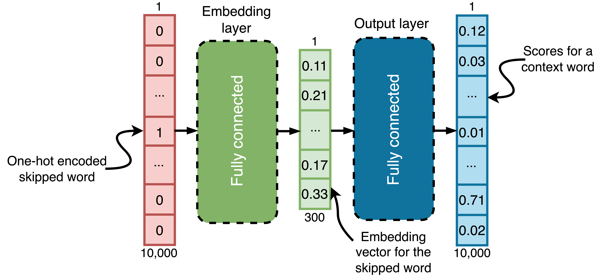
这是一个skip-gram大小为5且嵌入层为300个单元的skip-gram模型。如你所见，该模型使用one-hot编码的跳过单词来预测上下文单词，通过两个连续的全连接层处理输入。它不会一次预测所有上下文单词，而是为每个单词分别进行预测。
以下是它如何处理skip-gram “professor alan * research advanced” 和跳过单词 “turing’s” 的过程。我们将skip-gram转换为4个训练对：
跳过单词（输入） 上下文单词（目标） 位置 turing’s professor −2 turing’s alan −1 turing’s research +1 turing’s advanced +2
对于每对跳过和上下文单词，比如 (turing’s, professor)，模型：
对于给定的上下文单词，输出层在词汇表上产生概率向量。每个值表示该词汇表单词成为上下文单词的可能性。
好奇的读者可能会注意到：如果每个训练对的输入保持不变——比如 “turing’s”——为什么输出会不同？这是一个很好的观察！对于相同的输入，输出确实是相同的。但是，损失计算因每个上下文单词而异。
当使用 chat language models 时，你可能注意到相同的问题经常产生不同的答案。虽然这可能暗示模型是非确定性的，但这并不准确。LLM从根本上是一个神经网络，类似于skip-gram模型但参数更多。表面的随机性来自这些模型用于生成文本的方式。在生成过程中，单词基于其预测概率进行采样。虽然高概率单词更有可能被选择，但低概率单词仍可能被选中。这种采样过程创造了我们在响应中观察到的变化。我们将在第5章讨论采样。
skip-gram模型使用 cross-entropy 作为其损失函数，就像前面讨论的三类文本分类器一样，但处理10,000个类别——词汇表中每个单词一个类别。对于训练集中的每个skip-gram，模型分别计算每个上下文单词的损失，比如围绕 “turing’s” 的四个单词，然后平均这些损失以同时接收所有上下文单词预测的反馈。
这种训练方法使模型能够捕获有意义的单词关系，即使在不同训练对中使用相同输入时也是如此。
这里有一个例子。对于输入单词 “turing’s”，假设模型为不同词汇表单词分配这些概率：professor (0.1), alan (0.15), research (0.2), advanced (0.05)。在训练模型时，每个输入-目标单词对都对损失函数有贡献。例如，当训练数据中 “turing’s” 与 “professor” 出现时，损失致力于增加0.1的分数。类似地，当与 “alan” 配对时，损失致力于增加0.15，与 “research” 配对增加0.2，与 “advanced” 配对增加0.05。
在反向传播期间，模型调整其权重以使这些分数对给定的上下文单词更高。例如，更新后的分数可能是：professor: 0.11, alan: 0.17, research: 0.22, advanced: 0.07，而其他词汇表单词的分数略有下降。
一旦训练完成，输出层被丢弃。嵌入层然后作为新的输出层。当给定one-hot编码的输入单词时，模型产生一个300维向量——这就是词嵌入。
Word2vec只是从大型文本语料库学习词嵌入的一种方法。其他方法，如 GloVe 和 FastText，提供替代方法，专注于捕获全局共现统计或子词信息以创建更稳健的嵌入。
使用词嵌入表示文本比词袋模型具有明显优势。一个优势是 降维，它将单词表示从词汇表大小（如在one-hot编码中）压缩到小向量，通常在100到1000维之间。这使得在机器学习任务中处理非常大的语料库变得可行。
语义相似性 是词嵌入的另一个优势。具有相似含义的单词被映射到在嵌入空间中彼此接近的向量。例如，考虑Google在包含约1000亿单词的新闻语料库上训练的word2vec嵌入。在下面的图表中，“Moscow” 和 “Beijing”，或 “Russia” 和 “China”，由彼此靠近的点表示。这反映了它们的语义关系：
该图显示了国家及其首都的300维嵌入向量的2D投影。含义相关的词聚集在一起，而连接城市与其各自国家的近似平行线揭示了它们的语义关系。
skip-gram模型即使在没有直接共现的情况下，当词出现在相似上下文中时也能捕获语义相似性。例如，如果模型对”films”和”movies”产生不同的概率，损失函数会驱使它预测相似的概率，因为上下文词经常重叠。通过反向传播，这些词的嵌入层输出会收敛。
4 这些嵌入可以通过搜索”GoogleNews-vectors-negative300.bin.gz”在线找到。书籍wiki上有备份：https://www.thelmbook.com/data/word-vectors
在词嵌入之前，WordNet（1985年在普林斯顿创建）试图通过将词组织成同义词集合并记录它们之间的语义链接来捕获词关系。虽然有效，但这些手工制作的映射无法扩展到大词汇量，也无法捕获基于嵌入方法自然出现的词使用中的微妙模式。
由于无法直接可视化300维向量，我们使用了一种叫做主成分分析(PCA)的降维技术将它们投影到二维，称为第一和第二主成分。
降维算法在保持向量关系的同时压缩高维向量。上图中的第一和第二主成分保留了词之间的语义连接，揭示了它们的关系。
有关PCA和其他降维方法的资源，请查看书籍wiki上列出的推荐材料。
词嵌入捕获词的含义及其与其他词的关系。它们是许多自然语言处理(NLP)任务的基础。例如，神经语言模型将文档编码为词嵌入矩阵。每行对应一个词的嵌入向量，其在矩阵中的位置反映该词在文档中的位置。
word2vec嵌入支持有意义的算术运算（如”king − man + woman ≈ queen”）的发现是一个关键时刻，揭示了神经网络可以在向量运算产生词义变化的空间中编码语义关系。这使得发明能够对词进行复杂数学运算的神经网络（如大型语言模型所做的）只是时间问题。
然而，现代语言模型通常使用子词——比完整单词更小的token。在转向语言模型——本书的主要主题——之前，让我们首先研究字节对编码，一种广泛使用的子词tokenization方法。
字节对编码(BPE)是一种tokenization算法，通过将词分解为称为子词的更小单元来解决处理词汇外词的挑战。
BPE最初是一种数据压缩技术，通过将词视为字符序列而适用于NLP。它将最频繁的符号对——字符或子词——合并为新的子词单元。这一过程持续进行，直到词汇表达到目标大小。
以下是基本的BPE算法：
使用文本语料库。将语料库中的每个词分割为单个字符。例如，词”hello”变成”h e l l o”。初始词汇表由语料库中所有唯一字符组成。
继续迭代合并，直到词汇表达到所需大小。
该算法很简单，但直接在大型语料库上实现是低效的。在每次合并后重新计算符号对或更新整个语料库在计算上是昂贵的。
一种更高效的方法是用语料库中所有唯一词及其计数初始化词汇表。使用这些词计数计算对计数，并通过合并最流行的对来迭代更新词汇表。让我们编写代码：
from collections import defaultdict
def initialize_vocabulary(corpus):
vocabulary = defaultdict(int)
charset = set()
for word in corpus:
word_with_marker = '_' + word ➊
characters = list(word_with_marker) ➋
charset.update(characters) ➌
tokenized_word = ' '.join(characters) ➍
vocabulary[tokenized_word] += 1 ➎
return vocabulary, charset该函数生成一个词汇表，将词表示为字符序列并跟踪它们的计数。给定一个语料库（词列表），它返回两个输出：vocabulary，一个将每个词——用字符间空格tokenized——映射到其计数的字典，以及charset，语料库中所有唯一字符的集合。
工作原理如下：
• 第➊行在每个词的开头添加词边界标记”_”
区分开头的子词和中间的子词。例如，“restart” 中的 “_re” 与 “agree” 中的 “re” 是不同的。这有助于从使用模型生成的 token 重新构建句子。当一个 token 以 “_” 开头时，它标记着一个新单词的开始，需要在它前面添加一个空格。
• 第➋行将每个单词拆分为单个字符。
• 第➌行用单词中遇到的任何新字符更新字符集。
• 第➍行用空格连接字符以创建单词的分词版本。例如，单词 “hello” 变成 _ h e l l o。
• 第➎行将 tokenized_word 添加到词汇表中，其计数递增。
初始化后，BPE 迭代地合并词汇表中最频繁的 token 对(双字符组)。通过移除这些对之间的空格，它形成逐渐更长的 token。
def get_pair_counts(vocabulary):
pair_counts = defaultdict(int)
for tokenized_word, count in vocabulary.items(): tokens = tokenized_word.split() ➊
for i in range(len(tokens) -1):
pair = (tokens[i], tokens[i + 1]) ➋
pair_counts[pair] += count ➌
return pair_counts
该函数计算相邻 token 对在分词词汇表单词中出现的频率。输入词汇表将分词单词映射到它们的计数，输出是 token 对及其总计数的字典。
对于词汇表中的每个 tokenized_word，我们在第➊行将其拆分为 token。嵌套循环在第➋行形成相邻的 token 对，并在第➌行按单词的计数递增它们的计数。
def merge_pair(vocabulary, pair):
new_vocabulary = {}
bigram = re.escape(' '.join(pair)) ➊
pattern = re.compile([r"(? + bigram + [r"(?!\S)"]) ➋]
for tokenized_word, count in vocabulary.items(): new_tokenized_word = pattern.sub("".join(pair), token
ized_word) ➌
new_vocabulary[new_tokenized_word] = count
return new_vocabulary
该函数在词汇表的所有分词单词中合并输入 token 对。它返回一个新词汇表，其中该对的每次出现都被合并成单个 token。例如，如果该对是 ('e', 'l')，分词单词是 “_ h e l l o”，合并 'e' 和 'l' 会移除它们之间的空格，结果是 “_ h el l o”。
在第➊行，re.escape 函数自动为字符串中的特殊字符(如 ., *, 或 ?)添加反斜杠，因此它们被解释为字面字符，而不是在正则表达式中具有特殊含义。
第➋行的正则表达式只匹配完整的 token 对。它通过检查匹配前后是否没有非空白字符来确保双字符组不是更大单词的一部分。例如 “good morning” 在 “this is good morning” 中匹配，但在 “thisis-good morning” 中不匹配，其中 “good” 是 “thisisgood” 的一部分。
表达式 (?是负向后查找和负向前查找断言，确保双字符组独立存在。
后查找检查双字符组前面没有非空白字符，意味着它跟在空白或文本开头之后。前查找同样确保双字符组后面没有非空白字符，意味着它在空白或文本结尾之前。它们一起防止双字符组成为更长单词的一部分。
最后，在第➌行，函数使用 pattern.sub() 将匹配模式的所有出现替换为连接的对，创建新的分词单词。
下面的函数实现了 BPE 算法，迭代地合并最频繁的 token 对，直到没有合并剩余或达到目标词汇表大小：
def byte_pair_encoding(corpus, vocab_size):
vocabulary, charset = initialize_vocabulary(corpus)
merges = []
tokens = set(charset)
while len(tokens) < vocab_size: ➊ pair_counts = get_pair_counts(vocabulary)
if not pair_counts: ➋
break
most_frequent_pair = max(pair_counts, key=pair_counts .get) ➌
merges.append(most_frequent_pair)
vocabulary = merge_pair(vocabulary, most_frequent_pai r) ➍
new_token = ''.join(most_frequent_pair) ➎
tokens.add(new_token) ➏
return vocabulary, merges, charset, tokens
该函数处理语料库以产生分词器所需的组件。它初始化词汇表和字符集，创建一个空的合并列表来存储合并操作，并将 tokens 设置为初始字符集。随着时间推移，tokens 增长以包括分词器能够生成的所有唯一 token。
第➊行的循环继续，直到分词器支持的 token 数量达到 vocab_size 或没有剩余对可以合并。第➋行检查是否没有更多有效对，在这种情况下循环退出。第➌行找到最频繁的 token 对，在第➍行在整个词汇表中合并以在第➎行创建新 token。这个新 token 在第➏行添加到 tokens 集合中，合并记录在 merges 中。
该函数返回四个输出：更新的词汇表、合并操作列表、原始字符集和最终的唯一 token 集合。
下面的函数使用经过训练的分词器对单词进行分词：
def tokenize_word(word, merges, vocabulary, charset, unk_toke n=""):
word = '_' + word
if word in vocabulary:
return [word]
tokens = [char if char in charset else unk_token for char in word]
for left, right in merges: i = 0
while i < len(tokens) -1:
if tokens[i:i+2] == [left, right]:
tokens[i:i+2] = [left + right]
else:
i += 1
return tokens 该函数使用byte_pair_encoding的merges、vocabulary和charset对单词进行tokenization。单词首先被加上前缀。如果加前缀的单词存在于vocabulary中，则将其作为唯一token返回。否则，将单词分割为字符，将任何不在charset中的字符替换为unk_token。然后使用merges中规则的顺序对这些字符进行迭代合并。
为了对文本进行tokenization，我们首先基于空格将其分割为单词，然后单独对每个单词进行tokenization。thelmbook.com/nb/2.1 notebook包含了使用新闻语料库训练BPE tokenizer的代码。使用在notebook中训练的tokenizer对句子“Let’s proceed to the language modeling chapter.”进行tokenization后的版本是：
["_Let", "'", "s", "_proceed", "_to", "_the", "_language", "_ model", "ing", "_part", "."]
这里，“let’s”和”modeling”被分解为subwords。这表明它们在训练数据中相对稀少，目标vocabulary大小较小（我设置了5000个tokens）。
tokenize_word算法由于嵌套循环而效率低下：它在第➍行遍历所有merges，同时在第➎行检查每个token对。然而，由于现代语言模型的vocabulary超过100,000个tokens，大多数输入单词存在于vocabulary中，绕过了subword tokenization。notebook的优化版本使用缓存和预计算数据结构来消除这些嵌套循环，将tokenization时间从0.0549秒减少到0.0037秒。虽然实际性能因系统而异，但优化方法始终提供更好的速度。
对于没有空格的语言（如中文）或多语言模型，通常跳过基于空格的初始tokenization。相反，文本被分割为单个字符。从那里开始，BPE照常进行，合并最频繁的字符或token对以形成subwords。
我们现在准备研究语言建模的核心思想。我们将从传统的基于计数的方法开始，在后续章节中涵盖基于神经网络的技术。
语言模型通过基于先前tokens估计条件概率来预测序列中的下一个token。它为所有可能的下一个tokens分配概率，从而能够选择最可能的一个。这种能力支持文本生成、机器翻译和语音识别等任务。在大型无标签文本语料库上训练，语言模型学习语言中的统计模式，使它们能够用于生成类人文本。
形式上，对于𝐿个tokens的序列𝐬(𝑡₁, 𝑡₂, …, 𝑡ₗ)，语言模型计算：
PrC𝑡ₗ₊₁ = 𝑡 |𝐬 = (𝑡₁, 𝑡₂, …, 𝑡ₗ)D (2.2)
这里，Pr表示vocabulary上下一个token的条件概率分布。条件概率量化了在另一个事件已经发生的情况下一个事件发生的可能性。在语言模型中，它反映了给定前面的token序列，特定token成为下一个token的概率。这个序列通常被称为输入序列、context或prompt。
以下记号等价于方程2.2：
Pr(𝑡ₗ₊₁|𝑡₁, 𝑡₂, …, 𝑡ₗ) 或 Pr(𝑡ₗ₊₁|𝐬) (2.3)
我们将根据上下文选择不同的记号，从简洁到详细。
对于任何token 𝑡和序列𝐬，条件概率满足Pr(𝑡|𝐬) ≥ 0，意味着概率总是非负的。此外，vocabulary 𝒱中所有可能下一个tokens的概率必须求和为1：∑ₜ∈𝒱 Pr(𝑡|𝐬) = 1。这确保模型输出vocabulary上的有效离散概率分布。
为了说明，让我们考虑一个包含5个单词的vocabulary 𝒱：“are”、“cool”、“language”、“models”和”useless”。对于序列𝐬 = (language, models, are)，语言模型可以为𝒱中每个可能的下一个单词输出以下概率：
PrC𝑡 = are|𝐬 = (language, models, are)D = 0.01
PrC𝑡 = cool|𝐬 = (language, models, are)D = 0.77
PrC𝑡 = language|𝐬 = (language, models, are)D = 0.02
PrC𝑡 = models|𝐬 = (language, models, are)D = 0.15
PrC𝑡 = useless|𝐬 = (language, models, are)D = 0.05
该示例演示了语言模型如何为每个潜在的下一个单词在其vocabulary上分配概率，其中”cool”获得最高概率。这些概率求和为1，形成有效的离散概率分布。
这种类型的模型是自回归语言模型，也称为因果语言模型。自回归涉及仅使用序列中元素的前驱来预测该元素。这样的模型在文本生成方面表现出色，包括基于Transformer的chat语言模型(chat LMs)和本书中讨论的所有语言模型。
相比之下，掩码语言模型，如BERT——一个开创性的基于Transformer的模型——使用不同的方法。这些模型预测序列中故意掩码的tokens，利用前面和后面的context。这种双向方法特别适合文本分类和命名实体识别等任务。
在神经网络成为语言建模标准之前，传统方法依赖于统计技术。这些基于计数的模型，仍在智能手机自动完成中使用，基于从语料库中学习的单词或n-gram频率计数来估计单词序列的概率。为了更好地理解这些方法，让我们实现一个简单的基于计数的语言模型。
我们将专注于三元组模型(𝑛 = 3)来说明这是如何工作的。在三元组模型中，token的概率基于前面两个tokens计算：
Pr(𝑡ᵢ|𝑡ᵢ₋₂, 𝑡ᵢ₋₁) = C(𝑡ᵢ₋₂, 𝑡ᵢ₋₁, 𝑡ᵢ) / C(𝑡ᵢ₋₂, 𝑡ᵢ₋₁) (2.4)
其中 𝐶(⋅) 表示训练数据中 n-gram 的出现次数计数。
例如，如果三元组(trigram) “language models rock” 在语料库中出现 50 次，而 “language models” 总共出现 200 次，那么：
Pr(rock|language, models) = = 0.25
这意味着在我们的训练数据中，“rock” 跟在 “language models” 后面的概率为 25%。
方程 2.4 是给定上下文条件下token概率的最大似然估计(MLE)。它衡量一个三元组相对于共享相同两个token历史的所有三元组的相对频率。
随着训练语料库的增大，MLE 对于频繁出现的 n-gram 变得更加可靠。这符合基本的统计原理：更大的数据集产生更准确的估计。
然而，有限大小的语料库带来了一个问题：我们在实践中可能遇到的一些 n-gram 可能不会出现在训练数据中。例如，如果三元组 “language models sing” 从未在我们的语料库中出现，那么根据 MLE，它的概率将为零：
Pr(sing|language, models ) = = 0
这是有问题的，因为它给任何包含未见过的 n-gram 的序列分配零概率，即使它是一个有效的短语。为了解决这个问题，存在几种技术，其中之一是回退(backoff)。思路很简单：如果没有观察到高阶 n-gram（例如三元组），我们就”回退”到低阶 n-gram（例如二元组）。概率 Pr(𝑡|𝑡, 𝑡) 由以下表达式之一给出，具体取决于条件是否为真：
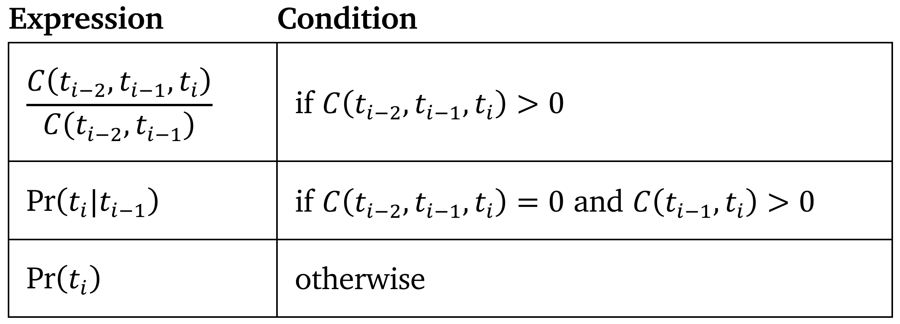
这里，𝐶(𝑡, 𝑡, 𝑡) 是三元组 (𝑡, 𝑡, 𝑡) 的计数，𝐶(𝑡, 𝑡) 和 𝐶(𝑡, 𝑡) 分别是二元组 (𝑡, 𝑡) 和 (𝑡, 𝑡) 的计数。二元组概率和一元组概率计算如下：
Pr(𝑡|𝑡) = 𝐶(𝑡, 𝑡)/𝐶(𝑡), Pr(𝑡) = (𝐶(𝑡) + 1)/(𝑊 + 𝑉)
其中 𝐶(𝑡) 是token 𝑡 的计数，𝑊 是语料库中token的总数，𝑉 是词汇表大小。
向 𝐶(𝑡) 添加 1，称为加一平滑或拉普拉斯平滑，解决了语料库中不存在的token的零概率问题。如果我们使用实际频率 Pr(𝑡) = 𝐶(𝑡)/𝑊，任何在语料库中找不到的token都将具有零概率，当模型遇到有效但未见过的token时会产生问题。拉普拉斯平滑通过给每个token计数添加 1 来解决这个问题，确保所有token，包括未见过的token，都获得一个小的非零概率。分母通过添加 𝑉 来调整，以考虑分子中引入的额外计数。
现在，让我们在 CountLanguageModel 类中实现一个带有回退的语言模型（我们将在下一节中实现拉普拉斯平滑）：
class CountLanguageModel:
def __init__(self, n): ➊ self.n = n self.ngram_counts = [{} for _ in range(n)] ➋ self.total_unigrams = 0
def predict_next_token(self, context): ➌ for n in range(self.n, 1, -1): ➍ if len(context) >= n -1: ➎ context_n = tuple(context[-(n -1):]) ➏ counts = self.ngram_counts[n -1].get(context_n) if counts: return max(counts.items(), key=lambda x: x[1])[0]
unigram_counts **=** self.ngram_counts\[0\].get(())
**if** unigram_counts:
**return** max(unigram_counts.items(), key**=lambda** x: x\[1\])\[0\]
**return** None在第 ➊ 行，模型用 n 参数初始化，定义最大 n-gram 阶数（例如，n=3 表示三元组）。第 ➋ 行的 ngram_counts 列表存储一元组、二元组、三元组等的 n-gram 频率字典，在训练期间填充。对于 n=3，给定语料库 “Language models are powerful. Language models are useful.” 转换为小写并移除标点符号，self.ngram_counts 将包含：
ngram_counts[0] = {(): {"language": 2, "models": 2, "are": 2, "powerful": 1, "useful": 1}}
ngram_counts[1] = {("language",): {"models": 2}, ("models",): {"are": 2}, ("are",): {"powerful": 1, "useful": 1}, ("powerful",): {"language": 1}}
ngram_counts[2] = {("language", "models"): {"are": 2}, ("models", "are"): {"powerful": 1, "useful": 1}, ("are", "powerful"): {"language": 1}, ("powerful", "language"): {"models": 1}}
predict_next_token 方法使用回退来预测下一个token。从第 ➍ 行的最高 n-gram 阶数开始，它检查上下文是否包含足够的token用于此 n-gram 阶数（第 ➎ 行）。如果是，它在第 ➏ 行提取上下文并尝试在 ngram_counts 中找到匹配。如果没有找到匹配，它回退到低阶 n-gram 或默认使用一元组计数。例如，给定 context=["language", "models", "are"] 和 n=3：
• 第一次迭代：context_n = ("models", "are") • 第二次迭代（如果需要）：context_n = ("are",) • 最后手段：使用空元组键 () 的一元组计数
如果找到匹配的上下文，该方法返回该上下文计数最高的token。对于输入 ["language", "models"]，它将返回 "are"，这是 ngram_counts[2] 中键 ("language", "models") 的值中计数最高的token。然而，对于输入 ["english", "language"]，它不会在 ngram_counts[2] 中找到键 ("english", "language")，因此它将回退到 ngram_counts[1] 并返回 "models"，这是键 ("language",) 的值中计数最高的token。
现在，让我们定义训练模型的方法：
def train(model, tokens): model.total_unigrams = len(tokens) for n in range(1, model.n + 1): ➊ counts = model.ngram_counts[n -1] for i in range(len(tokens) - n + 1): context = tuple(tokens[i:i + n -1]) ➋ next_token = tokens[i + n -1] ➌
if context not in counts:
counts[context] = defaultdict(int)
counts[context][next_token] = counts[context][next_token] + 1
train方法接受一个模型（CountLanguageModel的实例）和一个token列表（训练语料库）作为输入。它使用这些token更新模型中的n-gram计数。
在第➊行中，该方法迭代n-gram阶数从1到model.n（包含）。对于每个n，它从token序列生成该阶数的n-gram并计算它们的出现次数。
第➋行和第➌行提取上下文及其后续token，构建一个嵌套字典，其中每个上下文映射到后续token及其计数的字典。这些计数存储在model.ngram_counts中，predict_next_token方法稍后使用它来基于上下文进行预测。
现在，让我们训练模型：
set_seed(42)
n = set_hyperparameters()
data_url = “https://www.thelmbook.com/data/brown” train_corpus, test_corpus = download_and_prepare_data(data_url)
model = CountLanguageModel(n) train(model, train_corpus)
perplexity = compute_perplexity(model, test_corpus) print(f”\nPerplexity on test corpus: [{]perplexity[:.2f}]“)
contexts = [ “i will build a”, “the best place to”, “she was riding a”]
for context in contexts: words = tokenize(context) next_word = model.predict_next_token(words) print(f”\nContext: [{]context[}]“) print(f”Next token: [{]next_word[}]“)
该模型的完整实现，包括检索和处理训练数据的方法，可在thelmbook.com/nb/2.2笔记本中找到。在download_and_prepare_data方法中，语料库被下载、转换为小写、分词为单词，并以90/10的比例分为训练和测试分区。让我们花一点时间理解为什么最后一步是关键的。
在机器学习中，使用整个数据集进行训练无法评估模型是否泛化良好。一个常见问题是过拟合，即模型在训练数据上表现出色，但在未见过的新数据上难以做出准确预测。
将数据集分为训练集和测试集是控制过拟合的标准做法。它包括两个步骤：(1) 打乱数据和 (2) 将其分为两个子集。较大的子集称为训练数据，用于训练模型，而较小的子集称为测试数据，用于评估模型在未见示例上的性能。
测试集需要足够的大小来可靠地估计模型性能。测试比例为0.1到0.3（整个数据集的10%到30%）是常见的，尽管这因数据集大小而异。对于非常大的数据集，即使较小的测试集比例也会产生足够的示例来提供可靠的性能估计。
训练数据来自Brown Corpus，这是一个包含1961年出版的美国英语文本中超过100万个单词的集合。该语料库在语言学研究中经常使用。
当您运行代码时，您将看到以下输出：
Perplexity on test corpus: 299.06
Context: i will build a Next word: wall
Context: the best place to Next word: live
Context: she was riding a Next word: horse
暂时忽略perplexity数字；我们稍后会讨论它。基于计数的语言模型可以产生合理的即时续写，使它们适用于自动完成系统。然而，它们有显著的局限性。这些模型通常使用单词分词的语料库，因为它们的n-gram大小通常很小（最多𝑛 = 5）。超出这个范围需要太多内存并导致处理速度变慢。子词分词虽然更高效，但会产生许多仅代表单词片段的n-gram，降低下一个单词预测的质量。
单词级分词产生另一个重大缺陷：基于计数的模型无法处理词汇表外(out-of-vocabulary, OOV)单词。这类似于第2.1节讨论的词袋方法中看到的问题。例如，考虑上下文：“according to WHO, COVID-19 is a”。如果”COVID-19”不在训练数据中，模型会反复回退，直到它只依赖于”is a”，严重限制了有意义预测的上下文。
基于计数的模型也无法捕获语言中的长距离依赖关系。虽然现代Transformer模型可以处理数千个token，但使用1000个token的上下文训练基于计数的模型需要存储从𝑛 = 1到𝑛 = 1000的所有n-gram的计数，需要令人望而却步的内存量。
此外，这些模型在训练后无法适应下游任务，因为它们的n-gram计数是固定的，任何调整都需要在新数据上重新训练。
这些局限性导致了高级方法的发展，特别是基于神经网络的语言模型，它们在现代自然语言处理中基本上取代了基于计数的模型。像循环神经网络和Transformer这样的方法，我们将在接下来的两章中讨论，能够有效处理更长的上下文，产生连贯且上下文感知的文本。在探索这些方法之前，让我们看看如何评估语言模型的质量。
评估语言模型可以衡量它们的性能并允许比较模型。通常使用几种指标和技术。让我们看看主要的几种。
Perplexity是评估语言模型的广泛使用指标。它衡量模型预测文本的能力。较低的perplexity值表示更好的模型——对其预测更有信心的模型。Perplexity定义为测试集中每个token的平均负对数似然的指数：
Perplexity(𝒟, 𝑘) = exp − U log PrC𝑡 |𝑡 , … , 𝑡 D¡ [$] [IJK(",$6:)] [$6"] (2.5) 𝐷 [$%"] 1 [3]
这里，𝒟 表示测试集，𝐷 是其中token的总数，𝑡 是第[$] 𝑖 个token，PrC𝑡 |𝑡 , … , 𝑡 D 是模型在给定大小为𝑘的前置上下文窗口的情况下分配给[$] [IJK(",$6:)] [$6"] 𝑡 的概率，其中max(1, 𝑖 − 𝑘)确保[$]当没有足够的前置token来填充上下文窗口时，我们从第一个token开始。
符号[,] exp(𝑥) 和 𝑒（其中𝑒是欧拉数）是等价的。
公式2.5中的负对数似然(NLL)是我们语言模型分配的概率的负对数。当模型处理诸如”language models are”这样的文本并为下一个词”cool”分配0.77的概率时，NLL将是−log(0.77)。之所以称为”负”对数似然，是因为我们取对数的负值，而”似然”指的是模型计算的这些条件概率。在语言建模中，NLL有两个目的：它在训练过程中充当损失函数，帮助模型学习更好的概率分布（我们将在下一章训练循环神经网络语言模型时看到），以及如困惑度公式所示，它帮助我们评估模型预测文本的能力。
困惑度可以通过其几何平均公式更直观地理解。一组数字的几何平均是其乘积的𝐷次方根（其中𝐷是值的数量），困惑度是逆概率的几何平均：
["]
[3] [3] 1
Perplexity (𝒟, 𝑘) = ¢£ ¤
[$%"] PrC𝑡 |𝑡 , … , 𝑡 D [$] [IJK(",$6:)] [$6"]
这种形式表明困惑度代表了模型在预测每个token时”困惑”的加权平均因子。困惑度为10意味着平均而言，模型的不确定性相当于在每一步都必须在10种可能性中均匀选择。
如果语言模型对大小为𝑉的词汇表中的每个token分配相等的概率，其困惑度等于𝑉。这为困惑度提供了一个直观的上界——模型不能比为所有可能token分配相等似然时更加不确定。
虽然上面显示的困惑度的两种表述在数学上是等价的（证明可在本书的wiki上找到），但指数形式在计算上更方便，因为它通过对数将乘积转换为求和，使计算在数值上更稳定。
让我们使用词级tokenization的示例文本来计算困惑度，忽略标点符号：“We are evaluating a language model for English.” 为了简化，我们假设最多三个词的上下文。我们首先根据模型提供的三个词的前置上下文确定每个词的概率。以下是概率：
Pr(We ) = 0.10
Pr(are ∣ We) = 0.20
Pr(evaluating ∣ We, are) = 0.05
Pr(a ∣ We, are, evaluating) = 0.50
Pr(language ∣ are, evaluating, a) = 0.30
Pr(model ∣ evaluating, a, language) = 0.40
Pr (for ∣ a, language, model) = 0.15
Pr(English ∣ language, model, for) = 0.25
使用这些概率，我们计算每个词的负对数似然：
−logC𝑃( We)D = −log(0.10) ≈ 2.30
−logC𝑃( are ∣ We)D = −log(0.20) ≈ 1.61
−logC𝑃( evaluating ∣ We, are)D = −log(0.05) ≈ 3.00
−logC𝑃(a ∣ We, are, evaluating)D = −log(0.50) ≈ 0.69
−logC𝑃( language ∣ are, evaluating, a )D = −log(0.30) ≈ 1.20
−logC𝑃( model ∣ evaluating, a, language )D = −log(0.40) ≈ 0.92
−logC𝑃( for ∣ a, language, model)D = −log(0.15) ≈ 1.90
−logC𝑃(English ∣ language, model, for )D = −log(0.25) ≈ 1.39
接下来，我们将这些值相加，然后除以词数(8)来得到平均值：
(2.30 + 1.61 + 3.00 + 0.69 + 1.20 + 0.92 + 1.90 + 1.39)/8 ≈ 1.63
最后，我们对平均负对数似然取指数来获得困惑度：
𝑒 [".L&] ≈ 5.10
因此，该模型在这段文本上使用3词上下文的困惑度约为5.10。这意味着平均而言，模型的行为就像它为每个预测从大约5个等可能的选项中选择一样。
现在，让我们计算上一节中基于计数的模型的困惑度。为此，必须更新模型以返回给定特定上下文的token概率。将此函数添加到我们之前实现的CountLanguageModel中：
def get_probability(self, token, context):
for n in range(self.n, 1, -1): ➊
if len(context) >= n -1:
context_n = tuple(context[-(n -1):])
counts = self.ngram_counts[n -1].get(context_n)
if counts: ➋
total = sum(counts.values()) ➌
count = counts.get(token, 0)
if count > 0:
return count / total ➍
unigram_counts = self.ngram_counts[0].get(()) ➎
86 count = unigram_counts.get(token, 0)
V = len(unigram_counts)
return (count + 1) / (self.total_unigrams + V) ➏
get_probability函数类似于predict_next_token。两者都反向循环遍历n-gram阶数（第➊行）并提取相关上下文(context_n)。如果context_n在n-gram计数中匹配（第➋行），函数检索token计数。如果不存在匹配，它回退到较低阶的n-gram，最终到unigram（第➎行）。
与直接返回最可能token的predict_next_token不同，get_probability计算token的概率。在第➌行中，total是跟随上下文的token计数之和，充当分母。第➍行将token计数除以total来计算其概率。如果不存在更高阶匹配，第➏行使用加一平滑与unigram计数。
compute_perplexity方法计算语言模型对token序列的困惑度。它接受三个参数：模型、token序列和上下文大小：
def compute_perplexity(model, tokens, context_size):
if not tokens:
return float('inf')
total_log_likelihood = 0
num_tokens = len(tokens)
for i in range(num_tokens): ➊ context_start = max(0, i - context_size) context = tuple(tokens[context_start:i]) ➋ word = tokens[i]
probability = model.get_probability(word, context)
total_log_likelihood += math.log(probability) ➌
average_log_likelihood = total_log_likelihood / num_tokens ➍
perplexity = math.exp(-average_log_likelihood) ➎
return perplexity
在第➊行，函数遍历序列中的每个token。对于每个token：
• 第➋行提取其上下文，使用它之前最多context_size个token。
表达式max(0, i - context_size)确保索引保持在边界内，就像公式2.5中一样。
• 在第➌行，将token概率的对数添加到累积对数似然中。模型的get_probability方法处理概率计算。
处理完所有token后，第➍行通过将总对数似然除以token数量来计算平均对数似然。
最后，在第➎行，计算困惑度作为负平均对数似然的指数，如公式2.5中所述。
通过将此方法应用于thelm-book.com/nb/2.2笔记本中的test_corpus序列，我们观察到以下输出：
测试语料库的困惑度：299.06
这个困惑度非常高。例如，GPT-2的困惑度约为20，而现代LLM的值低于5。稍后，我们将计算基于RNN和Transformer的模型的困惑度，并将它们与这个基于计数的模型的困惑度进行比较。
困惑度是评估在大型无标签数据集上训练的语言模型的标准指标，通过测量它们在上下文中预测下一个token的能力。这些模型被称为预训练模型或基础模型。正如我们将在大型语言模型章节中讨论的，它们执行特定任务或回答问题的能力来自监督微调。这种额外的训练使用标记数据集，其中输入上下文与目标输出匹配，如答案或特定任务的结果。这使得问题解决能力成为可能。
困惑度不是评估微调模型的理想指标。相反，需要将模型输出与参考文本（通常称为真实情况）进行比较的指标。一个常见的选择是ROUGE（面向召回的要点评估研究）。ROUGE广泛用于摘要和机器翻译等任务。它通过测量生成文本和参考文本之间的重叠（如token或n-gram）来评估文本质量。ROUGE有几个变体，每个都关注文本相似性的不同方面。在这里，我们将讨论三个广泛使用的：ROUGE-1、ROUGE-N和ROUGE-L。
ROUGE-N评估生成文本和参考文本之间n-gram的重叠，N表示n-gram的长度。最常用的版本之一是ROUGE-1。
ROUGE-1测量生成文本和参考文本之间unigram（单个token）的重叠。作为面向召回的指标（因此ROUGE中的”R”），它评估在生成输出中捕获了多少参考文本。
召回率是匹配token与参考文本中token总数的比率：
[def] 匹配token数量召回率 = 参考文本中token总数
正式地，ROUGE-1定义为：
ROUGE-1 [def] ∑ ∑ count [(.,M)∈𝒟] (𝑡, 𝑔) [E∈M] = ∑ length (𝑟) [(.,M)∈𝒟]
这里，𝒟是（生成文本，参考文本）对的数据集，count (𝑡, 𝑔)计算参考文本𝑟中的token𝑡在生成文本𝑔中出现的频率，分母是所有参考文本中的总token数。
为了理解这个计算，考虑一个简单的例子：
参考文本 生成文本大型语言模型对文本处理非常重要。 大型语言模型在处理文本方面很有用。
让我们使用词级分词并计算：
• 匹配词：大型、语言、模型、处理、文本（5个词）
• 参考文本中的总词数：9
• ROUGE-1：≈ 0.56
ROUGE-1分数0.56意味着参考文本中大约一半以上的词出现在生成文本中。然而，仅这个数字价值不大。ROUGE分数只有在比较不同语言模型在同一测试集上的表现时才有用，因为它们指示哪个模型更有效地捕获参考文本的内容。
ROUGE-N将ROUGE指标从unigram扩展到n-gram，同时使用相同的公式。
ROUGE-L依赖于最长公共子序列(LCS)。这是在生成文本和参考文本中都以相同顺序出现的最长token序列，无需相邻。
设𝑔和𝑟为长度分别为𝐿_g和𝐿_r的生成文本和参考文本。那么：
召回率 = LCS(𝑔, 𝑟)/𝐿_r [def]，精确率 = LCS(𝑔, 𝑟)/𝐿_g [def]
这里，LCS(𝑔, 𝑟)表示生成文本𝑔和参考文本𝑟之间LCS中的token数。召回率测量LCS捕获的参考文本比例，而精确率测量生成文本中与参考文本匹配的比例。召回率和精确率被组合成单一指标如下：
ROUGE-L [def] = (1 + 𝛽²) × 召回率_LCS × 精确率_LCS / (召回率_LCS + 𝛽² × 精确率_LCS)
这里，𝛽控制ROUGE-L分数中精确率和召回率之间的权衡。由于ROUGE偏向召回率，𝛽通常设置得很高，如8。
让我们重新审视用于说明ROUGE-L的两个文本。对于这些句子，有两个有效的最长公共子序列，每个长度为5个词：
LCS 1 LCS 2 大型、语言、模型、文本 大型、语言、模型、处理
两个子序列都是在两个句子中以相同顺序出现的最长词汇序列，但不一定是连续的。当存在多个LCS选项时，ROUGE-L可以使用其中任何一个，因为它们的长度相同。
计算过程如下。LCS的长度是5个词。参考文本长度为9个词，生成文本长度为8个词。因此，召回率和精确率为：
召回率 = ≈ 0.56，精确率 = ≈ 0.63 [LCS] [LCS] 5 5
9 8
当𝛽 = 8时，ROUGE-L为：
ROUGE-L = ≈ 0.56 [!] 0.56 + 8 (1 + 8[!]) ⋅ 0.56 ⋅ 0.63 ⋅ 0.63
ROUGE分数范围从0到1，其中1表示生成文本与参考文本完全匹配。然而，即使是优秀的摘要或翻译在实践中也很少接近1。
选择合适的ROUGE指标取决于任务：
• ROUGE-1和ROUGE-2是标准的起始点。ROUGE-1使用unigram重叠检查整体内容相似性，而ROUGE-2使用bigram匹配评估局部流畅性和短语准确性。
• 在评估句子结构和流畅性方面的文本质量时，ROUGE-L比ROUGE-1或ROUGE-2更受青睐，特别是在摘要和翻译任务中，因为它捕获以相同相对顺序出现的最长匹配词序列，更好地反映语法连贯性。
• 在保持较长模式至关重要的情况下——如维护技术术语或习语——更高阶的指标如ROUGE-3或ROUGE-4可能更相关。
多种指标的组合，如ROUGE-1、ROUGE-2和ROUGE-L，通常能提供更平衡的评估，涵盖内容重叠和结构灵活性。
但请记住，ROUGE有局限性。它衡量词汇重叠但不衡量语义相似性或事实正确性。为了解决这些不足，ROUGE通常与人工评估或其他方法配合使用，以更全面地评估文本质量。
自动化指标很有用，但人工评估仍然是评估语言模型的必要手段。人类可以评估自动化指标经常忽略的品质，如流畅性和准确性。人工评估的两种常见方法是Likert量表评分和Elo评分。
Likert量表评分涉及使用固定的、通常对称的量表为输出分配分数。评估者通过选择分数来判断质量，通常从-2到2，每个量表点对应一个描述性标签。例如，-2可能表示”强烈不同意”或”差”，而2可能表示”强烈同意”或”优秀”。量表是对称的，因为它在中性中点附近包含相等水平的同意和不同意，使正面和负面回应更容易解释。
Likert量表在评估语言模型输出的不同方面具有灵活性，如流畅性、连贯性、相关性和准确性。例如，评估者可以分别对句子的语法正确性和与提示的相关性进行评分，都使用-2到2的量表。
但是，该方法有局限性。一个问题是中心倾向偏差(central tendency bias)，即一些评估者避免极端分数而坚持量表中间值。另一个挑战是评估者对量表解释的不一致性——一些人可能为异常输出保留2分，而其他人可能将其分配给任何高质量回应。
为了缓解这些问题，研究人员通常涉及多个评估者，为同一评估者以不同方式表述类似问题，并使用清楚定义每个量表点的详细标准。
让我们使用一个场景来说明Likert量表评估，其中对机器生成的新闻文章摘要进行评估。
人工评估者将模型生成的摘要与原始文章进行比较。他们使用5点Likert量表在三个方面进行评分：连贯性、信息性和事实准确性。
例如，考虑左侧的新闻文章和右侧的生成摘要：
评估者根据摘要如何有效满足这三个标准来评估摘要。
评估连贯性——即摘要的组织程度、可读性和逻辑连接程度——的量表可能如下所示：
非常差 差 可接受 好 优秀
-2 -1 0 1 2
评估信息性的量表，即摘要如何捕获原始文章的本质和要点，可能如下所示：
不具信息性 略具信息性 中等信息性 很具信息性 极具信息性
-2 -1 0 1 2
评估事实准确性——即摘要如何精确地表示来自原始文章的事实和数据——的量表可能如下所示：
一些不准确
非常低 之处 大部分准确 准确 非常准确 完美
-2 -1 0 1 2
在这个例子中，评估者会为三个方面各选择一个选项。在量表每个点使用描述性锚点有助于在评估者之间标准化理解。
在从多个评估者收集各种摘要的评分后，研究人员通过几种方法分析数据：
• 计算所有摘要和评估者在每个方面的平均分数，以获得整体性能指标。
• 比较模型不同版本的分数以跟踪改进。
• 分析不同方面之间的相关性（例如，高连贯性是否与高事实准确性相关？）。
虽然Likert量表评分最初是为人类设计的，但先进的聊天语言模型(chat LMs)的兴起意味着评估者现在可以是人类或语言模型。
成对比较(Pairwise comparison)是一种方法，其中两个输出并排评估，根据特定标准选择更好的一个。这简化了决策制定，特别是当输出质量相似或变化很小时。
该方法建立在相对判断比绝对判断更容易的原则之上。二元选择通常比绝对评分产生更一致和可靠的结果。
在实践中，评估者比较成对的输出，例如翻译、摘要或答案，并根据连贯性、信息性或事实准确性等标准决定哪个更好。
例如，在机器翻译评估中，评估者比较每个源句子的成对翻译，选择哪一个更好地保留了目标语言中的原始含义。通过在许多配对中重复此过程，评估者可以比较不同的模型或版本。
成对比较通过让每个评估者评估多个配对来帮助对模型或模型版本进行排名，每个模型与其他模型进行多次比较。这种重复最小化了个人偏见，产生了更可靠的评估。一个相关的方法是排名，评估者按质量对多个响应进行排序。排名比成对比较需要更少的努力，同时仍然捕获相对质量。
成对比较的结果通常进行统计分析以确定模型之间的显著差异。这种分析的常用方法是Elo评级系统。
Elo评级，最初由Arpad Elo在1960年为国际象棋选手排名而创建，可以适用于语言模型评估。该系统基于直接比较中的”胜利”和”失败”分配评级，量化相对模型性能。
在语言模型评估中，所有模型通常从初始评级开始，通常设置为1500。当比较两个模型时，使用它们当前的评级计算一个模型”获胜”的概率。每次比较后，根据实际结果与预期结果更新它们的评级。
具有评级Elo(A)的模型A战胜具有评级Elo(B)的模型B的概率是：
Pr(A wins) = 1 / (1 + 101)
Elo公式中的值400充当缩放因子，在评级差异和获胜概率之间创建对数关系。Arpad Elo选择这个数字确保400分的评级差异反映了有利于更高评级国际象棋选手的10:1赔率。虽然最初为国际象棋设计，但这个缩放因子在其他环境中已被证明有效，包括语言模型评估。
比赛后，使用以下公式更新评级：
Elo(A) ← Elo(A) + k × [score(A) - Pr(A wins)]，
其中k（通常在4到32之间）控制最大评级变化，score(A)反映结果：胜利为1，失败为0，平局为0.5。
考虑一个包含三个模型的例子：LM_A、LM_B和LM_C。我们将根据它们生成连贯文本续写的能力来评估它们。假设它们的初始评级是：
Elo(LM_A) = 1500 Elo(LM_B) = 1500
Elo(LM_C) = 1500
我们将在此例中使用k = 32。
考虑这个提示：“科学家们震惊地发现…”
LM_A的续写：“…亚马逊雨林中一个新的蝴蝶物种。它的翅膀与他们以前见过的任何东西都不同。”
LM_B的续写：“…他们出土的古代文物正在发出微弱的脉动光。他们无法解释其来源。”
LM_C的续写：“…他们实验的结果与他们认为对量子力学的所有了解相矛盾。”
假设我们进行成对比较并得到以下结果：
这些比较后的最终评级：
Elo(LM_A) = 1499 Elo(LM_B) = 1470 Elo(LM_C) = 1531
Elo评级量化了模型相对于彼此的表现。在这种情况下，LM_C最强，其次是LM_A，LM_B排名最后。
性能不是从单一比赛判断的。相反，使用多个成对比赛。这限制了个别比较中随机波动或偏见的影响，给出了每个模型性能的更好估计。
各种提示或输入确保在不同背景和任务中进行评估。当涉及人类评估者时，几个评估者评估每个比较以减少个人偏见。
为了避免顺序效应，比较的顺序和输出的呈现都是随机的。Elo评级在每次比较后更新。
需要多少场比赛才能使结果可靠？没有适用于所有情况的通用数字。作为一般指导原则，一些研究人员建议每个模型应该参与至少100-200次比较，才能认为Elo评级稳定，理想情况下需要500+次比较才能获得高置信度。然而，对于高风险评估或比较非常相似的模型时，可能需要数千次比较。
统计方法可以用来计算模型Elo评级的置信区间。解释这些技术超出了本书的范围。对于感兴趣的读者，Bradley-Terry模型和bootstrap重采样是很好的起点。两者都有很好的文档记录，相关资源链接在本书的wiki上。
Elo评分提供了一个连续的尺度来对模型进行排名，使得跟踪增量改进变得更加容易。该系统对战胜强对手的奖励比战胜弱对手的奖励更多，并且它可以处理不完整的比较数据，这意味着不是每个模型都需要与其他每个模型进行比较。然而，𝑘值的选择显著影响评分的波动性；选择不当的𝑘值可能会损害评估的稳定性。
为了解决这些限制，Elo评分经常与其他评估方法一起使用。例如，研究人员可能使用Elo评分在成对比较中对模型进行排名，同时收集Likert量表评分来评估绝对质量。这种组合方法可以更全面地了解语言模型的性能。
现在我们已经介绍了语言建模和评估方法，让我们探索一个更高级的模型架构：循环神经网络(RNN)。RNN在处理文本方面取得了重大进展。它们引入了在长序列上维持上下文的能力，使得创建更强大的语言模型成为可能。
在本章中，我们探索循环神经网络，这是一个革命性改变了序列数据处理的基础架构。虽然Transformer已经在许多应用中占据主导地位，但首先理解RNN提供了一个理想的跳板——它们优雅的设计引入了关键的序列处理概念，使得Transformer数学更加直观。我们将研究RNN的结构和在语言建模中的应用，为更高级的架构建立基本基础。
循环神经网络或RNN，是一种为序列数据设计的神经网络。与前馈神经网络不同，RNN在其连接中包含循环，使信息能够从序列中的一个步骤传递到下一个步骤。这使得它们非常适合时间序列分析、自然语言处理和其他序列数据问题等任务。
为了说明RNN的序列性质，让我们考虑一个具有单个单元的神经网络。考虑输入文档“Learning from text is cool.” 忽略大小写和标点符号，表示该文档的矩阵如下：
单词 嵌入向量 learning [0.1,0.2,0.6] from [0.2,0.1,0.4] text [0.1,0.3,0.3] is [0.0,0.7,0.1] cool [0.5,0.2,0.7] PAD [0.0,0.0,0.0]
矩阵的每一行代表在神经网络训练期间学习到的单词嵌入。单词的顺序得到保留。矩阵维度为(序列长度，嵌入维度)。序列长度指定文档中单词的最大数量。较短的文档用填充标记(如本例中的PAD)填充，而较长的文档则被截断。填充使用虚拟嵌入，通常是零向量。
更正式地，矩阵看起来像这样：
⎡ ⎤ 0.2 0.1 0.4 0.1 0.2 0.6
𝐗 = ⎥ 0.0 0.7 0.1 ⎢ ⎢0.1 0.3 0.3 ⎢ ⎥ ⎥
⎢0.5 0.2 0.7⎥ ⎣0.0 0.0 0.0⎦
在这里，我们有五个3D嵌入向量，𝐱₁, … , 𝐱₅，代表文档中的每个单词。例如，𝐱₁ = [0.1,0.2,0.6]，𝐱₂ = [0.2,0.1,0.4]，依此类推。第六个向量是填充向量。
Elman RNN，由Jeffrey Locke Elman在1990年作为简单循环神经网络引入，逐个处理嵌入向量序列，如下所示：
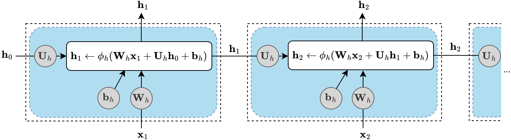
在每个时间步𝑡，当前输入嵌入𝐱ₜ和先前的隐藏状态𝐡ₜ₋₁通过将它们与可训练的权重矩阵𝐖ᵢₕ和𝐔ₕₕ相乘，加上偏置向量𝐛ₕ，并产生更新的隐藏状态𝐡ₜ来结合。与输出标量的MLP单元不同，RNN单元输出向量并充当整个层。初始隐藏状态𝐡₀通常是零向量。隐藏状态是一个记忆向量，它捕获序列中先前步骤的信息。在每个步骤使用当前输入和过去状态进行更新，它帮助神经网络使用早期单词的上下文来预测句子中的下一个单词。
为了加深网络，我们添加第二个RNN层。第一层的输出𝐡ₜ成为第二层的输入，第二层的输出是网络的最终输出：
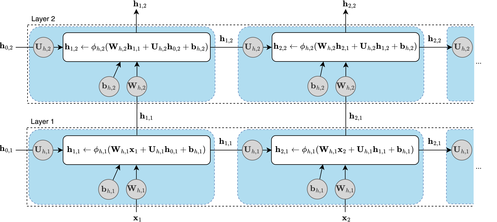
图3.1：两层Elman RNN。第一层的输出作为第二层的输入。
在编码RNN模型之前，我们需要讨论输入数据的形状。在第1.7节中，我们对每个梯度下降步骤使用整个数据集。在这里，以及对于训练所有未来的模型，我们将采用小批量梯度下降，这是大型模型和数据集的广泛使用方法。小批量梯度下降计算较小数据子集上的导数，这加快了学习速度并减少了内存使用。
使用小批量梯度下降，数据形状组织为(批次大小，序列长度，嵌入维度)。这种结构将训练集分成固定大小的小批量，每个小批量包含具有一致长度的嵌入序列。(从这一点开始，“批次”和”小批量”将可互换使用。)
例如，如果批次大小为2，序列长度为4，嵌入维度为3，小批量可以表示为：
batch = [seq₁,₁ seq₁,₂ seq₁,₃ seq₁,₄] [seq₂,₁ seq₂,₂ seq₂,₃ seq₂,₄]
这里，seqᵢ,ⱼ，对于𝑖 ∈ {1,2}和𝑗 ∈ {1, … ,4}是一个嵌入向量。
让我们为每个序列设置以下嵌入：
seq₁: [0.1,0.2,0.3] [0.4,0.5,0.6] [0.7,0.8,0.9] [1.0,1.1,1.2]
seq₂: [1.3,1.4,1.5] [1.6,1.7,1.8] [1.9,2.0,2.1] [2.2,2.3,2.4]
小批量将如下所示：
batch [0.1,0.2,0.3] [0.4,0.5,0.6] [0.7,0.8,0.9] [1.0,1.1,1.2] = RS [”] [1.3,1.4,1.5] [1.6,1.7,1.8] [1.9,2.0,2.1] [2.2,2.3,2.4]
在梯度下降的每一步中，我们：
Mini-batch梯度下降相比每步使用整个训练集通常能实现更快的收敛。它通过利用现代硬件的并行处理能力，高效地处理大型模型和数据集。在PyTorch中，模型要求输入数据的第一个维度是batch维度，即使batch中只有一个样本。
让我们实现一个Elman RNN单元：
import torch
import torch.nn as nn
class ElmanRNNUnit(nn.Module):
def __init__(self, emb_dim): super().__init__()
self.Uh = nn.Parameter(torch.randn(emb_dim, emb_dim)) ➊
self.Wh = nn.Parameter(torch.randn(emb_dim, emb_dim)) ➋
self.b = nn.Parameter(torch.zeros(emb_dim)) ➌
def forward(self, x, h):
return torch.tanh(x @** self.Wh +** h @** self.Uh +** self.b)
➍
在构造函数中：
• 第➊行和第➋行使用随机值初始化self.Uh和self.Wh，这是隐藏状态和输入向量的权重矩阵。
• 第➌行将偏置向量self.b设置为零。
在forward方法中，第➍行处理每个时间步的计算。它处理当前输入x和前一个隐藏状态h，两者的形状都是(batch_size, emb_dim)，将它们与权重矩阵和偏置结合，并应用tanh激活函数。输出是新的隐藏状态，形状也是(batch_size, emb_dim)。
@符号是PyTorch中的矩阵乘法运算符。我们使用x @ self.Wh而不是self.Wh @ x，这是因为PyTorch在矩阵乘法中处理batch维度的方式。当处理批量输入时，x的形状是(batch_size, emb_dim)，而self.Wh的形状是(emb_dim, emb_dim)。记住从第1.6节中学到的，两个矩阵要能相乘，左矩阵的列数必须等于右矩阵的行数。这在x @ self.Wh中得到了满足。
现在，让我们定义ElmanRNN类，它使用ElmanRNNUnit作为核心构建块实现一个两层Elman RNN：
class ElmanRNN(nn.Module):
def __init__(self, emb_dim, num_layers): super().__init__()
self.emb_dim = emb_dim
self.num_layers = num_layers
self.rnn_units = nn.ModuleList(
[ElmanRNNUnit(emb_dim) for _ in range(num_layers) ]
) ➊
def forward(self, x):
batch_size, seq_len, emb_dim = x.shape ➋
h_prev = [
torch.zeros(batch_size, emb_dim, device=x.device) ➌
for _ in range(self.num_layers)
]
outputs = []
for t in range(seq_len): ➍
input_t = x[:, t]
for l, rnn_unit in enumerate(self.rnn_units):
h_new = rnn_unit(input_t, h_prev[l])
h_prev[l] = h_new # 更新隐藏状态
input_t = h_new # 下一层的输入
outputs.append(input_t) # 收集输出
return torch.stack(outputs, dim=1) ➎
在构造函数的第➊行中，我们通过创建一个包含ElmanRNNUnit实例的ModuleList来初始化RNN层——每层一个实例。使用ModuleList而不是常规Python列表确保父模块(ElmanRNN)正确注册所有RNN单元参数。这保证了在父模块上调用.parameters()或.to(device)会包含ModuleList中所有模块的参数。
在forward方法中：
• 第➋行从输入张量x中提取batch_size、seq_len和emb_dim。
• 第➌行用零张量初始化所有层的隐藏状态h_prev。列表中每个隐藏状态的形状是(batch_size, emb_dim)。
我们将每层的隐藏状态存储在列表中而不是多维张量中，因为我们需要在处理过程中修改它们。张量的就地修改可能会破坏PyTorch的自动微分系统，这可能导致错误的梯度计算。
• 第➍行遍历输入序列中的时间步t。对于每个t： o 提取时间t的输入：input_t = x[:, t]。 o 对于每层l： § 从input_t和h_prev[l]计算新的隐藏状态h_new。 § 更新隐藏状态：h_prev[l] = h_new（就地更新）。 § 设置input_t = h_new以传递给下一层。 o 添加最后一层的输出：outputs.append(input_t)。
• 处理完所有时间步后，第➎行通过沿时间维度堆叠将outputs列表转换为张量。结果张量的形状是(batch_size, seq_len, emb_dim)。
基于RNN的语言模型使用ElmanRNN作为其构建块：
class RecurrentLanguageModel(nn.Module):
def __init__(self, vocab_size, emb_dim, num_layers, pad_idx):
super().__init__()
self.embedding = nn.Embedding(
vocab_size,
emb_dim,
padding_idx=pad_idx
) ➊
self.rnn = ElmanRNN(emb_dim, num_layers)
self.fc = nn.Linear(emb_dim, vocab_size)
def forward(self, x):
embeddings = self.embedding(x)
rnn_output = self.rnn(embeddings)
logits = self.fc(rnn_output)
return logits
RecurrentLanguageModel类集成了三个组件：嵌入层、前面定义的ElmanRNN和最终的线性层。
在构造函数中，第➊行定义了嵌入层。该层将输入token索引转换为密集向量。padding_idx参数确保填充token由零向量表示。（我们将在下一节中介绍嵌入层。）
接下来，我们初始化自定义的ElmanRNN，指定embedding维度和层数。最后，我们添加一个全连接层，将RNN的输出转换为序列中每个token的词汇表大小的logits。
在forward方法中：
• 我们将输入x通过embedding层。输入x的形状为
(batch_size, seq_len)，输出embeddings的形状为(batch_size, seq_len, emb_dim)。
• 然后我们将嵌入的输入通过ElmanRNN，获得
形状为(batch_size, seq_len, emb_dim)的rnn_output。
• 最后，我们将全连接层应用到RNN输出上，为序列中每个位置的词汇表中的每个token产生logits。输出logits的形状为(batch_size, seq_len, vocab_size)。
embedding层，在PyTorch中实现为nn.Embedding，将词汇表中的token索引映射到密集的固定大小向量。它充当可学习的查找表，其中每个token被分配一个唯一的embedding向量。在训练过程中，这些向量被调整以捕获token有意义的数值表示。
让我们看看embedding层是如何工作的。想象一个有五个token的词汇表，索引从0到4。我们希望每个token都有一个3D embedding向量。首先，我们创建一个embedding层：
import torch
import torch.nn as nn
vocab_size = 5 # 唯一token的数量 emb_dim = 3 # 每个embedding向量的大小 emb_layer = nn.Embedding(vocab_size, emb_dim)
embedding层用随机值初始化embedding矩阵E。在这种情况下，矩阵有5行（每个token一行）和3列（embedding维度）：
E = ⎢ 0.8 −0.5⎥ 0.7 0.1 −0.2 ⎢ ⎡ ⎤ −0.3 0.2 −0.4 0.1 ⎥
⎢−0.6 0.5 0.4⎥ ⎣ 0.9 −0.7 0.3⎦
E中的每一行代表词汇表中特定token的embedding向量。
现在，让我们输入一个token索引序列：
token_indices = torch.tensor([0, 2, 4])
embedding层检索E中对应输入索引的行：
0.2 −0.4 0.1
Embeddings = ¸ 0.7 0.1 −0.2¹
0.9 −0.7 0.3
这个输出是一个矩阵，其行数等于输入序列长度，列数等于embedding维度：
embeddings = embedding_layer(token_indices) print(embeddings)
输出可能看起来像这样：
tensor([[ 0.2, -0.4, 0.1],
[ 0.7, 0.1, -0.2],
[ 0.9, -0.7, 0.3]])
embedding层也可以管理padding token。Padding确保mini-batch中的序列具有相同长度。为了防止模型在训练期间更新padding token的embeddings，该层将它们映射到保持不变的零向量。例如，我们可以如下定义padding索引：
emb_layer = nn.Embedding(vocab_size, emb_dim, padding_idx=0)
通过这种配置，token 0（padding token）的embedding始终是[0,0,0][1]。
给定输入：
token_indices = torch.tensor([0, 2, 4]) embeddings = emb_layer(token_indices) print(embeddings)
结果将是：
tensor([[ 0.0, 0.0, 0.0], # Padding token
[ 0.7, 0.1, -0.2], # Token 2 embedding
[ 0.9, -0.7, 0.3]]) # Token 4 embedding
在现代语言模型中，词汇表通常包含数十万个token，embedding维度通常是数千。这使得embedding矩阵成为模型的重要组成部分，有时包含多达20亿个参数。
首先导入库并定义实用函数：
import torch, torch.nn as nn
def set_seed(seed):
random.seed(seed)
torch.manual_seed(seed)
torch.cuda.manual_seed_all(seed) ➊
torch.backends.cudnn.deterministic = True ➊
torch.backends.cudnn.benchmark = False ➌
set_seed函数通过设置Python随机种子、PyTorch CPU种子以及在第➊行设置所有GPU（图形处理单元）的CUDA种子来强制可重现性。CUDA是NVIDIA的并行计算平台和API，通过利用GPU的强大功能在计算中实现显著的性能改进。使用torch.cuda.manual_seed_all确保一致的基于GPU的随机行为，而第➋和➌行禁用CUDA的自动调谐器并强制使用确定性算法，保证在不同GPU模型上得到相同的结果。
模型类准备就绪后，我们将训练神经语言模型。首先，我们安装transformers包——一个开源库，提供API和工具来轻松下载、训练和使用Hugging Face Hub中的预训练模型：
$ pip3 install transformers
该包提供了一个用于训练的Python API，可与PyTorch和TensorFlow一起使用。现在，我们只需要它来获取tokenizer。
现在我们导入transformers，设置tokenizer，定义超参数值，准备数据，并实例化模型、损失函数和优化器对象：
from transformers import AutoTokenizer
device = torch.device("cuda" if torch.cuda.is_available() else "cpu") ➊
tokenizer = AutoTokenizer.from_pretrained(
"microsoft/Phi-3.5-mini-instruct"
) ➋
vocab_size = len(tokenizer) ➌
emb_dim, num_layers, batch_size, learning_rate, num_epochs = get_hyperparameters()
data_url = "https://www.thelmbook.com/data/news" train_loader, test_loader = download_and_prepare_data(
data_url, batch_size, tokenizer) ➍
model = RecurrentLanguageModel(
vocab_size, emb_dim, num_layers, tokenizer.pad_token_id )
initialize_weights(model) ➎ model.to(device)
criterion = nn.CrossEntropyLoss(ignore_index=tokenizer.pad_token_id) ➏
optimizer = torch.optim.AdamW(model.parameters(), lr=learning_rate)
第➊行检测CUDA设备（如果可用）。否则，默认使用CPU。
CUDA不是唯一可用于训练神经网络的GPU加速框架——PyTorch还提供对check的原生支持
ing availability of MPS (Apple Metal) through its is_available()
方法的可用性检查。不过在本书中，我们将使用CUDA，因为它仍然是机器学习加速最广泛使用的平台。
Hugging Face Hub上的大多数模型都包含用于训练它们的tokenizer。第➋行初始化Phi 3.5 mini tokenizer。它使用byte-pair encoding算法在大型文本语料库上进行训练，词汇表大小为32,064。
第➌行获取tokenizer的词汇表大小。第➍行下载并准备数据集——来自在线文章的新闻句子集合——对它们进行标记化并创建DataLoader对象。我们很快会探索DataLoader。现在，将它们视为批次上的迭代器。
第➎行初始化模型参数。初始参数值可以极大地影响训练过程。它们可以影响训练进展的速度和最终损失值。某些初始化技术，如Xavier初始化，在实践中显示出良好的结果。实现此方法的initialize_weights函数在notebook中定义。
第➏行使用ignore_index参数创建损失函数。这确保不会为填充标记计算损失。
现在，让我们看看训练循环：
for epoch in range(num_epochs): ➊
model.train() ➋
for batch in train_loader: ➌ input_seq, target_seq = batch input_seq = input_seq.to(device) ➍ target_seq = target_seq.to(device) ➎ batch_size_current, seq_len = input_seq.shape ➏ optimizer.zero_grad()
output = model(input_seq)
output = output.reshape(batch_size_current * seq_len, vocab_size) ➐
target = target_seq.reshape(batch_size_current * seq_len) ➑
loss = criterion(output, target) ➒
loss.backward()
optimizer.step()
第➊行遍历epochs。epoch是对整个数据集的一次完整遍历。多个epochs的训练可以改善模型，特别是在训练数据有限的情况下。epochs的数量是一个hyperparameter(超参数)，你可以根据模型在测试集上的性能来调整。
第➋行在每个epoch开始时调用model.train()，将模型设置为训练模式。这对于具有在训练与evaluation(评估)期间表现不同的层的模型很重要。
虽然我们的RNN模型不使用这样的层，但调用model.train()确保模型正确配置用于训练。这避免了意外行为并保持一致性，特别是如果未来的更改添加了依赖于模式的层。
第➌行遍历批次。每个批次是一个元组：一个张量包含输入序列，另一个包含目标序列。第➍行和第➎行将这些张量移动到与模型相同的设备上。如果模型和数据在不同的设备上，PyTorch会引发错误。
第➏行从input_seq获取批次大小和序列长度(target_seq具有相同的形状)。这些维度需要将模型的输出张量(batch_size_current, seq_len, vocab_size)和目标张量(batch_size_current, seq_len)重塑为与cross-entropy损失函数兼容的形状。在第➐行中，输出被重塑为(batch_size_current * seq_len, vocab_size)，在第➑行中，目标被展平为batch_size_current * seq_len，允许第➒行中的损失计算同时处理批次中的所有标记并返回每个标记的平均损失。
这就完成了训练循环的实现。完整的RNN语言模型训练实现在thelmbook.com/nb/3.1 notebook中。现在，让我们检查使这种批处理成为可能的DataLoader和Dataset类。
如前所述，download_and_prepare_data函数返回两个loader对象：train_loader和test_loader。我让你将它们视为数据批次上的迭代器。但它们到底是什么？
这些类被设计用来在训练期间高效地管理数据。虽然本书不专注于数据加载和操作，但简要说明对于清晰度很重要。
Dataset类作为实际数据源的接口。通过实现其__len__方法，你可以获得数据集的大小。通过定义__getitem__，你可以访问单个示例。这些示例可以来自许多”物理”源：文件、数据库，甚至是动态生成的数据。
让我们看一个例子。假设我们有一个名为data.jsonl的JSONL文件，其中每行都是一个包含两个输入特征和一个标签的JSON对象。以下是几行可能的样子：
{"feature1": 1.0, "feature2": 2.0, "label": 3.0} {"feature1": 4.0, "feature2": 5.0, "label": 9.0} [...]
以下是如何创建自定义Dataset来读取此文件：
import json
import torch
from torch.utils.data import Dataset
class JSONDataset(Dataset):
def __init__(self, file_path): self.data = []
with open(file_path, 'r') as f:
for line in f:
item = json.loads(line)
features = [item['feature1'], item['feature2' ]]
label = item['label']
self.data.append((features, label))
def __len__(self):
return len(self.data)
def __getitem__(self, idx): features, label = self.data[idx] features = torch.tensor(features, dtype=torch.float32
)
label = torch.tensor(label, dtype=torch.long)
return features, label
在这个例子中：
• __init__读取文件并将数据存储在内存中，
• __len__返回示例的总数，
• __getitem__检索单个示例并将其转换为张量。
我们可以这样访问单个示例：
dataset = JSONDataset('data.jsonl') features, label = dataset[0]
DataLoader 与 Dataset 配合使用来管理诸如批处理、洗牌和并行加载数据等任务。例如：
from torch.utils.data import DataLoader
dataset = JSONLDataset('data.jsonl') ➊
data_loader = DataLoader(
dataset,
batch_size=32, # 每批次样本数量
shuffle=True, # 每个epoch洗牌数据
num_workers=0 # 数据加载的子进程数量
) ➋
num_epochs = 5
for epoch in range(num_epochs):
for batch_features, batch_labels in data_loader: ➌
print(f"Batch features shape: {batch_features.shape}")
print(f"Batch labels shape: {batch_labels.shape}")
# 将batch_features和batch_labels输入到你的模型中第➊行创建了一个Dataset实例。第➋行然后将dataset包装在DataLoader中。最后，第➌行对DataLoader进行了五个epoch的迭代。通过设置shuffle=True，数据在每个epoch的批处理前都会被洗牌。这防止了模型学习训练数据的顺序。
通过num_workers=0，数据加载在主进程中进行。这种简单的设置可能不是最高效的，特别是对于大型数据集。为num_workers使用正值会让PyTorch生成相应数量的工作进程，实现并行数据加载。这可以通过防止数据加载成为瓶颈来显著加速训练。
输出：
Batch features shape: torch.Size([32, 2])
Batch labels shape: torch.Size([32])通过使用设计良好的Dataset和DataLoader，你可以扩展训练管道来处理大型数据集，使用并行工作器优化数据加载，并尝试不同的批处理策略。这种方法简化了训练过程，让你可以专注于模型设计和优化。
在研究神经语言模型时，理解训练样本的结构是一个关键方面。文本语料库被分割成重叠的输入和目标序列。每个输入序列与一个偏移一个token的目标序列对齐。这种设置训练模型预测序列中每个位置的下一个词。
例如，以句子“We train a recurrent neural network as a language model.”为例。使用Phi 3.5 mini分词器对其进行分词后，我们得到：
["_We", "_train", "_a", "_rec", "urrent", "_neural", "_network", "_as", "_a", "_language", "_model", "."]为了创建一个训练样本，我们通过将token向前偏移一个位置来将句子转换为输入和目标序列：
输入：["_We", "_train", "_a", "_rec", "urrent", "_neural", "_network", "_as", "_a", "_language", "_model"]
目标：["_train", "_a", "_rec", "urrent", "_neural", "_network", "_as", "_a", "_language", "_model", "."]
训练样本不需要是完整的句子。现代语言模型处理长度达到其上下文窗口(context window)长度的序列——它们一次能处理的最大token数（如8192）。窗口限制了模型在文本中连接关系的距离。训练将文本分割成窗口大小的块，每个目标序列比其输入偏移一个token。
在训练过程中，RNN一次处理一个token，逐层更新其隐藏状态。在每一步，它生成旨在预测序列中下一个token的logits。每个logit对应一个词汇表token，并使用softmax转换为概率。然后使用这些概率来计算损失。
每个训练样本产生多个预测和损失。例如，模型首先处理”_We”并通过为所有词汇表token分配概率来尝试预测”_train”。使用”_train”的概率计算损失，如公式2.1中定义的。接下来，模型处理”_train”来预测”_a”，产生另一个损失。这对输入序列中的每个token都会继续。对于上述示例，模型进行11次预测并计算11个损失。
损失在训练样本中的token和批次中的所有样本之间取平均。然后在反向传播中使用平均损失表达式来更新模型的参数。
让我们用一些虚构的数字来分解每个位置的损失计算：
• 位置1： - 目标token：“_train” - “_train”的logit：-0.5 - 对logits应用softmax后，假设”_train”的概率是0.1 - 根据公式2.1对总损失的贡献是-log(0.1) = 2.30
• 位置2： - 目标token：“_a” - “_a”的logit：3.2 - softmax后，“_a”的概率：0.05 - 损失贡献：-log(0.05) = 2.99
• 位置3： - “_rec”的概率：0.02 - 损失贡献：-log(0.02) = 3.91
• 位置4： - “urrent”的概率：0.34 - 损失贡献：-log(0.34) = 1.08
我们继续直到计算最终token（句号）的损失贡献：
• 位置11： - 目标token：“.” - “.”的logit：-1.2 - softmax后，“.”的概率：0.11 - 损失贡献：-log(0.11) = 2.21
最终损失通过取这些值的平均值来计算：
(2.30 + 2.99 + 3.91 + 1.08 + ⋯ + 2.21) / 11 = 2.11（假设值）
在训练过程中，目标是最小化这个损失。这涉及改进模型，使其为每个位置的正确目标token分配更高的概率。
训练基于RNN的语言模型的完整代码可以在thelmbook.com/nb/3.1找到。我使用了以下超参数值：emb_dim = 128, num_layers = 2, batch_size = 128, learning_rate = 0.001, 和 num_epochs = 1。
以下是在后期训练步骤中为提示“The President”生成的三个续写：
The President refused to comment on the best news in the five on BBC .
总统一直是一个”非常严重”和”不可接受”的。
总统办公室不是第一次能够带头。
当 Elman 在 1990 年引入 RNN 时，他的实验使用的序列平均长度为 3.92 个单词，受到当时硬件的限制。到 2014 年，计算能力的进步和改进的激活函数使得在数百个单词长的序列上训练 RNN 成为可能，将它们从学术想法转变为实用工具。
在训练开始时，我们的模型产生几乎随机的标记，但逐渐改进，达到 72.41 的困惑度——比基于计数模型的 299.06 要好，但远远落后于 GPT-2 的 20 和现代 LLM 的低于 5 的分数。
三个关键因素解释了这种性能差距：
该模型很小，只有 8,292,619 个参数，主要在嵌入层中。
我们使用的上下文大小相对较短——30 个标记。
Elman RNN 的隐藏状态逐渐”忘记”来自早期标记的信息。
长短期记忆（LSTM）网络改进了 RNN，但仍然在处理非常长的序列时遇到困难。Transformers 后来超越了这两种架构，通过更好地处理长上下文和改进的并行计算以支持更大的模型，在 2023 年成为自然语言处理的主导。
2024 年，随着 minLSTM 和 xLSTM 架构的发明，人们对 RNN 的兴趣重新点燃，这些架构实现了与基于 Transformer 的模型相当的性能。这种复苏反映了 AI 研究中的一个更广泛趋势：没有任何模型类型是永久过时的。研究人员经常重新审视和完善旧想法，使其适应现代挑战并利用当前的硬件能力。
至此，我们完成了对循环神经网络及其在语言建模中应用的研究。在本书的其余部分，我们将研究 transformer 神经网络以及基于它们的语言建模。我们将调查它们处理问答、文档分类和其他实际应用等任务的方法。
Transformer 模型极大地推进了 NLP。它们克服了 RNN 在管理长距离依赖关系方面的局限性，并支持输入序列的并行处理。有三种主要的 Transformer 架构：编码器-解码器，最初为机器翻译制定；仅编码器，通常用于分类；以及仅解码器，常见于聊天 LM 中。
在本章中，我们将详细探讨仅解码器 Transformer 架构，因为它是训练自回归语言模型最广泛使用的方法。
transformer 架构引入了两个关键创新：自注意力和位置编码。自注意力使模型能够评估每个单词在预测过程中与所有其他单词的关系，而位置编码捕获单词顺序和序列模式。与 RNN 不同，transformers 同时处理所有标记，使用位置编码在每个标记的并行处理中保持序列上下文。本章详细探讨了这些基本要素。
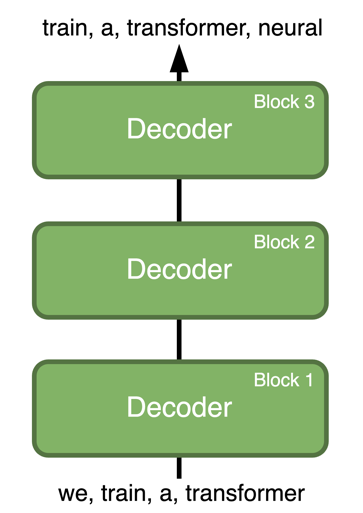
仅解码器 Transformer（从这里开始简称为”解码器”）由多个相同的层组成，称为解码器块，如右图所示垂直堆叠。
如您所见，训练解码器涉及将每个输入序列与向前移位一个标记的目标序列配对——这与用于基于 RNN 的语言模型的相同方法。
每个解码器块有两个子层：自注意力和逐位置多层感知器（MLP），如下所示：
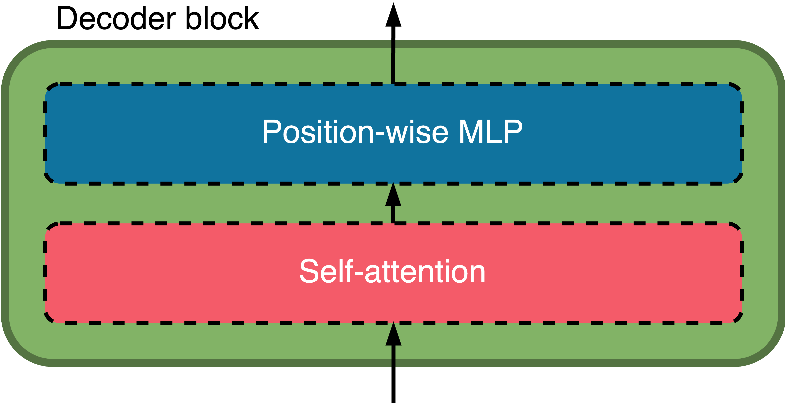
该图简化了某些方面，以避免一次引入太多新概念。我们将逐步介绍缺失的细节。
让我们仔细看看解码器块中发生的事情，从第一个开始：
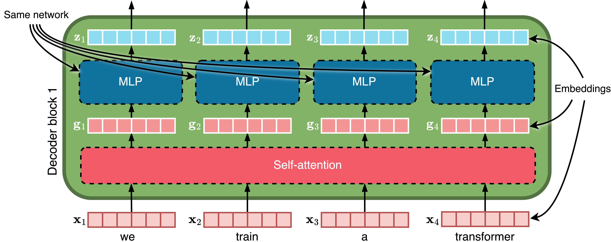
第一个解码器块处理输入标记嵌入。在这个例子中，我们使用 6 维输入和输出嵌入，尽管在实践中这些维度随着参数数量和标记词汇量的增长而变大。自注意力层将每个输入嵌入向量 𝐱 转换为新向量 𝐠，对于从 1 到 𝐋 的每个标记 𝑡，其中 𝐋 表示输入长度。
在这里，我们将每个单元简化为正方形，遵循我们在第 1.5 节中用于四单元网络的相同方法。虽然我们之前的章节显示神经网络中的信息从左到右流动，但我们现在转向自下而上的方向——这是文献中高级语言模型图表的标准约定。从现在开始我们将保持这种垂直方向。
在自注意力之后，逐位置 MLP 独立地逐个处理每个向量 𝐠。每个解码器块都有自己的具有独特参数的 MLP，在一个块内，这个相同的 MLP 独立地应用于每个位置的向量，以一个 𝐠 作为输入并产生一个 𝐳 作为输出。当 MLP 完成按顺序处理每个位置时，输出向量 𝐳 的数量等于输入标记 𝐱 的数量。
输出向量 𝐳 然后作为下一个解码器块的输入。这个过程在每个解码器块中重复，保持等于输入标记 𝐱 数量的输出向量数量。
要了解自注意力是如何工作的，让我们从直观的比较开始。将 𝐠 转换为 𝐳 很简单：逐位置 MLP 接受输入向量并通过应用学习的变换输出新向量。这就是前馈网络设计要做的。然而，自注意力可能看起来更复杂。
考虑一个5个token的例子：[“we,” “train,” “a,” “transformer,” “model”]，并假设一个最大输入序列长度为4的decoder。
在每个decoder块中，自注意力函数依赖于三个可训练参数张量：WQ、WK和W^V。这里，Q代表”query(查询)“，K代表”key(键)“，V代表”value(值)“。
假设这些张量都是6×6的。这意味着四个6维输入向量中的每一个都将被转换为四个6维输出向量。让我们使用第二个token，x₂，代表单词”train”，作为我们的说明性例子。为了计算x₂的输出g₂，自注意力层分6个步骤工作。
计算矩阵Q、K和V，如下所示：
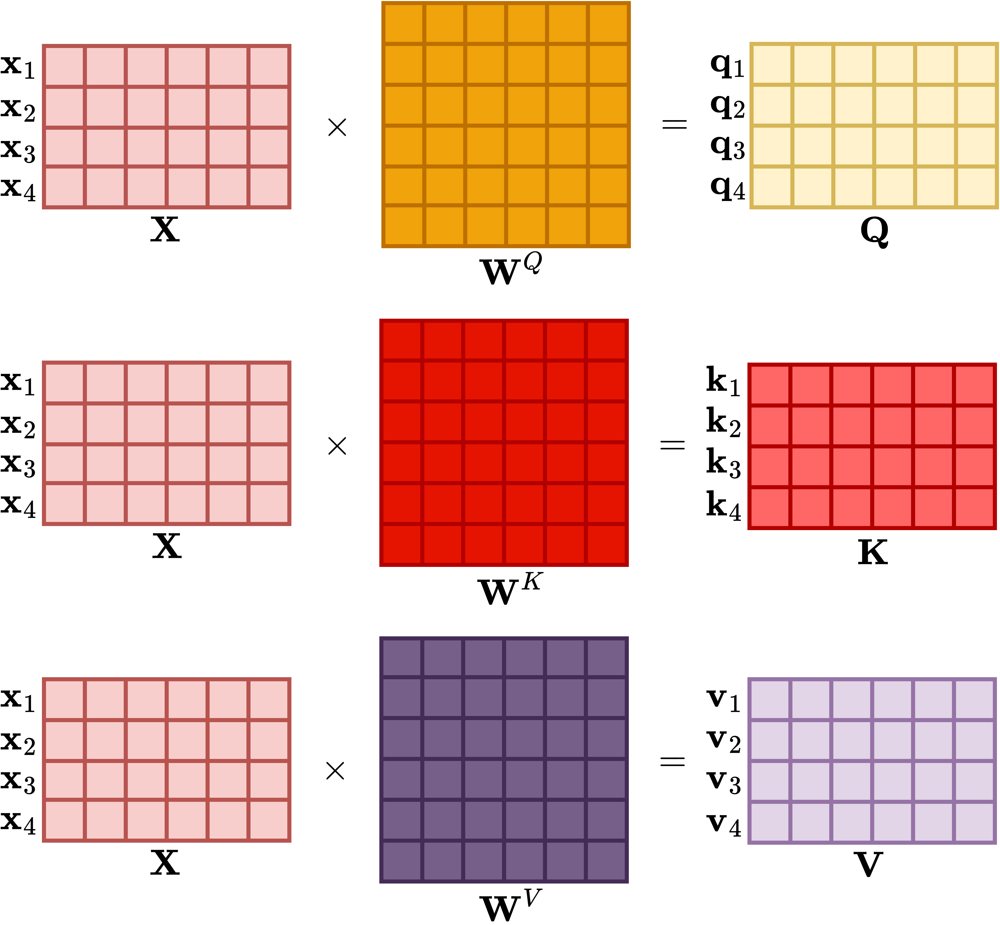
[图4.1：自注意力层中的矩阵乘法。]
在图示中，我们将四个输入嵌入x₁、x₂、x₃和x₄合并成一个矩阵X。然后，我们将X乘以权重矩阵WQ、WK和W^V来创建矩阵Q、K和V。这些矩阵分别保存6维的query、key和value向量。由于该过程生成的query、key和value向量数量与输入嵌入相同，每个输入嵌入xᵢ对应一个query向量qᵢ、一个key向量kᵢ和一个value向量vᵢ。
以第二个token x₂为例，我们通过计算其query向量q₂与每个key向量kᵢ的点积来计算注意力分数。假设得到的分数为：
q₂ · k₁ = 4.90, q₂ · k₂ = 17.15, q₂ · k₃ = 9.80, q₂ · k₄ = 12.25
向量格式：
scores₂ = [4.90,17.15,9.80,12.25]
为了获得缩放分数，我们将每个注意力分数除以key向量维度的平方根。在我们的例子中，由于key向量的维度是6，我们将所有分数除以√6 ≈ 2.45，得到：
scaled_scores₂ = [4.9/2.45, 17.15/2.45, 9.8/2.45, 12.25/2.45] = [2,7,4,5]
然后我们对缩放分数应用因果掩码。（如果使用因果掩码的原因还不清楚，很快就会详细解释。）对于第二个输入位置，因果掩码是：
causal_mask₂ = [0,0,-∞,-∞]
我们将缩放分数加到因果掩码上，得到掩码分数：
masked_scores₂ = scaled_scores₂ + causal_mask₂ = [2,7,-∞,-∞]
我们对掩码分数应用softmax函数来产生注意力权重：
attention_weights₂ = softmax([2,7,-∞,-∞])
由于-∞的分数在应用指数函数后变为零，第三和第四位置的注意力权重将为零。剩余的两个权重计算为：
attention_weights₂ = [e²/(e²+e⁷), e⁷/(e²+e⁷), 0,0] ≈ [0.0067,0.9933,0,0]
将注意力分数除以key维度的平方根有助于防止点积在维度增加时变得过大，这可能导致在应用softmax后梯度极小（由于非常大的负值或正值将softmax输出推向0或1）。
我们通过使用前一步的注意力权重对value向量v₁、v₂、v₃和v₄进行加权求和来计算输入嵌入x₂的输出向量g₂：
g₂ ≈ 0.0067 · v₁ + 0.9933 · v₂ + 0 · v₃ + 0 · v₄
如你所见，decoder在位置2的输出仅依赖于（或者我们可以说”仅关注于”）位置1和2的输入，其中位置2有更强的影响。这个效果来自于因果掩码，它限制模型在为给定位置生成输出时关注未来位置。这个属性对于保持语言模型的自回归性质至关重要，确保每个位置的预测仅依赖于之前和当前的输入，而不是未来的输入。
虽然在我们的例子中这个token主要关注自身，但注意力模式在不同上下文中有所不同。根据句子结构，一个token可能强烈关注提供相关语义或句法信息的其他token。
向量qᵢ、kᵢ和vᵢ可以这样解释：每个输入位置（token或嵌入）寻求关于其他位置的信息。例如，像”I”这样的token可能在另一个位置寻找名字，允许模型以类似的方式处理”I”和名字。为了实现这一点，每个位置t被分配一个query qₜ。
自注意力机制计算qₜ与所有位置p的每个key kₚ之间的点积。较大的点积表示向量之间更大的相似性。如果位置p的key kₚ与位置t的query qₜ密切对齐，那么位置p的value vₚ对最终结果的贡献更加显著。
注意力的概念在Transformer之前就出现了。2014年，Dzmitry Bahdanau在Yoshua Bengio指导下学习时，解决了机器翻译中的一个基本挑战：使RNN能够专注于句子的最相关部分。从他自己学习英语的经验中获得灵感——他在文本的不同部分之间移动注意力——Bahdanau为RNN开发了一种机制来”决定”在每个翻译步骤中哪些输入词最重要。这种机制被Bengio称为注意力(attention)，成为现代神经网络的基石。
用于计算g₂的过程对输入序列中的每个位置重复进行。
序列，产生一组输出向量：𝐠_[”]、𝐠_[!]、𝐠_[&] 和 𝐠_[T]。每个位置都有自己的因果掩码，所以在计算 𝐠_[”]、𝐠_[&] 和 𝐠_[T] 时，会为每个位置应用不同的因果掩码。所有位置的完整因果掩码如下所示：
0 −∞ −∞ −∞
𝐌_[def] = 0 0 −∞ −∞
0 0 0 −∞
0 0 0 0可以看到，第一个token只关注自己，第二个关注自己和第一个，第三个关注自己和前两个，最后一个关注自己和所有前面的token。
计算所有位置注意力的通用公式是：
𝐆 = attention(𝐐, 𝐊, 𝐕) = softmax(𝐐𝐊2/√𝑑_[:] + 𝐌_[def])𝐕
这里，𝐐 和 𝐕 是 𝐿 × 𝑑 的查询(query)和值(value)矩阵。𝐊3 是 𝑑 × 𝐋 的转置键(key)矩阵。𝑑_[:] 是键、查询和值向量的维度，𝐋 是序列长度。
虽然我们之前为 𝐱_[!] 显式计算了注意力分数，但矩阵乘法 𝐐𝐊4 一次性计算所有位置的分数。这种方法使过程更快。
这完成了自注意力(self-attention)的定义。
在掩码自注意力层之后，每个输出向量 𝐠_i 都由一个多层感知机(MLP)单独处理。MLP应用一系列附加变换：
𝐳_i = 𝐖_[2] ReLU(𝐖_[1] 𝐠_i + 𝐛_[1]) + 𝐛_[2]
这里，𝐖_[1]、𝐖_[2]、𝐛_[1] 和 𝐛_[2] 是学习到的参数。得到的向量 𝐳_i 然后要么传递给下一个解码器块，要么如果是最后一个解码器块，用来生成输出向量。
这个组件是一个位置级多层感知机，这就是我使用这个术语的原因。文献可能将其称为前馈网络、密集层或全连接层，但这些名称可能会产生误导。整个Transformer都是前馈神经网络。此外，密集或全连接层通常包含一个权重矩阵、一个偏置向量和一个输出非线性。然而，Transformer中的位置级MLP使用两个权重矩阵、两个偏置向量，并省略了输出非线性。
到目前为止描述的Transformer架构本身不考虑词汇顺序。因果掩码确保每个token不能关注其右侧的token，但重新排列左侧的token不会影响给定token的注意力权重。这与RNN不同，RNN的隐藏状态是顺序计算的，每个都依赖于前一个。在RNN中改变词汇顺序会改变隐藏状态，从而改变输出。相比之下，Transformer一次计算所有token的注意力，没有顺序依赖性。
为了处理词汇顺序，Transformer需要融入位置信息。一种广泛使用的方法是旋转位置编码(RoPE)，它对注意力机制中的查询和键向量应用位置相关的旋转。RoPE的一个关键优势是它能够有效地泛化到比训练时看到的序列更长的序列。这允许模型在较短的序列上训练——节省时间和计算资源——同时在推理时仍支持更长的上下文。
RoPE通过旋转查询和键向量来编码位置信息。这种旋转发生在注意力计算之前。下一页的插图显示了它在2D中的工作原理。标记为”Original”的黑色箭头显示了自注意力中无位置的键或查询向量。RoPE通过根据token的位置旋转这个向量来嵌入位置信息。彩色箭头显示了位置1、3、5和7的旋转向量结果。
RoPE的一个关键属性是任意两个旋转向量之间的角度编码了它们在序列中位置之间的距离。例如，位置1和3之间的角度与位置5和7之间的角度相同，因为两对都相距两个位置。
那么，我们如何旋转向量？我们使用矩阵乘法！旋转矩阵在计算机图形学等领域广泛用于旋转3D场景——这是GPU的原始用途之一(GPU中的”G”代表图形)，之后才应用于神经网络训练。
在二维中，角度 𝜃 的旋转矩阵是：
𝐑_[θ] = [cos(𝜃) -sin(𝜃)] [sin(𝜃) cos(𝜃)]
让我们旋转二维向量 𝐪 = [2,1]。为此，我们将 𝐪 乘以旋转矩阵 𝐑_[θ]。结果是一个新向量，表示 𝐪 逆时针旋转角度 𝜃。
对于45°旋转(𝜃 = 𝜋/4弧度)，我们可以使用特殊值 cos(𝜃) = sin(𝜃) = √2/2。这给我们旋转矩阵：
𝐑_[45°] = [√2/2 -√2/2] [√2/2 √2/2]
为了找到旋转向量，我们将 𝐑_[45°] 乘以 𝐪：
逐步计算这个乘法：
𝐪_[rotated] = 𝐑_[45°] · 𝐪 = [√2/2 -√2/2] [2] [√2/2 √2/2] [1]
= [√2/2 · 2 - √2/2 · 1] = [(2-1) · √2/2] = [√2/2] [√2/2 · 2 + √2/2 · 1] [(2+1) · √2/2] [3√2/2]
下图说明了 𝐪 和它在 𝜃 = 45° 时的旋转版本：
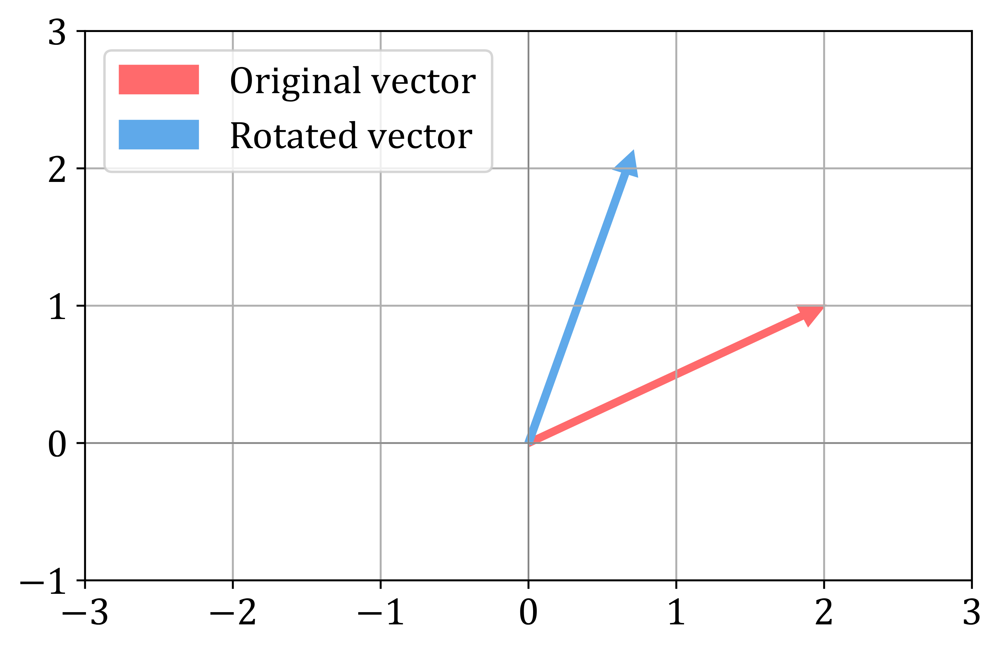
对于位置 𝑡，RoPE旋转查询和键向量中定义的每对维度：
𝐪_[t] = [𝑞_[t,1], 𝑞_[t,2], …, 𝑞_[t,d_q-1], 𝑞_[t,d_q]]
𝐤_[t] = [𝑘_[t,1], 𝑘_[t,2], …, 𝑘_[t,d_k-1], 𝑘_[t,d_k]]
这里，𝑑_[q] 和 𝑑_k 是查询和键向量的(偶数)维度。
RoPE旋转索引为(2𝑝-1, 2𝑝)的维度对，其中每对的索引 𝑝 从1到 𝑑_[q]/2。
为了将 𝐪 的维度分割成 𝑑/2 对，我们这样分组：
𝑞₁, 𝑞₂, 𝑞₃, 𝑞₄, …, 𝑞_{d-1}, 𝑞_d
当我们写 𝐪^{(p)} 时，它代表对 {𝑞_{2p-1}, 𝑞_{2p}}。例如，𝐪^{(3)} 对应于：
{𝑞₅, 𝑞₆} = {𝑞_{2·3-1}, 𝑞_{2·3}}
每对 𝑝 基于token位置 𝑡 和旋转频率 𝜃 进行旋转：
RoPE(𝐪^{(p)}) = [cos(𝜃_{[p]} 𝑡) -sin(𝜃_{[p]} 𝑡)] [𝑞_{2p-1}] [sin(𝜃_{[p]} 𝑡) cos(𝜃_{[p]} 𝑡)] [𝑞_{2p} ]
应用矩阵-向量乘法规则，旋转结果为以下2D向量：
RoPE(𝐪^{(p)}) = {𝑞_{2p-1} cos(𝜃_{[p]} 𝑡) − 𝑞_{2p} sin(𝜃_{[p]} 𝑡), 𝑞_{2p-1} sin(𝜃_{[p]} 𝑡) + 𝑞_{2p} cos(𝜃_{[p]} 𝑡)}
其中 𝜃_{[p]} 是第 𝑝 对的旋转频率。它定义为：
𝜃_{[p]} = 𝛩^{-2(p-1)/d}
这里，𝛩 是一个常数。最初设置为10,000，后来的实验表明，更高的 𝛩 值——如500,000（用于Llama 2和3系列模型）或1,000,000（用于Qwen 2和2.5系列）——能够支持更大的上下文大小（数十万token）。
完整的旋转嵌入RoPE(𝐪)通过连接所有旋转对构建：
RoPE(𝐪) = concat{RoPE(𝐪^{(1)}), RoPE(𝐪^{(2)}), …, RoPE(𝐪^{(d/2)})}
注意旋转频率 𝜃_{[p]} 由于分母中的指数项而对每个后续对快速递减。这使得RoPE能够在早期维度（旋转更频繁）捕获细粒度的局部位置信息，在后期维度（旋转放缓）捕获粗粒度的全局位置信息。这种组合创建了更丰富的位置编码，使模型能够比在所有维度使用单一旋转频率更有效地区分sequence中的token位置。
为了说明这个过程，考虑位置 𝑡 处的6维查询向量和 𝛩 = 10,000：
𝐪^{(t)} = {𝑞₁, 𝑞₂, 𝑞₃, 𝑞₄, 𝑞₅, 𝑞₆} = [0.8,0.6,0.7,0.3,0.5,0.4]
首先，我们将其分成三对（𝑑/2 = 3）：
𝐪^{(1)} = {𝑞₁, 𝑞₂} = [0.8,0.6] 𝐪^{(2)} = {𝑞₃, 𝑞₄} = [0.7,0.3] 𝐪^{(3)} = {𝑞₅, 𝑞₆} = [0.5,0.4]
每对 𝑝 按角度 𝜃_{p} 𝑡 旋转，其中：
𝜃_{[p]} = 10000^{-2(p-1)/d}
设位置 𝑡 为100。首先，我们计算每对的旋转角度（以弧度为单位）：
𝜃₁ = 10000^{-2(1-1)/6} = 10000^0 = 1.0000，因此：𝜃₁ 𝑡 = 100.00
𝜃₂ = 10000^{-2(2-1)/6} = 10000^{-1/3} ≈ 0.0464，因此：𝜃₂ 𝑡 = 4.64
𝜃₃ = 10000^{-2(3-1)/6} = 10000^{-2/3} ≈ 0.0022，因此：𝜃₃ 𝑡 = 0.22
旋转对1是：
RoPE(𝐪^{(1)}) = [cos(100) -sin(100)] [0.8] ≈ [ 0.86 0.51] [0.8] [sin(100) cos(100)] [0.6] [-0.51 0.86] [0.6] = [0.99,0.11]
旋转对2是：
RoPE(𝐪^{(2)}) = [cos(4.64) -sin(4.64)] [0.7] ≈ [-0.07 -1.00] [0.7] [sin(4.64) cos(4.64)] [0.3] [-1.00 -0.07] [0.3] = [0.25, -0.72]
旋转对3是：
RoPE(𝐪^{(3)}) = [cos(0.22) -sin(0.22)] [0.5] ≈ [0.98 -0.21] [0.5] [sin(0.22) cos(0.22)] [0.4] [0.21 0.98] [0.4] = [0.40,0.50]
以下是绘制时原始对和旋转对的外观：
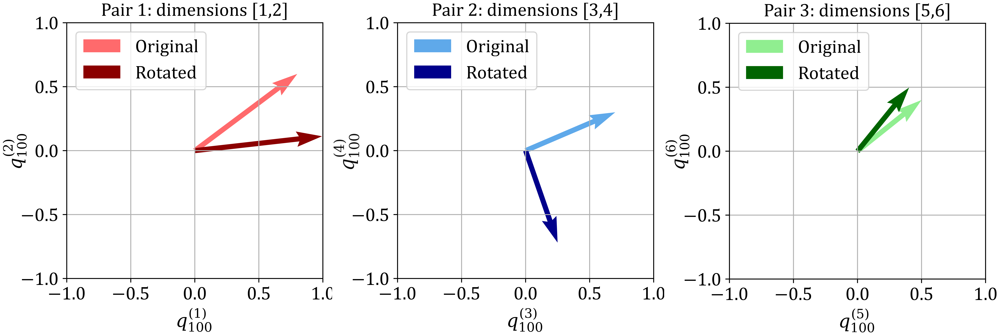
最终的RoPE编码向量是这些对的连接：
RoPE(𝐪^{(t)}) ≈ [0.99,0.11,0.25, -0.72,0.40,0.50]
RoPE(𝐤)的数学运算与RoPE(𝐪)相同。在每个decoder block中，RoPE应用于self-attention机制内查询(𝐐)和键(𝐊)矩阵的每一行。
值向量只提供在注意力权重确定后被选择和组合的信息。由于位置关系已经在查询-键对齐中捕获，值向量不需要自己的旋转嵌入。换句话说，值向量在位置感知的注意力识别出要查看的位置后，只是”传递”内容。
回想一下，𝐐和𝐊是通过将decoder block输入乘以权重矩阵𝐖Q和𝐖K生成的，如图4.1所示。RoPE在获得𝐐和𝐊后立即应用，在计算注意力分数之前。
RoPE应用于所有decoder block，确保位置信息在整个网络深度中一致流动。下面的插图显示了它在两个连续decoder block中的实现。
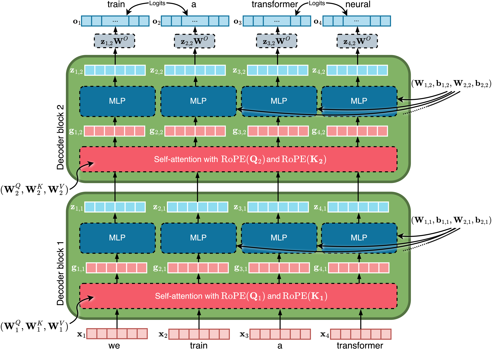
在这个图中，第二个decoder block的输出用于计算每个位置的logits。这是通过将最终decoder block的输出乘以形状为(嵌入维度，词汇表大小)的矩阵来实现的，该矩阵在所有位置之间共享。当我们在Python中实现decoder模型时，我们将更详细地探索这一部分。
我们描述的self-attention机制本身就能工作。然而，transformer通常采用一种称为multi-head attention的增强版本。这允许模型同时关注信息的多个方面。例如，一个attention head可能捕获句法关系，另一个可能强调语义相似性，第三个可以检测token之间的长距离依赖关系。
一旦你理解了self-attention，理解multi-head attention就相对简单了。对于每个head ℎ，从1到𝐻，都有一个单独的注意力矩阵三元组：
{𝐖_h^Q, 𝐖_h^K, 𝐖_h^V}_{h∈1,…,H}
每个三元组应用于输入向量 x1, …, xT，产生 H 个矩阵 G[h]。对于每个头，这产生四个向量 g1[h], …, gT[h]，如图4.2所示的三个头（H = 3）。如你所见，多头自注意力机制通过多个自注意力”头”处理输入序列。例如，使用3个头时，每个头独立计算输入token的自注意力分数。RoPE在每个头中分别应用。
所有输入token x1, …, xT 都由所有三个头处理，产生输出矩阵 G[1]、G[2] 和 G[3]。每个矩阵 G[h] 的行数与输入token数量相同，意味着每个头为每个token生成一个嵌入。每个 G[h] 的嵌入维度减少到总嵌入维度的三分之一。因此，与原始嵌入大小相比，每个头输出更低维度的嵌入。
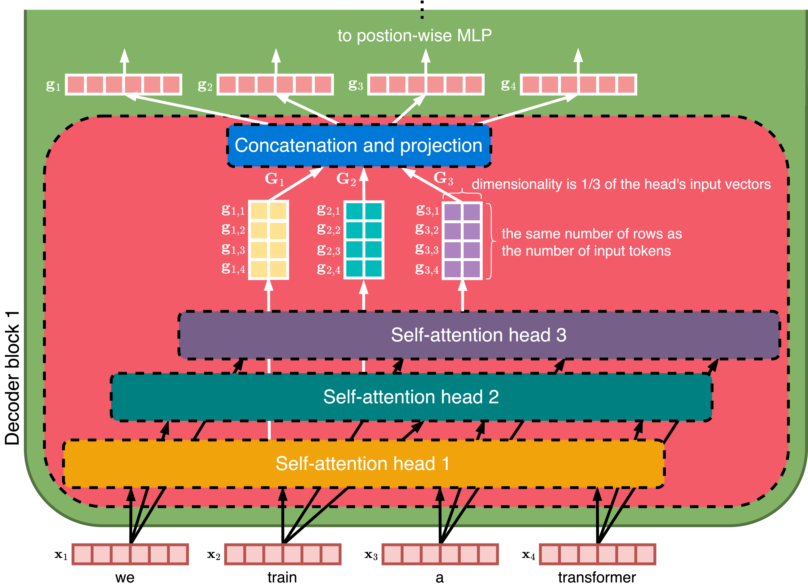
[图4.2：3头自注意力。]
三个头的输出在拼接和投影层中沿着嵌入维度拼接，创建一个整合所有头信息的单一矩阵。然后该矩阵由投影矩阵 W[out] 变换，得到最终的输出矩阵 G。这个输出传递给位置级MLP：
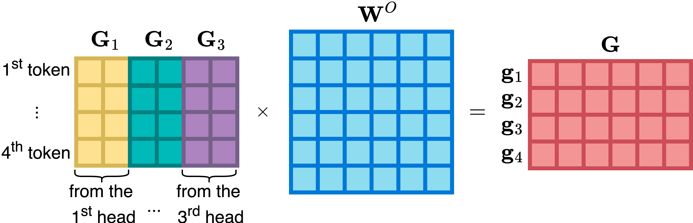
拼接矩阵 G[1]、G[2] 和 G[3] 还原了原始嵌入维度（例如，本例中为6）。然而，应用可训练参数矩阵 W[out] 使模型能够比单纯拼接更有效地组合各头的信息。
现代大语言模型通常使用多达128个头。
此时，读者已经在高层次上理解了Transformer模型架构。还有两个关键技术细节需要探讨：层归一化和残差连接，这两个都是使Transformer有效工作的重要组件。让我们从残差连接开始。
残差连接（或跳跃连接）是Transformer架构的重要组成部分。它们解决了深度神经网络中的梯度消失问题，使得能够训练更深的模型。
包含两层以上的网络被称为深度神经网络。训练它们被称为深度学习。在ReLU和残差连接之前，梯度消失问题严重限制了网络深度。记住在梯度下降过程中，偏导数通过在梯度相反方向上迈小步来更新所有参数。在更深的网络中，这些更新在早期层（更接近输入的层）中变得非常小，实际上停止了参数调整。残差连接通过创建梯度”绕过”某些层的路径来强化这些更新，因此称为跳跃连接。
为了更好地理解梯度消失问题，让我们分析一个表示为复合函数的3层神经网络：
f(x) = f3(f2(f1(x)))，
其中 f1 表示第一层，f2 表示第二层，f3 表示第三层（输出层）。让这些函数定义如下：
z = f1(x) = w1x + b1
r = f2(z) = w2z + b2
y = f3(r) = w3r + b3
这里，wl 和 bl 是每层 l ∈ {1, 2, 3} 的标量权重和偏置。
让我们将损失函数 L 定义为网络输出 f(x) 和真实标签 y 的函数 L(f(x), y)。损失 L 相对于 w1 的梯度，记为 $\frac{\partial L}{\partial w_1}$，由以下给出：
$\frac{\partial L}{\partial w_1} = \frac{\partial L}{\partial f} \cdot \frac{\partial f}{\partial w_1} = \frac{\partial L}{\partial f_3} \cdot \frac{\partial f_3}{\partial f_2} \cdot \frac{\partial f_2}{\partial f_1} \cdot \frac{\partial f_1}{\partial w_1}$，
其中：
因此，我们可以写成： $\frac{\partial f_3}{\partial f_2} = w_3$, $\frac{\partial f_2}{\partial f_1} = w_2$, $\frac{\partial f_1}{\partial w_1} = x$
$\frac{\partial L}{\partial w_1} = \frac{\partial L}{\partial f_3} \cdot w_3 \cdot w_2 \cdot x$
当像 w2 和 w3 这样的权重很小（小于1）时，就会发生梯度消失问题。当它们相乘时，产生更小的值，导致早期权重如 w1 的梯度接近零。这个问题在有很多层的网络中变得特别严重。
以大语言模型为例。这些网络通常包含32个或更多的解码器块。为简化，假设所有块都是全连接层。如果平均权重值约为0.5，输入层参数的梯度变为 0.532 ≈ 0.0000000002。这极其小。乘以学习率后，早期层的更新变得微不足道。因此，网络停止有效学习。
残差连接通过在梯度计算路径中创建捷径，为梯度消失问题提供了解决方案。基本思想很简单：不是只将层的输出传递给下一层，而是将层的输入添加到其输出中。数学上，这写作：
y = f(x) + x，
其中 x 是输入，f(x) 是层的计算函数，y 是输出。这个加法形成残差连接。图形上，它显示在右边的图片中。在这个图示中，输入 x 既通过层处理（表示为 f(x)），又直接添加到层的输出中。现在让我们将残差连接引入我们的3层网络。我们将看到这如何改变梯度计算并缓解梯度消失问题。
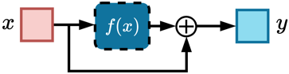
从原始网络 f(x) = f3(f2(f1(x))) 开始，让我们为第2层和第3层添加残差连接：
z ← f1(x) = w1x + b1
r ← f2(z) = w2z + b2 + z
y ← f3(r) = w3r + b3 + r
我们的复合函数变成：
f(x) = w3[w2(w1x + b1) + b2 + w1x + b1] + b3 + w2(w1x + b1) + b2 + w1x + b1
现在，让我们计算损失 L 相对于 w1 的梯度：
$\frac{\partial L}{\partial w_1} = \frac{\partial L}{\partial f} \cdot \frac{\partial f}{\partial w_1}$
∂𝑤 ∂𝑓 ∂𝑤 ["]
展开 [)-]:
[)'] [!]
∂𝑤 ∂𝑓 ∂ C𝑤 C𝑤 (𝑤 𝑥 + 𝑏 ) + 𝑏 + (𝑤 𝑥 + 𝑏 )D + 𝑏 D + [&] [!] ["] ["] [!] ["] ["] [&] = ÐÑ ∂𝑤 ["] ["] C𝑤 (𝑤 𝑥 + 𝑏 ) + 𝑏 + (𝑤 𝑥 + 𝑏 [!] ["] ["] [!] ["] ["] )D
= (𝑤 𝑤 + 𝑤 + 𝑤 + 1) ⋅ 𝑥 [&] [!] [&] [!]
因此，完整的梯度为：
∂𝑤 = ⋅ (𝑤 𝑤 + 𝑤 + 𝑤 + 1) ⋅ 𝑥 [&] [!] [&] [!] ∂𝑓 ∂𝐿 ∂𝐿
["]
将此与我们原始没有残差连接的梯度进行比较：
∂𝑤 = ⋅ 𝑤 ⋅ 𝑤 ⋅ 𝑥 [&] [!] ∂𝑓 ∂𝐿 ∂𝐿
["]
我们观察到残差连接引入了三个额外项：𝑤 、𝑤 和 1。这保证了即使当 𝑤 和 𝑤 很小时，梯度也不会完全消失，这是由于添加了常数项 1。[&] [!] [!] [&]
例如，如果 𝑤 = 𝑤 = 0.5 如之前的情况：[!] [&]
• 没有残差连接：0.5 ⋅ 0.5 = 0.25
• 有残差连接：0.5 ⋅ 0.5 + 0.5 + 0.5 + 1 = 2.25
下面的图示描绘了带有残差连接的编码块：
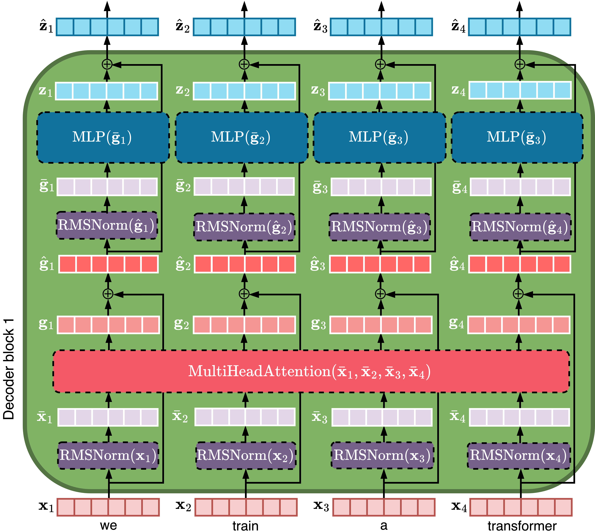
如图所示，每个解码器块包含两个残差连接。层现在像Python对象一样命名，我们很快就会实现它们。此外，还添加了两个RMSNorm层。让我们讨论它们的目的。
RMSNorm层对输入向量应用均方根归一化。此操作在向量进入self-attention层和位置MLP之前进行。让我们用一个三维向量来说明这一点。
假设我们有一个向量 [(")] [(!)] [(&)] [1] 𝐱 = [𝑥 , 𝑥 , 𝑥 ]。要应用RMS归一化，我们首先计算向量的均方根（RMS）：
1 [&] 1
RMS [($)] [(!)] [(&)] (𝐱) = ^ [!] [(")] [!] [!] [!] U(𝑥 ) = ß [(𝑥 ) + (𝑥 ) + (𝑥 )]
3 3
[$%"]
然后，我们通过将每个分量除以RMS值来归一化向量，得到 𝐱9：
𝐱9 = 𝐱 [(")] [1] [(!)] [(&)] 𝑥 𝑥 𝑥 = Ð , , Ñ RMS (𝐱) RMS (𝐱) RMS (𝐱) RMS (𝐱)
最后，我们对 𝐱9 的每个维度应用缩放因子 𝛾：
𝐱‾ = [def] [1] [(")] [(")] [(!)] [(!)] [(&)] [(&)] RMSNorm (𝐱) = 𝛄 ⊙ 𝐱9 = J𝛾 𝑥9 , 𝛾 𝑥9 , 𝛾 𝑥9 K,
其中 ⊙ 表示逐元素乘积。向量 𝛄 是一个可训练参数，每个RMSNorm层都有自己独立的 𝛄。
RMSNorm的主要目的是通过保持每层输入的尺度一致来稳定训练。这提高了数值稳定性，有助于防止过大或过小的梯度更新。
现在我们已经介绍了Transformer架构的关键组件，让我们总结一下解码器块如何处理其输入：
输入嵌入 𝐱 首先经过RMS归一化。E
归一化的嵌入 𝐱‾ 由多头self-attention机制处理，对键和查询向量应用RoPE。E
这个和 𝐠e 再次经过RMS归一化。E
归一化的和 𝐠‾ 通过多层感知器。E
结果 𝐳e 是解码器块的输出，作为下一个块的输入（或者如果是最后一个块，则作为最终输出层的输入）。E
这个序列对Transformer中的每个解码器块重复进行。
在训练期间，解码器可以并行处理所有位置，因为在每个块中它计算整个序列 𝐗 的查询、键和值矩阵，[X] 𝐐 = 𝐗𝐖、𝐊 = 𝐗𝐖 [Y] [Z] 和 𝐕 = 𝐗𝐖。然而，在自回归（从左到右）推理期间，token必须逐个生成。通常，每次我们生成一个新token时，我们都必须：
计算新token的键、查询和值向量。
重新计算所有先前token的键和值矩阵。
将这些与新token的键和值向量合并，以计算新token的self-attention。
键值缓存通过保存早期token的键和值矩阵来跳过步骤2，避免重复计算。由于 [Y] [Z] 𝐖 和 𝐖 在训练后是固定的，早期token的键和值向量在推理期间保持不变。这些向量可以在计算一次后被存储（“缓存”）。对于每个新token：
• 使用 𝐖 [Y] [Z] 和 𝐖 计算其键和值向量。
• 这些向量被附加到缓存的键值对中用于self-attention。
然而，查询向量不被缓存，因为它们依赖于正在处理的当前token。每次添加新token时，必须即时计算其查询向量以关注所有缓存的键和值。
这种方法消除了重新处理序列其余部分的需要，显著减少了长序列的计算量。在每个解码器块中，缓存的键和值按注意力头存储，形状为 (𝐿 × 𝑑 )，其中 𝐿 随每个新token增加一，𝑑 是该头的查询、键和值向量的维度。对于具有 𝐻 个注意力头的模型，每个解码器块中的组合键和值缓存形状为 (𝐻 × 𝐿 × 𝑑 )。[W] [W]
RoPE对向量应用位置相关的旋转，但这不会干扰缓存。当新token到达时，它只是取下一个可用的位置索引（如果序列有 𝐿 个token，新的就变成位置 𝐿 + 1），而之前处理的token保持其从1到 𝐿 的原始位置。这意味着缓存的键和值，已经根据各自的位置旋转，保持不变。旋转只应用于位置 𝐿 + 1 的新token。
现在我们了解了Transformer的工作原理，我们准备开始编码。
让我们开始通过定义AttentionHead类在Python中实现解码器：
class AttentionHead(nn.Module):
def __init__(self, emb_dim, d_h): super().__init__()
self.W_Q = nn.Parameter(torch.empty(emb_dim, d_h))
self.W_K = nn.Parameter(torch.empty(emb_dim, d_h))
self.W_V = nn.Parameter(torch.empty(emb_dim, d_h))
self.d_h = d_h
def forward(self, x, mask): Q = x **@** self.W_Q ➊
K = x **@** self.W_K
V = x **@** self.W_V ➋
Q, K = rope(Q), rope(K) ➌
scores = Q @** K.transpose(-2, -1) /** math.sqrt(self.d_h ) ➍
masked_scores = scores.masked_fill(mask == 0, float("-inf")) ➎
attention_weights = torch.softmax(masked_scores, dim=-1) ➏
return attention_weights **@** V ➐
这个类实现了多头注意力机制中的单个注意力头。在构造函数中，我们初始化三个可训练的权重矩阵：查询矩阵W_Q、键矩阵W_K和值矩阵W_V。每个矩阵都是形状为(emb_dim, d_h)的Parameter张量，其中emb_dim是输入嵌入维度，d_h是此注意力头的查询、键和值向量的维度。
在forward方法中：
• 第➊和➋行通过将输入向量x与相应的权重矩阵相乘来计算查询、键和值矩阵。给定x的形状为(batch_size, seq_len, emb_dim)，Q、K和V的形状都是(batch_size, seq_len, d_h)。
• 第➌行将旋转位置编码应用于Q和K。在查询和键向量被旋转后，第➍行计算注意力分数。详细分解如下：
o K.transpose(-2, -1)交换K的最后两个维度。如果K的形状是(batch_size, seq_len, d_h)，转置后的结果是(batch_size, d_h, seq_len)。这为K与Q的矩阵乘法做准备。
o Q @ K.transpose(-2, -1)执行批量矩阵乘法，产生形状为(batch_size, seq_len, seq_len)的注意力分数张量。
o 如第4.2节所述，我们除以sqrt(d_h)以保证数值稳定性。
当矩阵乘法运算符@应用于超过两个维度的张量时，PyTorch使用广播(broadcasting)。这种技术处理与@运算符不直接兼容的维度，该运算符通常只为二维张量（矩阵）定义。在这种情况下，PyTorch将第一个维度视为批次维度，为批次中的每个样本分别执行矩阵乘法。这个过程被称为批量矩阵乘法。
• 第➎行应用因果掩码。掩码张量的形状为(seq_len, seq_len)，包含0和1。masked_fill函数将输入矩阵中mask == 0的所有单元格替换为负无穷大。这防止了对未来token的注意力。由于掩码缺少批次维度而scores包含批次维度，PyTorch使用广播将掩码应用于批次中每个序列的分数。
• 第➏行沿最后一个维度对分数应用softmax，将它们转换为注意力权重。然后，第➐行通过将这些注意力权重与V相乘来计算输出。结果输出的形状为(batch_size, seq_len, d_h)。
有了注意力头类，我们现在可以定义MultiHeadAttention类：
class MultiHeadAttention(nn.Module):
def __init__(self, emb_dim, num_heads): super().__init__()
d_h = emb_dim // num_heads ➊
self.heads = nn.ModuleList([
AttentionHead(emb_dim, d_h)
for _ in range(num_heads)
]) ➋
self.W_O = nn.Parameter(torch.empty(emb_dim, emb_dim) ) ➌
def forward(self, x, mask): head_outputs = [head(x, mask) for head in self.heads]
➍
x = torch.cat(head_outputs, dim=-1) ➎
return x **@** self.W_O ➏
在构造函数中：
• 第➊行计算d_h，即每个注意力头的维度，通过将模型的嵌入维度emb_dim除以头数来计算。
• 第➋行创建包含num_heads个AttentionHead实例的ModuleList。每个头接受输入维度emb_dim并输出大小为d_h的向量。
• 第➌行初始化W_O，这是一个形状为(emb_dim, emb_dim)的可学习投影矩阵，用于组合所有注意力头的输出。
在forward方法中：
• 第➍行将每个注意力头应用于形状为(batch_size, seq_len, emb_dim)的输入x。每个头的输出形状为(batch_size, seq_len, d_h)。
• 第➎行沿最后一个维度连接所有头的输出。结果x的形状为(batch_size, seq_len, emb_dim)，因为num_heads * d_h = emb_dim。
• 第➏行将连接的输出与投影矩阵W_O相乘。输出与输入具有相同的形状。
现在我们有了多头注意力，解码器块所需的最后一个组件是位置感知多层感知机。让我们定义它：
class MLP(nn.Module):
def __init__(self, emb_dim): super().__init__()
self.W_1 = nn.Parameter(torch.empty(emb_dim, emb_dim * 4))
self.B_1 = nn.Parameter(torch.empty(emb_dim * 4))
self.W_2 = nn.Parameter(torch.empty(emb_dim * 4, emb_ dim))
self.B_2 = nn.Parameter(torch.empty(emb_dim))
def forward(self, x):
x = x @** self.W_1 +** self.B_1 ➊
x = torch.relu(x) ➋
x = x @** self.W_2 +** self.B_2 ➌
return x
在构造函数中，我们初始化可学习的权重和偏置。
在forward方法中：
• 第➊行将输入x与权重矩阵W_1相乘并加上偏置向量B_1。输入的形状为(batch_size, seq_len, emb_dim)，所以结果的形状为(batch_size, seq_len, emb_dim * 4)。
• 第➋行逐元素应用ReLU激活函数，增加非线性。
• 第➌行将结果与第二个权重矩阵W_2相乘并加上偏置向量B_2，将维度减少回(batch_size, seq_len, emb_dim)。
第一个线性变换扩展到嵌入维度的4倍（emb_dim * 4），为网络提供更大的容量来学习变量之间复杂的模式和关系。4倍因子平衡了表达能力和效率。在扩展维度后，它被压缩回原始嵌入维度（emb_dim）。这确保了与残差连接的兼容性，残差连接需要匹配的维度。实验结果支持这种展开和压缩方法作为计算成本和性能之间的有效权衡。
定义了所有组件后，我们准备设置完整的decoder块：
class DecoderBlock(nn.Module):
def __init__(self, emb_dim, num_heads): super().__init__()
self.norm1 = RMSNorm(emb_dim)
self.attn = MultiHeadAttention(emb_dim, num_heads)
self.norm2 = RMSNorm(emb_dim)
self.mlp = MLP(emb_dim)
def forward(self, x, mask): attn_out = self.attn(self.norm1(x), mask) ➊ x = x + attn_out ➋
mlp_out = self.mlp(self.norm2(x)) ➌
x = x + mlp_out ➍
return x
DecoderBlock类表示Transformer模型中的单个decoder块。在构造函数中，我们设置必要的层：两个RMSNorm层、一个MultiHeadAttention实例（配置了嵌入维度和注意力头数）和一个MLP层。
在forward方法中：
• 第➊行对输入x应用RMSNorm，x的形状为(batch_size, seq_len, emb_dim)。RMSNorm的输出保持这个形状。然后将这个归一化的张量传递给多头注意力层，该层输出相同形状的张量。
• 第➋行通过将注意力输出attn_out与原始输入x结合来添加残差连接。形状不变。
• 第➌行对残差连接的结果应用第二个RMSNorm，保持相同的形状。然后将这个归一化的张量通过MLP，该层输出另一个形状为(batch_size, seq_len, emb_dim)的张量。
• 第➍行添加第二个残差连接，将mlp_out与其未归一化的输入结合。decoder块的最终输出形状为(batch_size, seq_len, emb_dim)，为下一个decoder块或最终输出层做好准备。
定义了decoder块后，我们现在可以通过顺序堆叠多个decoder块来构建decoder transformer语言模型：
class DecoderLanguageModel(nn.Module):
def __init__(
self, vocab_size, emb_dim,
num_heads, num_blocks, pad_idx
):
super().__init__()
self.embedding = nn.Embedding(
vocab_size, emb_dim,
padding_idx=pad_idx
) ➊
self.layers = nn.ModuleList([
DecoderBlock(emb_dim, num_heads) for _ in range(n um_blocks)
]) ➋
self.output = nn.Parameter(torch.rand(emb_dim, vocab_ size)) ➌
def forward(self, x):
x = self.embedding(x) ➍
_, seq_len, _ = x.shape
mask = torch.tril(torch.ones(seq_len, seq_len, device =x.device)) ➎
for layer in self.layers: ➏
x = layer(x, mask)
return x **@** self.output ➐
在DecoderLanguageModel类的构造函数中：
• 第➊行创建一个嵌入层，将输入token索引转换为密集向量。padding_idx指定填充token的ID，确保填充token映射到零向量。
• 第➋行创建一个包含num_blocks个DecoderBlock实例的ModuleList，形成decoder层的堆栈。
• 第➌行定义一个矩阵，将最后一个decoder块的输出投影到词汇表上的logit，实现下一个token预测。
在forward方法中：
• 第➍行将输入token索引转换为嵌入。输入张量x的形状为(batch_size, seq_len)；输出形状为(batch_size, seq_len, emb_dim)。
• 第➎行创建因果掩码。
• 第➏行将每个decoder块应用到形状为(batch_size, seq_len, emb_dim)的输入张量x，产生相同形状的输出张量。每个块都完善序列并将其传递到下一个块，直到最终块。
• 第➐行通过将最终decoder块的输出与self.output矩阵相乘来投影到词汇表大小的logit，该矩阵形状为(emb_dim, vocab_size)。经过这个批量矩阵乘法后，最终输出形状为(batch_size, seq_len, vocab_size)，为输入序列中每个位置的词汇表中每个token提供分数。然后可以使用此输出生成模型的预测，我们将在下一章中讨论。
DecoderLanguageModel的训练循环与RNN相同（第3.6节），因此这里为了简洁不再重复。RMSNorm和RoPE的实现也被跳过。训练数据的准备与RNN相同：目标序列相对于输入序列偏移一个位置，如第3.7节所述。训练decoder语言模型的完整代码可在thelmbook.com/nb/4.1 notebook中找到。
在notebook中，我使用了这些超参数值：emb_dim = 128, num_heads = 8, num_blocks = 2, batch_size = 128, learning_rate = 0.001, num_epochs = 1, 和 context_size = 30。使用这些设置，模型达到了55.19的困惑度，改善了RNN的72.23。考虑到可训练参数数量相当（Transformer为8,621,963个参数，RNN为8,292,619个参数），这是一个很好的结果。然而，transformer的真正优势在更大规模的模型大小、上下文长度和训练数据中变得明显。当然，在本书中重现这种规模的实验是不切实际的。
让我们看看decoder模型在后期训练步骤中生成的提示词”The President”的一些续写：
The President has been in the process of a new deal to make a decision on the issue .
The President 's office said the government had `` no intenti on of making any mistakes '' .
美国总统在过去##年中首次成为关键人物。
训练数据中的”#“字符代表单个数字。例如，”##“可能代表年数。
***
如果你已经读到这里，做得很好！你现在已经理解了语言模型的机制。但仅仅理解机制并不能让你完全领会现代语言模型的能力。要真正理解，你需要亲自使用一个模型。
在下一章中，我们将探索大语言模型(LLM)。我们将讨论为什么它们被称为大型模型，以及规模的特殊之处。然后，我们将介绍如何对现有的LLM进行微调以完成问答和文档分类等实际任务，以及如何使用LLM解决各种现实世界的问题。
大语言模型通过其在文本生成、翻译和问答方面的卓越能力改变了NLP领域。但是一个仅仅训练来预测下一个词的模型如何能够取得这些成果呢？答案在于两个因素：规模和监督微调。
LLM拥有大量参数、大的上下文窗口，并在大型语料库上训练，背后有强大的计算资源支持。这种规模使它们能够学习复杂的语言模式，甚至记忆信息。
创建一个能够处理对话和遵循复杂指令的聊天LM涉及两个阶段。第一阶段是在大规模数据集上进行预训练，通常包含数万亿个token。在这个阶段，模型学习基于上下文预测下一个token——类似于我们使用RNN和解码器模型所做的，但规模要大得多。
通过更多参数和扩展的上下文窗口，模型旨在尽可能深入地”理解”上下文，以改进下一个token的预测并最小化交叉熵损失。例如，考虑这个上下文：
CRISPR-Cas9技术通过能够精确修改DNA序列彻底革命了基因工程。该过程使用引导RNA将Cas9酶引导到基因组中的特定位置。一旦定位，Cas9就像分子剪刀一样，切割DNA链。这种切割激活了细胞的自然修复机制，科学家可以利用这些机制来
为了准确预测下一个token，模型必须知道：
关于CRISPR-Cas9及其组件，如引导RNA和Cas9酶，
CRISPR-Cas9如何工作——定位特定DNA序列和切割DNA，
关于细胞修复机制，以及
这些机制如何实现基因编辑。
一个训练良好的LLM可能会建议诸如”插入新的遗传物质”或”删除不需要的基因”这样的续写。选择”插入”或”删除”而不是”改变”或”修复”这样的模糊术语，需要将上下文编码为反映对基因编辑过程更深层理解的嵌入向量，而不是像基于计数的模型那样依赖表面模式。
直观地认为，如果单词和段落可以用密集嵌入向量表示，那么整个文档或复杂的解释理论上也可以用这种方式表示。然而，在发现LLM之前，NLP研究人员认为嵌入只能表示”动物”、“建筑”、“经济”、“技术”、“动词”或”名词”等基本概念。这种信念在2010年代最具影响力的论文之一的结论中显而易见，该论文详细描述了当时最先进语言模型的训练：
“与所有由语言模型生成的文本一样，样本在短语层面之外没有意义。现实性或许可以通过更大的网络和/或更多数据得到改善。然而，期望一个从未接触过语言所指向的感官世界的机器产生有意义的语言似乎是徒劳的。”（Alex Graves，“用RNN生成序列”，2014）
GPT-3显示出一些继续相对复杂模式的能力。但只有GPT-3.5——能够处理多阶段对话和遵循复杂指令——才清楚地表明，当语言模型超过某个参数规模并在足够大的语料库上预训练时，会发生一些意想不到的事情。
规模是构建有能力的LLM的基础。让我们看看使LLM”大型”的核心特征，以及这些特征如何促进它们的能力。
LLM最引人注目的特征之一是它们包含的参数数量之多。虽然我们的解码器模型大约有800万个参数，但最先进的LLM可以达到数千亿甚至数万亿个参数。
在transformer模型中，参数数量主要由嵌入维度(emb_dim)和解码器块数量(num_blocks)决定。随着这些值的增加，参数数量在自注意力和MLP层中与嵌入维度呈二次增长，与解码器块数量呈线性增长。将嵌入维度加倍大约会使每个解码器块的注意力和MLP组件中的参数数量增加四倍。
开放权重模型是具有公开可访问训练参数的模型。这些模型可以下载并用于文本生成等任务，或针对特定应用进行微调。然而，虽然权重是开放的，但模型的许可证规定了其允许的用途，包括是否允许商业使用。像Apache 2.0和MIT这样的许可证允许无限制的商业使用，但你应该始终查看许可证以确认你的预期用途符合创建者的条款。
下表显示了几个开放权重LLM与我们的小型模型相比的关键特征：
num_blocks emب_dim num_heads vocab_size
我们的模型 2 128 8 32,011 Llama 3.1 8B 32 4,096 32 128,000
Gemma 2 9B 42 3,584 16 256,128 Gemma 2 27B 46 4,608 32 256,128 Llama 3.1 70B 80 8,192 64 128,000 Llama 3.1 405B 126 16,384 128 128,000
按照惯例，开放权重模型名称中”B”前的数字表示其总参数数量（以十亿为单位）。
如果你将70B模型的每个参数都存储为32位浮点数，那么它将需要大约280GB的RAM——比阿波罗11号导航计算机的存储容量多出超过3000万倍。
这个庞大的参数数量使LLMs能够学习和表示大量关于语法、语义、世界知识的信息，并展现推理能力。
LLMs的另一个关键特征是它们能够处理和维护比早期模型更大的上下文。虽然我们的decoder模型只使用了30个token的上下文，但现代LLMs可以处理数千个——有时甚至数百万个——token的上下文。
GPT-3的2,048个token上下文大约可以容纳4页文本。相比之下，Llama 3.1的128,000个token上下文足够容纳整本《哈利·波特与魔法石》的文本，还有多余空间。
在transformer模型中处理长文本的关键挑战在于self-attention机制的计算复杂度。对于长度为n的序列，self-attention需要计算每对token之间的注意力分数，导致二次[!] 𝑂(𝑛²)时间和空间复杂度。这意味着输入长度翻倍会使内存需求和计算成本增加四倍。这种二次扩展对于长文档来说尤其成问题——例如，一个10,000个token的输入需要为每个attention层计算和存储1亿个注意力分数。
增加的上下文长度通过架构改进和attention计算优化成为可能。诸如grouped-query attention和FlashAttention等技术（超出了本书的范围）实现了高效的内存管理，使LLMs能够处理更大的上下文而不会产生过多的计算成本。
LLMs通常在大约4K-8K token的较短上下文上进行预训练，因为attention机制的二次复杂度使得在长序列上训练在计算上非常密集。此外，大多数训练数据自然由较短的序列组成。
长上下文能力通过长上下文预训练出现，这是初始训练后的一个专门阶段。这个过程包括：
模型的上下文窗口通过一系列增量阶段从4,000-8,000个token逐步扩展到128,000-256,000个token。每个阶段都会增加上下文长度并继续训练，直到模型满足两个关键标准：恢复其在短上下文任务上的性能，同时成功处理更长上下文的挑战，如”大海捞针”评估。
大海捞针测试评估模型在非常长的上下文中识别和利用相关信息的能力，通常是将关键信息片段放在序列的早期，然后提出一个需要从数千个不相关文本token中检索特定细节的问题。
为了处理self-attention随序列长度二次扩展的计算需求，该方法实现了context parallelism(上下文并行)。这种方法将输入序列分割成可管理的块，并使用all-gather机制进行内存高效处理。
All-gather是分布式计算中的一种集体通信操作，每个GPU与所有其他GPU共享其本地数据，聚合数据使每个GPU最终都拥有完整的、连接的数据集。
LLMs能力背后的第三个因素是用于训练的语料库规模。虽然我们的decoder在大约2500万个token的小型新闻句子语料库上训练，但现代LLMs使用的数据集有数万亿个token。这些数据集通常包括：
这些数据集的多样性和规模使LLMs能够学习广泛的词汇，理解多种语言，获得从历史和科学到时事和流行文化等广泛主题的知识，适应各种写作风格和格式，并获得基本的推理和问题解决技能。

上图描述了LLM训练数据集的组成，以开放的Dolma数据集为例。片段代表不同的文档类型，大小按对数比例缩放，以防止网页——最大的类别——压倒可视化。每个片段都显示token数量（以十亿为单位）和语料库的百分比。虽然Dolma的3万亿token数量很可观，但仍不及更近期的数据集，如Qwen 2.5的18万亿token，这个数字在未来的迭代中可能还会增长。
一个人要阅读整个Dolma数据集，每天阅读8小时，每分钟阅读250个单词，大约需要51,000年。
由于神经语言模型在如此庞大的语料库上训练，它们通常只处理数据一次。这种单轮训练方法防止了过拟合，同时减少了计算需求。多次处理这些庞大的数据集将极其耗时，可能不会产生显著的额外收益。
如果你试图在单个现代GPU上处理Dolma数据集的3万亿个token，将需要超过100年的时间——这有助于解释为什么主要的语言模型需要大规模的计算集群。训练LLM需要大量的计算能力，通常以FLOPs（浮点运算）或GPU小时来衡量。作为参考，虽然训练我们的解码器模型可能在单个GPU上需要几个小时，但现代LLM可能需要数千个GPU运行数月。
计算需求随着三个主要因素增长：
模型中的参数数量，
训练语料库的大小，以及
训练期间使用的上下文长度。
例如，训练Llama 3.1系列模型消耗了大约4000万GPU小时——相当于单个GPU连续运行近4600年。Llama 3.1的训练过程使用了一个名为4D并行化的先进系统，它集成了四种不同的并行处理方法，以高效地将模型分布在数千个GPU上。
四个并行化维度是：张量并行化，它将权重矩阵（[X] [Y] [Z] d 𝐖，𝐖，𝐖，𝐖，𝐖，𝐖）跨设备分割；流水线并行化，它将特定的transformer层分配给不同的GPU；上下文并行化，它分割输入序列以处理长序列；以及数据并行化，它支持GPU间的同步批处理，并在步骤后进行同步。
这四个并行化维度中的每一个都值得单独成章，因此对它们的全面探索超出了本书的范围。
训练大型语言模型可能花费数千万到数亿美元。这些费用包括硬件、电力、冷却和工程专业知识。如此高的成本限制了最先进LLM的开发，仅限于大型科技公司和资金充足的研究实验室。然而，开放权重模型降低了门槛，使小型组织能够通过监督微调和提示工程等方法利用现有模型。
在预训练期间，模型学习了大部分能力。然而，由于它只被训练来预测下一个词，其默认行为是继续输入。例如，如果你输入”解释机器学习如何工作”，预训练模型可能会回应类似”并且还要说出三种最流行的算法”这样的内容。这不是用户期望的结果。模型遵循指令、回答问题和进行对话的能力是通过一个称为监督微调的过程开发的。
让我们比较预训练模型的行为和经过微调以遵循指令和回答问题的同一模型。
我们将使用两个模型：google/gemma-2-2b，为下一个token预测而预训练，以及google/gemma-2-2b-it，一个用于指令遵循的微调版本。
Hugging Face Hub上的模型遵循这种命名约定：“创建者/模型”，没有空格。“模型”部分通常包含关于模型版本、参数数量以及是否为对话或指令遵循而微调的信息。在名称google/gemma-2-2b-it中，我们看到创建者是Google，模型是版本2，有20亿参数，并且它被微调以遵循指令（“it”代表”instruction-tuned”）。
我们将使用以下提示：
继续这个列表：苹果，橙子，番茄。
这是仅预训练的google/gemma-2-2b在给定上述提示时的输出：
对你有益的水果和蔬菜列表很长。但有些比其他的更好。
最好的水果和蔬菜是那些富含纤维、低糖分、富含维生素和矿物质的。
最好的水果和蔬菜是那些富含纤维、低糖分、富含维生素和矿物质的。…
输出不完整——模型无休止地重复同一句话。如你所见，输出与我们在解码器模型中观察到的非常相似。虽然google/gemma-2-2b更大，产生了更连贯的句子结构，但文本仍然无法与上下文对齐，而上下文明确要求一个水果列表。
现在，让我们将微调的google/gemma-2-2b-it应用于相同的输入。输出是：
这里有几个更多的水果来继续这个列表：
香蕉
葡萄柚
草莓
菠萝
蓝莓
如果你想要更多，请告诉我！
如你所见，具有相同参数数量的模型现在遵循指令。这种变化是通过监督微调实现的。
监督微调，或简称微调，修改预训练模型的参数以使其专门化为特定任务。目标不是训练模型回答每个问题或遵循每个指令。相反，微调”解锁”模型在预训练期间已经学到的知识和技能。没有微调，这些知识保持”隐藏”状态，主要用于预测下一个token，而不是用于解决问题。
在微调期间，虽然模型仍然被训练来预测下一个token，但它从高质量对话和问题解决的示例中学习，而不是从一般文本中学习。这种有针对性的训练使模型能够更好地利用其现有知识，产生与提示相关的信息，而不是生成任意的续写。
如前所述，从头训练LLM是一项复杂且昂贵的任务，需要大量的计算资源、大量高质量的训练数据，以及机器学习研究和工程方面的深厚专业知识。
好消息是，开放权重模型通常具有宽松的许可证，允许您将其用于业务任务或进行微调。虽然最多8亿参数的模型可以在Colab笔记本中进行微调（在支持更强大GPU的付费版本中），但这个过程耗时较长，单GPU内存限制可能会限制模型大小和提示长度。
为了加速微调并处理更长的上下文，组织通常使用配备多个高端GPU并行运行的服务器。每个GPU都有大量的VRAM（视频随机存取内存），在计算过程中存储模型和数据。通过将模型权重分布到GPU的组合内存中，微调速度比依赖单个GPU快得多。这种方法称为模型并行性。
PyTorch支持模型并行性，提供了完全分片数据并行（FSDP）等方法。FSDP通过分片模型——将其分割成更小的部分——实现模型参数在GPU间的高效分布。这样，每个GPU只处理模型的一部分。
对于较小的组织或个人来说，租用多GPU服务器进行大语言模型微调可能成本过高。计算需求可能导致显著的成本，训练运行可能持续几小时到数周不等，这取决于模型大小和训练数据集。
商业LLM服务提供商提供更具成本效益的微调选项。他们根据训练数据中的token数量收费，并使用各种技术来降低成本。虽然本书未涵盖这些方法，但您可以在本书的wiki上找到按token付费的LLM微调服务的最新列表。
让我们微调一个预训练的LLM来生成情感。我们的数据集具有以下结构：
{"text": "i slammed the door and screamed in rage", "label": "anger"}
{"text": "i danced and laughed under the bright sun", "label" : "joy"}
{"text": "tears rolled down my face in silence today", "label ": "sadness"}
[...]
这是一个JSONL文件，其中每行都是格式化为JSON对象的标记示例。text键包含表达六种情感之一的文本；label键是相应的情感。标签可以是六个值之一：sadness、joy、love、anger、fear和surprise。因此，我们有一个六类文档分类问题。
我们将微调GPT-2，这是一个在MIT许可证下授权的预训练模型，允许无限制的商业使用。这个语言模型具有适中的124M参数，通常被归类为SLM（小语言模型）。尽管有这些限制，它在某些任务上表现出令人印象深刻的能力，即使在免费版Colab笔记本中也可以进行微调。
在训练复杂模型之前，建立基线性能是明智的。基线是一个简单、易于实现的解决方案，设定了最低可接受的性能水平。没有它，我们无法确定复杂模型的性能是否证明其增加的复杂性是合理的。
我们将使用logistic回归和词袋模型作为基线。这种组合在文档分类中已被证明是有效的。实现将使用scikit-learn，这是一个开源库，简化了传统”浅层”机器学习模型的训练和评估。
首先，我们安装scikit-learn：
$ pip3 install scikit-learn
现在，让我们加载数据并为机器学习做准备：[7]
[7] 我们将从本书网站加载数据以确保其保持可访问。数据集的原始来源是 https://huggingface.co/datasets/dair-ai/emotion。它首次在Saravia等人的”CARER: Contextualized Affect Representations for Emotion”中使用
random.seed(42) ➊
data_url = "https://www.thelmbook.com/data/emotions" X_train_text, y_train, X_test_text, y_test = download_and_spl it_data(
data_url, test_ratio=0.1 ) �②
函数download_and_split_data（在thelmbook.com/nb/5.1笔记本中定义）从指定URL下载压缩数据集，提取训练示例，并将数据集分割为训练和测试分区。第➋行中的test_ratio参数指定为测试保留的数据集比例。在➊中设置种子确保第➋行中的随机洗牌在每次执行时产生相同结果，以保证可重现性。
加载数据并将其分割为训练集和测试集后，我们将其转换为词袋模型：
from sklearn.feature_extraction.text import CountVectorizer
vectorizer = CountVectorizer(max_features=10_000, binary=True )
X_train = vectorizer.fit_transform(X_train_text) X_test = vectorizer.transform(X_test_text)
CountVectorizer的fit_transform方法将训练数据转换为词袋格式。max_features限制词汇表大小，binary决定特征是表示单词的存在（True）还是计数（False）。随后的transform使用基于训练数据构建的词汇表将测试数据转换为词袋表示。这种方法防止了数据泄漏——测试集中的信息无意中影响机器学习过程。保持训练数据和测试数据之间的分离至关重要，因为任何泄漏都会损害模型对真正未见示例的泛化能力。
scikit-learn中的逻辑回归实现接受字符串标签，因此无需将其转换为数字。库会自动处理转换。
现在，让我们训练一个逻辑回归模型：
from sklearn.linear_model import LogisticRegression from sklearn.metrics import accuracy_score
model = LogisticRegression(random_state=42, max_iter=1000) model.fit(X_train, y_train) # 模型在此处被训练
y_train_pred = model.predict(X_train) y_test_pred = model.predict(X_test)
train_accuracy = accuracy_score(y_train, y_train_pred) test_accuracy = accuracy_score(y_test, y_test_pred)
print(f"Training accuracy: [{]train_accuracy * 100[:.2f}]%") print(f"Test accuracy: [{]test_accuracy * 100[:.2f}]%")
输出：
Training accuracy: 0.9854
Test accuracy: 0.8855
首先创建LogisticRegression对象。接下来调用其fit方法，在训练数据上训练模型[8]。然后，模型对训练集和测试集进行预测，并计算各自的准确率。
LogisticRegression中的random_state参数为随机数生成器设置种子。max_iter参数将求解器限制为最多1000次迭代。
[8][ 实际上，scikit-learn训练的模型与经典逻辑回归略有不同；它使用softmax和交叉熵损失，而不是使用sigmoid函数和二元交叉熵。这种方法将逻辑回归推广到多类分类问题。]
求解器(solver)是优化模型参数的算法。它像梯度下降一样工作，但可能使用不同的技术来提高效率、处理约束或确保数值稳定性。在LogisticRegression中，默认求解器是lbfgs（Limited-memory Broyden–Fletcher–Goldfarb–Shanno）。此算法在中小型数据集上表现良好，适合逻辑损失等损失函数。设置max_iter = 1000确保求解器有足够的迭代次数来收敛。
准确率(accuracy)指标计算所有预测中正确预测的比例：
正确预测数量
准确率 =
预测总数量
如您所见，模型过拟合了：它在训练数据上几乎完美表现，但在测试数据上表现明显较差。为了解决这个问题，我们可以调整算法的超参数(hyperparameters)。让我们尝试引入bigrams并将词汇量增加到20,000：
vectorizer = CountVectorizer(max_features=20_000, ngram_range=(1, 2))
这种调整在测试集上略有改善，但与训练集性能相比仍然不足：
Training accuracy: 0.9962
Test accuracy: 0.8910
现在我们看到简单方法达到了0.8910的测试准确率，任何更复杂的解决方案都必须超越这个基线。如果表现更差，我们就知道我们的实现可能包含错误。
让我们微调GPT-2以生成情感标签作为文本。这种方法易于实现，因为不需要额外的分类输出层。相反，模型被训练输出标签作为常规单词，根据分词器的不同，这可能跨越多个token。
首先，我们获取数据、模型和分词器： from transformers import AutoTokenizer, AutoModelForCausalLM
set_seed(42)
data_url = "https://www.thelmbook.com/data/emotions" model_name = "openai-community/gpt2"
device = torch.device("cuda" if torch.cuda.is_available() else "cpu")
tokenizer = AutoTokenizer.from_pretrained(model_name) ➊ tokenizer.pad_token = tokenizer.eos_token ➋
model = AutoModelForCausalLM.from_pretrained(model_name).to(device) ➌
num_epochs, batch_size, learning_rate = get_hyperparameters()
train_loader, test_loader = download_and_prepare_data(
data_url, tokenizer, batch_size )
transformers库中的AutoModelForCausalLM类，在第➌行使用，自动加载预训练的自回归语言模型(autoregressive language model)。第➊行加载预训练的分词器。GPT-2中使用的分词器不包含填充token。因此，在第➋行，我们通过重用序列结束token来设置填充token。
现在，我们设置训练循环：
for epoch in range(num_epochs):
for input_ids, attention_mask, labels in train_loader: input_ids = input_ids.to(device) attention_mask = attention_mask.to(device) ➊ labels = labels.to(device) outputs = model(
input_ids=input_ids,
labels=labels,
attention_mask=attention_mask
)
outputs.loss.backward()
optimizer.step()
optimizer.zero_grad()
第➊行中的attention_mask是一个二进制张量，显示输入中哪些token是实际数据，哪些是填充。它对真实token为1，对填充token为0。这个mask与因果mask(causal mask)不同，后者阻止位置关注未来的token。
让我们用两个简单例子的批次来说明input_ids、labels和attention_mask：
文本 情感 I feel very happy joy
So sad today sadness
我们通过添加任务定义和解决方案将这些例子转换为文本补全任务：
表5.1：文本补全模板。
任务 解决方案 Predict emotion: I feel very happy\nEmotion: joy Predict emotion: So sad today\nEmotion: sadness
在上表中，“\n”表示换行符，而”\nEmotion:“标记任务描述和解决方案之间的边界。这种格式虽然可选，但有助于模型使用其预训练的文本理解能力。微调期间需要学习的唯一新能力是生成六种输出之一：sadness、joy、love、anger、fear或surprise——没有其他输出。
LLM在预训练期间获得情感分类技能，部分原因是
由于表情符号在网络上的广泛使用。表情符号为其周围的文本起到了标签的作用。
假设一个简单的分词器通过空格分割字符串并为每个词汇分配唯一ID，以下是一个假设的词汇到ID映射：
词汇 ID 词汇 ID
Predict 1 So 8
词汇 ID 词汇 ID emotion: 2 sad 9 I 3 today 10 feel 4 joy 11 very 5 sadness 12 happy 6 [EOS] 0 \nEmo- 7 [PAD] −1 tion:
特殊的[EOS]词汇表示生成结束，而[PAD]作为填充词汇。以下示例展示了文本如何转换为词汇ID：
文本 词汇ID
Predict emotion: I feel very happy\nEmotion: [1, 2, 3, 4, 5, 6, 7]
joy [11] Predict emotion: So sad today\nEmotion: [1, 2, 8, 9, 10, 7]
sadness [12]
然后我们将输入词汇与补全词汇连接并附加[EOS]词汇，这样模型就能学会在情感标签生成完成后停止生成。input_ids张量包含这些连接的词汇ID。labels张量通过将所有输入文本词汇替换为−100（一个特殊的掩码值）来制作，同时保留补全和[EOS]词汇的实际词汇ID。这确保模型仅在预测补全词汇上计算损失，而不是在重现输入文本上。
值−100是PyTorch（及类似框架）中用于在损失计算期间排除特定位置的特殊词汇ID。在微调语言模型时，这确保模型专注于预测所需输出（“解决方案”）的词汇，而不是输入（“任务”）中的词汇。
以下是结果表格：
文本 input_ids labels
Predict emotion: I feel [1, 2, 3, 4, [[-100, -100, -100, -100, ]
very happy\nEmotion: 5, 6, 7, 11, 0]-100, -100, -100, 11, 0] joy
Predict emotion: So [1, 2, 8, 9, [-100, -100, -100, -100, sad today\nEmotion: 10, 7, 12, 0] -100, -100, 12, 0] sadness
为了形成批次，所有序列必须具有相同的长度。最长序列有9个词汇（来自第一个示例），因此我们填充较短的序列以匹配该长度。以下是显示填充后input_ids、labels和attention_mask如何调整的最终表格：
input_ids labels attention_mask [[1, 2, 3, 4, 5, ][[-100, -100, -100, -100, -100, ][[1, 1, 1, 1, 1, ][6, 7, 11, 0]] [-100, -100, 11, 0]] [1, 1, 1, 1]] [[1, 2, 8, 9, 10, ][[-100, -100, -100, -100, -100, ][[1, 1, 1, 1, 1, ][7, 12, 0, -1]] [-100, 12, 0, -100]] [1, 1, 1, 0]]
在input_ids中，所有序列长度为9个词汇。第二个示例用[PAD]词汇（ID −1）填充。在attention_mask中，真实词汇标记为1，而填充词汇标记为0。
这个填充的批次现在已准备好供模型处理。
在使用num_epochs = 2、batch_size = 16和learning_rate = 0.00005微调模型后，它达到了0.9415的测试准确率。这比用逻辑回归获得的基线结果0.8910高出5个百分点以上。
在微调时，通常使用较小的学习率以避免对预训练权重的大幅改变。这有助于保留预训练中的一般知识，同时调整到新任务。常见选择是0.00005（5 × 10^-5），因为它在实践中通常效果良好。然而，最佳值取决于具体任务和模型。
LLM监督微调的完整代码可在thelmbook.com/nb/5.2笔记本中获得。您可以通过更新数据文件（保持相同的JSON格式）并调整表5.1中的任务和解决方案为特定业务问题相关的文本来调整此代码用于任何文本生成任务。
让我们看看如何将此代码调整用于通用指令跟随任务的微调。
虽然与情感生成任务类似，让我们快速回顾微调大型语言模型以跟随任意指令的细节。
在为指令跟随微调语言模型时，第一步是选择提示格式或提示风格。对于情感生成，我们使用了这种格式：
Predict emotion: {text}
Emotion: {emotion}
这种格式允许LLM看到任务部分在哪里结束（“\nEmotion:”）以及解决方案从哪里开始。当我们为通用指令跟随进行微调时，我们不能使用”\nEmotion:“作为分隔符。我们需要更通用的格式。自从首批开放权重模型被引入以来，各种人员和组织使用了许多提示格式。以下仅列举其中两种，以使用这些格式的著名LLM命名：
Vicuna:
USER: {instruction}
A: {solution}
Alpaca:
### Instruction:
{instruction}
### Response:
{solution}
ChatML（聊天标记语言）是许多流行微调LLM中使用的提示格式。它提供了一种标准化的方式来编码聊天消息，包括说话者的角色和消息内容。
该格式使用两个标签：<|im_start|>表示消息开始，<|im_end|>标记消息结束。基本的ChatML消息结构如下：
<|im_start|>{role}
{message}
<|im_end|>
消息要么是指令（问题）要么是解决方案（答案）。角色通常是以下之一：system、user和assistant。例如：
<|im_start|>system
You are a helpful assistant.
<|im_end|>
<|im_start|>user
What is the capital of France? <|im_end|>
<|im_start|>assistant
The capital of France is Paris. <|im_end|>
用户角色是提问或给出指令的人。助手角色是提供回应的聊天LM。系统角色为模型的行为指定指令或上下文。系统消息，即系统提示，可以包含关于用户的私人详细信息，如姓名、年龄或其他对基于LLM的应用程序有用的信息。
提示格式对微调模型本身的质量影响很小。然而，当使用他人微调的模型时，您需要了解微调期间使用的格式。使用错误的格式可能会影响模型输出的质量。
将训练数据转换为选定的提示格式后，训练过程使用与情感生成模型相同的代码。您可以在thelm-book.com/nb/5.3笔记本中找到指令微调LLM的完整代码。
我使用的数据集有大约500个示例，由最先进的LLM生成。虽然这对于高质量的指令遵循可能不够，但构建理想指令微调数据集没有标准方法。在线数据集差异很大，从数千到数百万个不同质量的示例。尽管如此，一些实验表明，精心选择的多样化示例集，即使只有1,000个，也能在足够大的预训练语言模型中实现强大的指令遵循能力，正如Meta的LIMA模型所证明的那样。
从业者的共识是，示例的质量而非数量对在指令微调中取得最先进的结果至关重要。
训练示例可以在此文件中找到：
data_url = “https://www.thelmbook.com/data/instruct”
它具有以下结构：
[…]
{”instruction”: “Translate ‘Good night’ into Spanish.”, “solution”: “Buenas noches”}
{”instruction”: “Name primary colors.”, “solution”: “Red, blue, yellow”}
[…]
微调期间使用的指令和示例从根本上塑造了模型的行为。接触到礼貌或谨慎回应的模型往往会反映这些特征。通过微调，模型甚至可以被训练为始终生成虚假信息。第三方微调模型的用户应该注意过程中引入的偏见。“无偏见”的模型通常只是具有服务于某些利益的偏见。
为了理解指令微调的影响，让我们首先看看预训练模型如何在没有任何特殊训练的情况下处理指令。让我们首先使用预训练的GPT-2：
from transformers import AutoTokenizer, AutoModelForCausalLM import torch
device = torch.device(“cuda” if torch.cuda.is_available() else “cpu”)
tokenizer = AutoTokenizer.from_pretrained(“openai-community/gpt2”) tokenizer.pad_token = tokenizer.eos_token
model = AutoModelForCausalLM.from_pretrained(“openai-community/gpt2”).to(device)
instruction = “Who is the President of the United States?” inputs = tokenizer(instruction, return_tensors=”pt”).to(device)
outputs = model.generate( input_ids=inputs[“input_ids”], attention_mask=inputs[“attention_mask”], max_new_tokens=32, pad_token_id=tokenizer.pad_token_id )
generated_text = tokenizer.decode(outputs[0], skip_special_tokens=True) print(generated_text)
输出：
Who is the President of the United States?
The President of the United States is the President of the United States.
The President of the United States is the President of the United States.
同样，像google/gemma-2-2b一样，该模型表现出句子重复现象。现在，让我们看看在我们的指令数据集上微调后的输出。指令微调模型的推理代码必须遵循微调期间使用的提示格式。build_prompt方法将ChatML提示格式应用到我们的指令：
def build_prompt(instruction, solution = None): wrapped_solution = “” if solution: wrapped_solution = f”<|im_end|>”
**return** f"""<|im_start|>systemYou are a helpful assistant. <|im_end|> <|im_start|>user {instruction} <|im_end|> <|im_start|>assistant”“” + wrapped_solution
相同的build_prompt函数用于训练和测试。在训练期间，它接受指令和解决方案作为输入。在测试期间，它只接收指令。
现在，让我们定义生成文本的函数：
def generate_text(model, tokenizer, prompt, max_new_tokens=100): input_ids = tokenizer(prompt, return_tensors=”pt”).to(model.device)
end_tokens **=** tokenizer.encode("<|im_end|>", add_special_tokens**=**False) ➊
stopping **=** [EndTokenStoppingCriteria(end_tokens, model.device)] ➊
output_ids **=** model.generate(
input_ids**=**input_ids["input_ids"],
attention_mask**=**input_ids["attention_mask"],
max_new_tokens**=**max_new_tokens,
pad_token_id**=**tokenizer.pad_token_id,
stopping_criteria**=**stopping
)[0]
generated_ids **=** output_ids[input_ids["input_ids"].shape[1]:] ➌
generated_text **=** tokenizer.decode(generated_ids).strip()
**return** generated_text第➊行将<|im_end|>标签编码为token ID，用于指示生成结束。第➋行使用EndTokenStoppingCriteria类（定义如下）设置停止标准，确保当end_tokens出现时生成停止。第➌行对生成的token进行切片以移除输入提示，只保留新生成的文本。
EndTokenStoppingCriteria类定义了停止生成token的信号：
from transformers import StoppingCriteria
class EndTokenStoppingCriteria(StoppingCriteria):
def init(self, end_tokens, device): self.end_tokens = torch.tensor(end_tokens).to(device)
➊
def call(self, input_ids, scores): do_stop = []
for sequence in input_ids: ➊
if len(sequence) >= len(self.end_tokens):
last_tokens = sequence[-len(self.end_tokens): ] ➌
do_stop.append(torch.all(last_tokens == self. end_tokens)) ➍
else:
do_stop.append(False)
return torch.tensor(do_stop, device=input_ids.device)
在构造函数中：
• 第➊行将end_tokens列表转换为PyTorch张量并将其移动到指定设备。这确保张量与模型在同一设备上。
在__call__方法中，第➋行遍历批次中生成的序列。对于每个序列：
• 第➌行获取最后len(end_tokens)个标记并将它们存储在last_tokens中。
• 第➍行检查last_tokens是否与end_tokens匹配。如果匹配，则将True添加到do_stop列表中，该列表跟踪是否为批次中的每个序列停止生成。
这就是我们如何为新指令调用推理：
input_text = “Who is the President of the United States?” prompt = build_prompt(input_text) generated_text = generate_text(model, tokenizer, prompt) print(generated_text.replace(“<|im_end|>”, ““).strip())
输出：
George W. Bush
由于GPT-2是一个相对较小的语言模型，并且没有在最新事实上进行微调，这种对总统的混淆并不令人惊讶。这里重要的是，微调后的模型现在将指令解释为问题并相应地回应。
要使用语言模型生成文本，我们将输出logits转换为标记。贪婪解码在每一步选择概率最高的标记，对于需要精确度的任务（如数学或事实性问题）很有效。然而，许多任务受益于随机性。例如，头脑风暴故事想法通过多样化的输出得到改善。调试代码可以从第一次尝试失败时的替代建议中获益。即使在摘要或翻译中，当模型不确定时，采样有助于探索同样有效的措辞。
为了解决这个问题，我们从概率分布中采样，而不是总是选择最可能的标记。不同的技术允许我们控制引入多少随机性。
让我们探索其中一些技术。
最简单的方法是使用带有温度参数𝑇的softmax函数将logits转换为概率：
Pr(𝑗) = exp(𝑜[𝑗]/𝑇) / ∑[𝑖=1]5 exp(𝑜[𝑖]/𝑇)
其中𝑜[𝑗]表示标记𝑗的logit，Pr(𝑗)给出其结果概率，𝑉表示词汇表大小。温度𝑇决定概率分布的尖锐度：
• 当𝑇 = 1时，我们获得标准softmax概率。
• 当𝑇 → 0时，分布集中在概率最高的标记上。
• 当𝑇 → ∞时，分布趋向于均匀分布。
例如，如果我们对标记”cat”、“dog”和”bird”有logits [4,2,0]（假设词汇表中只有三个词），以下是不同温度如何影响概率：
𝑇 概率 注释
0.5 [0.98,0.02,0.00] 更聚焦于”cat” 1.0 [0.87,0.12,0.02] 标准softmax 2.0 [0.67,0.24,0.09] 更均匀分布
温度控制创造性和确定性之间的平衡。低值（0.1-0.3）产生聚焦、精确的输出，适用于事实回应、编码或数学等任务。中等值（约0.7-0.8）提供创造性和连贯性的混合，适合对话或内容写作。高值（1.5-2.0）增加随机性，适用于头脑风暴或故事生成，尽管连贯性可能下降。极端值（接近0或超过2）很少使用。
这些范围是指导原则；最佳温度取决于模型和任务，应通过实验确定。
给定词汇表和概率，这个Python函数返回采样的标记：
import numpy as np
def sample_token(probabilities, vocabulary):
if len(probabilities) != len(vocabulary): ➊
raise ValueError(“两个输入的大小不匹配。”)
if not np.isclose(sum(probabilities), 1.0, rtol=1e-5): ➋
raise ValueError(“概率必须和为1。”)
return np.random.choice(vocabulary, p=probabilities) ➌
该函数在采样前执行两项检查。第➊行确保词汇表中的每个标记都有一个概率。第➋行确认概率和为1，由于浮点精度允许小的容差。一旦这些验证通过，第➌行处理采样。它根据概率从词汇表中选择一个标记，因此当函数重复运行时，概率为0.7的标记大约70%的时间被选中。
虽然温度有助于控制随机性，但它允许从整个词汇表中采样，包括模型分配极低概率的非常不可能的标记。Top-k采样通过将采样池限制为k个最可能的标记来解决这个问题，方法如下：
1）按概率对标记排序，
2）只保留前k个标记，
3）重新归一化它们的概率使其和为1，
4）从这个缩减的分布中采样。
我们可以更新sample_token以支持温度和top-k采样：
def sample_token(logits, vocabulary, temperature=0.7, top_k=50):
if len(logits) != len(vocabulary):
raise ValueError(“logits和词汇表大小不匹配。”)
if temperature <= 0:
raise ValueError(“温度必须为正数。”)
if top_k < 1:
raise ValueError(“top_k必须至少为1。”)
if top_k > len(logits):
raise ValueError(“top_k最多为len(logits)。”)
logits = logits / temperature ➊
cutoff = np.sort(logits)[-top_k] ➋
logits[logits < cutoff] = float("-inf") ➌
probabilities = np.exp(logits - np.max(logits)) ➍
probabilities /= probabilities.sum() ➎
return np.random.choice(vocabulary, p=probabilities)
该函数首先验证输入：确保logits与词汇表大小匹配，temperature为正值，top-k至少为1，且top-k不超过词汇表大小。第➊行通过temperature缩放logits。第➋行通过对logits排序并选择第k个最大值来确定top-k的截止值。第➌行通过将低于截止值的logits设置为负无穷大来丢弃可能性较低的tokens。第➍行使用数值稳定的softmax将剩余的logits转换为概率。第➎行确保概率总和为1。
在指数化之前减去np.max(logits)避免了数值溢出。大的logits值可能产生过大的指数值。将最大logit值移位到0保持了数值稳定性，同时保留了它们的相对比例。
k的值取决于任务。低值(5-10)专注于最可能的tokens，提高准确性和一致性，适用于事实性回答和结构化任务。中等值(20-50)平衡变化和连贯性，是一般写作和对话的良好默认值。高值(100-500)允许更多样性，适用于创意任务。这些范围是实用指南，但最佳k值取决于模型、词汇表大小和应用。非常低的值(低于5)可能过于限制，而极高的值(超过500)很少能提高质量。需要实验来找到最佳设置。
Nucleus采样，或称top-p采样，采用不同的token选择方法。它不使用固定数量的tokens，而是选择累积概率超过阈值p的最小token组。
对于p = 0.9，其工作原理如下：
该方法适应上下文。对于高度集中的分布，它可能只选择几个tokens，而当模型不太确定时，则选择许多tokens。
在实践中，这三种方法通常按以下顺序一起使用：
Temperature缩放(例如，T = 0.7)通过锐化或软化tokens的概率来调整随机性。
Top-k过滤(例如，k = 50)将采样池限制为k个最可能的tokens，确保计算效率并防止考虑极低概率的tokens。
Top-p过滤(例如，p = 0.9)通过选择累积概率满足阈值p的最小token集合来进一步细化采样池。
现代语言模型在temperature和过滤方法之外使用惩罚参数来管理文本多样性和质量。这些惩罚有助于避免重复单词、过度使用tokens和生成循环等问题。
频率惩罚根据tokens在生成文本中出现的频率调整token概率。当一个token多次出现时，其概率会根据其出现次数成比例地降低。通过在softmax之前从其logits中减去token计数的缩放版本来应用惩罚：
𝑜 [(2)] [(2)] ← 𝑜 − 𝛼 ⋅ count(𝑗),
其中𝛼是频率惩罚参数。较高的值(0.8-1.0)降低模型逐字重复同一行或陷入循环的可能性。
存在惩罚根据tokens是否出现在生成文本中的任何地方来修改token概率，不考虑计数：
𝑜[(2)] − 𝛾, 如果token j在生成文本中，
𝑜 [(2)] ← ‰
𝑜[(2)] , 否则
这里，𝛾是存在惩罚参数。较高的𝛾值(0.7-1.0)增加模型谈论新话题的可能性。
最佳值取决于具体任务。对于创意写作，较高的惩罚鼓励新颖性。对于技术文档，较低的惩罚保持精确性和一致性。
结合temperature、top-k、top-p和两种惩罚的sample_token的完整实现可以在thelmbook.com/nb/5.4笔记本中找到。
通过调整LLMs的数十亿参数进行微调需要大量计算资源和内存，为基础设施有限的人员创造了障碍。
LoRA(低秩适应)通过仅更新一小部分参数提供了解决方案。它向模型添加小矩阵来捕获调整，而不是改变完整模型。该方法以一小部分训练努力实现类似性能。
在Transformer中，大多数参数位于自注意力和位置MLP层的权重矩阵中。LoRA不直接修改大型权重矩阵，而是为每个矩阵引入两个较小的矩阵。在微调期间，训练这些较小的矩阵来捕获所需的调整，而原始权重矩阵保持”冻结”。
考虑预训练模型中的𝑑 × 𝑘权重矩阵𝐖。在微调期间，我们不直接更新𝐖，而是像这样修改过程：
冻结原始权重：矩阵𝐖在微调期间保持不变。
添加两个小矩阵：引入一个𝑑 × 𝑟矩阵𝐀和一个𝑟 × 𝑘矩阵𝐁，其中𝑟——称为秩——是一个远小于𝑑和𝑘的整数(例如，𝑟 = 8)。
调整权重：在微调期间将适应的权重矩阵𝐖计算为：
𝐖 = 𝐖 + 𝛥𝐖 = 𝐖 + 𝐀𝐁 𝛼/𝑟
这里，𝛥𝐖 = 𝐀𝐁 表示对 𝐖 的调整，由缩放因子进行缩放。
矩阵 𝐀 和 𝐁 一起被称为 LoRA adapter。它们的乘积 𝛥𝐖 作为更新矩阵，调整原始权重 𝐖 以增强新任务的性能。由于 𝐀 和 𝐁 比 𝐖 小得多，这种方法显著减少了可训练参数的数量。
例如，如果 𝐖 的维度为 1024 × 1024，直接微调将包含超过一百万个参数（1,048,576个参数）。使用 LoRA，我们引入维度为 1024 × 8 的 𝐀（8,192个参数）和维度为 8 × 1024 的 𝐁（8,192个参数）。这种设置只需要训练 8,192 + 8,192 = 16,384 个参数。
适配的权重矩阵 𝐖 在微调的transformer层中使用，替换原始矩阵 𝐖 以改变token embeddings通过transformer块时的表示。𝐖 的创建过程如下所示：
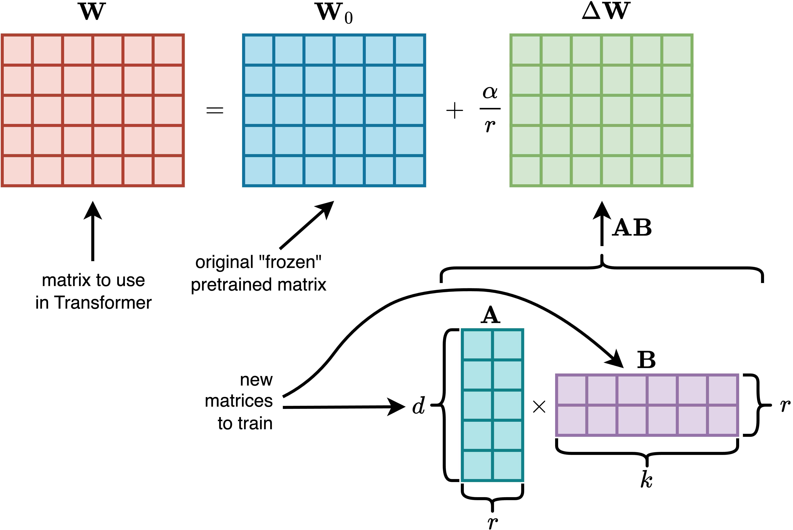
缩放因子控制 LoRA 在微调期间引入的权重更新的大小。
𝑟 和 𝛼 都是超参数，𝛼 通常设置为 𝑟 的倍数。例如，如果 𝑟 = 8，𝛼 可能是 16，导致缩放因子为 2。𝑟 和 𝛼 的最优值通过评估微调的 LLM 在测试集上的性能来实验确定。
LoRA 通常应用于自注意力层中的权重矩阵——具体来说是查询、键和值权重矩阵 𝐖𝐐、𝐖𝐊、𝐖𝐕，以及投影矩阵 𝐖𝐎。它也可以应用于位置性 MLP 层中的权重矩阵 𝐖₁ 和 𝐖₂。
使用 LoRA 微调 LLM 比全模型微调更快，并且为梯度使用更少的内存，使得在有限硬件上能够微调非常大的模型。
Hugging Face Parameter-Efficient Finetuning (PEFT) 库提供了在transformer模型中实现 LoRA 的简单方法。让我们首先安装它：
$ pip3 install peft
我们可以通过结合 PEFT 库来修改之前的代码以应用 LoRA：
from peft import get_peft_model, LoraConfig, TaskType
peft_config = LoraConfig(
task_type=TaskType.CAUSAL_LM, # 指定任务类型
inference_mode=False, # 设置为 False 进行训练
r=8, # 设置秩 r
lora_alpha=16 # LoRA alpha )
model = get_peft_model(model, peft_config)
LoraConfig 对象定义了 LoRA 微调的参数：
• task_type 指定任务，在这种情况下是因果语言建模，
• r 是 LoRA adapter 秩，
• lora_alpha 是缩放因子 𝛼。
函数 get_peft_model 包装原始模型并集成 LoRA adapter。它如何决定增强哪些矩阵？PEFT 设计用于检测标准 LLM 架构。在微调诸如 Llama、Gemma、Mistral 或 Qwen 等模型时，它会自动将 LoRA 应用于适当的层。对于自定义transformer——如第4章的decoder——你可以添加 target_modules 参数来指定哪些矩阵应该使用 LoRA：
peft_config = LoraConfig(
#与上面相同
target_modules=["W_Q","W_K","W_V","W_O"] )
接下来，我们照常设置优化器：
optimizer = torch.optim.AdamW(model.parameters(), lr=learning _rate)
在 PyTorch 中，requires_grad 属性控制tensor是否跟踪操作用于自动微分。当 requires_grad=True 时，PyTorch 跟踪tensor上的所有操作，使得在反向传播过程中能够计算梯度。要冻结模型参数（防止在训练期间更新），将其 requires_grad 设置为 False：
import torch.nn as nn
model = nn.Linear(2, 1) # 线性层：y = WX + b
print(model.weight.requires_grad) print(model.bias.requires_grad)
model.bias.requires_grad = False print(model.bias.requires_grad)
输出：
True
True
False
PEFT 库确保只有 LoRA adapter 参数具有 requires_grad=True，保持所有其他模型参数冻结。
用 get_peft_model 包装模型后，训练循环保持不变。例如，使用 r=16 和 lora_alpha=32 的 LoRA 在情感生成任务上微调 GPT-2 达到了 0.9420 的测试准确率。这比全微调的 0.9415 略好。通常，LoRA 的性能往往比全微调略差。然而，结果取决于超参数的选择、数据集大小、基础模型和任务。
使用 LoRA 微调 GPT-2 的完整代码可在 thelm-book.com/nb/5.5 notebook 中获得。您可以通过修改数据集和 LoRA 设置来为自己的任务定制它。
在微调 GPT-2 进行情感预测时，我们没有将其转换为分类器。相反，它生成类名作为文本。虽然这种方法有效，但对于分类任务来说并不总是最优的。另一种方法是训练模型为每个情感类别产生logits。
我们可以将分类头附加到预训练的 LLM 上。这是一个带有softmax激活的全连接层，将logits映射到类别概率。
在transformers中，有一个类设计来使这更容易。不使用 AutoModelForCausalLM 加载模型，我们使用 AutoModelForSequenceClassification：
from transformers import AutoModelForSequenceClassification
model = AutoModelForSequenceClassification.from_pretrained(
model_path, num_labels=6 )
对于预训练的自回归语言模型，该类将来自最后一个decoder块的最终（最右边）非填充token的embedding映射到与类别数量匹配的维度向量（在这种情况下为6）。这种修改的结构如下：
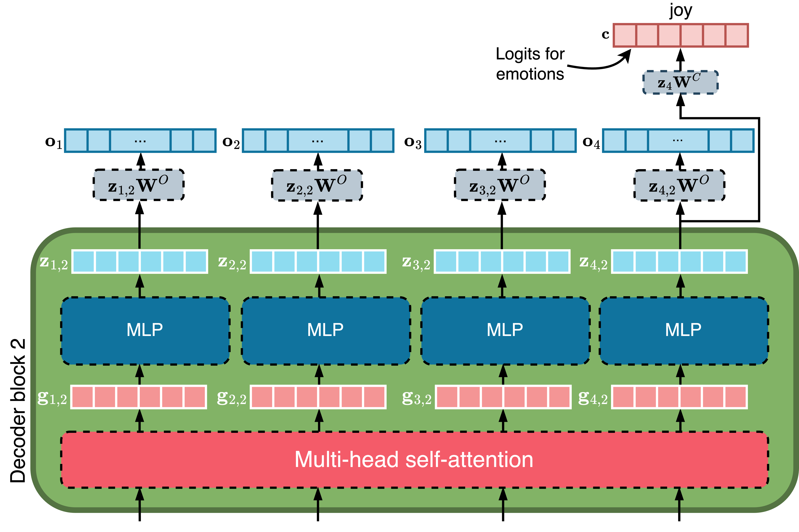
正如您所见，一旦最终的decoder块处理输入（在我们的例子中是第二个块），最后一个token的输出embedding 𝐳[T,!] 通过分类头的权重矩阵 B 𝐖 传递。这个投影将embedding转换为logits，每个类别一个。
参数张量 B 𝐖 用随机值初始化，并在标记的情感数据集上进行训练。训练依赖交叉熵来测量预测概率分布与one-hot编码的真实类别标签之间的损失。这个误差通过反向传播更新，更新分类头和模型其余部分的权重。这可以与LoRA结合使用。
在使用 num_epochs = 8, batch_size = 16, 和 learning_rate = 0.00005 进行微调后，模型达到了0.9460的测试准确率。这比微调未修改模型生成文本类别标签的0.9415准确率略好。在不同的基础模型或数据集上，改进可能更加明显。
微调GPT-2作为情感分类器的代码可在wiki的thelmbook.com/nb/5.6 notebook中获取。通过替换文件中的数据同时保持相同的JSON格式，可以轻松适用于任何文本分类任务。
Chat language models，或chat LMs，是在对话示例上微调的语言模型。这种微调类似于指令微调，但使用多轮对话输入，例如ChatML格式中的输入，目标是助手的响应。
尽管接口简单，对话界面允许解决各种实际问题。本节探讨使用chat LMs解决此类问题的最佳实践，称为prompt engineering技术。
要从chat LM获得最佳结果，您需要一个精心制作的prompt。强有力prompt的关键组成部分包括：
情况：描述为什么您寻求帮助。
角色：定义模型应该模拟的专家角色。
任务：给出关于模型必须做什么的清晰、具体指令。
输出格式：解释您期望响应如何结构化，例如项目符号、JSON或代码。
约束：提及任何限制、偏好或要求。
质量标准：定义什么使响应令人满意。
示例：提供输入与预期输出的few-shot示例。
行动号召：简单重述任务并要求模型执行。
在prompt中放置输入-输出示例称为few-shot prompting或in-context learning。这些示例包括显示期望输出的正面案例和演示错误响应的负面案例。添加将错误响应与特定约束联系起来的解释有助于模型理解为什么它们是错误的。
以下是包含上述一些元素的prompt示例：
情况：我正在创建一个分析保险索赔的系统。它处理理赔员报告以提取关键详细信息，在SaaS平台中显示。
您的角色：作为熟悉行业标准分类的资深保险理赔分析师。
任务：识别报告中描述的事件类型、主要原因和重大损害。
输出格式：返回具有此结构的JSON对象：{ “type”: “string”, // 事件类型
“cause”: “string”, // 主要原因
“damage”: [“string”] // 主要损害 }
观察到十字路口的两车事故。被保险人的车在另一司机闯红灯后被撞。目击者确认。车辆有严重的前端损坏，安全气囊展开，并从现场拖走。
{ “type”: “collision”, “cause”: “failure to stop at signal”, “damage”: [“front-end damage”, “airbag deployment”] }
…
行动号召：从此报告中提取详细信息：
“到达住宅建筑火灾现场。厨房损坏严重，整个房屋都有烟雾损害。火灾由无人看管的烹饪引起。邻居疏散；未报告伤亡。”
“情况”、“您的角色”或”任务”等节名称是可选的。
在处理prompt时，请记住LLMs中的注意力机制有局限性。它可能专注于prompt的某些部分而忽略其他部分。好的prompt在细节和简洁之间取得平衡。过多的细节可能使模型不知所措，而细节不足会留下空白，模型可能用错误的假设填补。
我使用XML标签进行few-shot示例，因为它们清楚地定义了示例边界，并且LLMs从结构化数据的预训练中熟悉它们。此外，chat LM模型通常使用具有XML结构的对话示例进行微调。虽然使用XML不是强制性的，但可能会有帮助。
模型的第一个解决方案通常是不完美的。用户分析和后续行动是充分利用chat LM的关键。常见的后续行动包括：
询问LLM其解决方案是否包含错误或可以在不违反约束的情况下简化。
复制解决方案并与同一LLM重新开始新对话。在这个新对话中，用户可以要求模型验证解决方案，就像它是”由专家提供的”一样，而不透露它是由同一模型生成的。
使用不同的LLM来审查或增强解决方案。
对于代码输出，在执行环境中运行代码，分析结果，并向模型提供反馈。如果代码失败，完整的错误消息和堆栈追踪可以与模型共享。
在与同一个聊天语言模型进行后续交互时，特别是在编程或处理复杂结构化输出等任务中，通常建议在三到五轮对话后重新开始。这个建议基于两个关键观察：
创建用于微调的长篇高质量对话既困难又昂贵，因此训练数据往往缺乏专注于问题解决的长时间交互示例。因此，模型在较短的交互中表现更好。
重新开始时，重要的是用早期后续交互中的关键细节更新初始提示。这有助于模型避免重复之前的错误。通过将相关信息整合到清晰简洁的起点中，您确保模型拥有所需的上下文，而无需依赖先前对话的冗长和嘈杂历史。
聊天语言模型的一个有价值用途是生成代码。用户描述所需的代码，模型尝试生成它。如我们所知，现代LLM在包含多种编程语言的大量开源代码集合上进行预训练。这种预训练使它们能够学习语法和许多标准或广泛使用的库。看到用不同语言实现的相同算法也使LLM能够形成共享的内部表示（如word2vec中的同义词），使它们在阅读或创建代码时通常对编程语言无关紧要。
此外，这些代码中的大部分都包含注释和注解，帮助模型理解代码的目的——它被设计来实现什么。像StackOverflow和类似论坛这样的来源通过提供问题与解决方案配对的示例增加了进一步的价值。接触这样的数据使LLM具备了用相关代码响应的能力。监督微调提高了它们解释用户请求并将其转换为代码的技能。
因此，LLM可以生成几乎任何语言的代码。为了获得高质量结果，用户必须详细指定代码应该做什么。例如，提供如下详细的文档字符串：
编写实现具有以下规格的方法的Python代码：
def find_target_sum(numbers: list[int], target: int) -> tuple :
"""在列表中查找值之和等于目标值的索引对。
Args:
numbers: 要搜索的整数列表。可以为空。
target: 要查找的整数和。
Returns:
值之和等于目标值的两个不同索引的元组，
如果不存在解决方案则返回None。
Examples:
>>> find_target_sum([2, 7, 11, 15], 9)
(0, 1)
>>> find_target_sum([3, 3], 6)
(0, 1)
>>> find_target_sum([1], 5)
None
>>> find_target_sum([], 0)
None
Requirements:
- 时间复杂度：O(n)
- 空间复杂度：O(n)
- 每个索引只能使用一次
- 如果存在多个解决方案，返回任何有效解决方案
- 所有数字和目标值可以是任何有效整数
- 如果不存在解决方案则返回None
"""提供高度详细的文档字符串有时可能感觉像编写函数本身一样耗时。较少详细的描述可能看起来更实用，但这增加了生成的代码不能完全满足用户需求的可能性。在这种情况下，用户可以审查输出并通过额外的请求或约束来完善他们的指令。
顺便说一下，这本书的官方网站thelmbook.com完全是通过与LLM协作创建的。虽然它不是第一次尝试就完美生成的，但通过反复反馈、多次对话重启以及在需要时切换不同的聊天LLM，我完善了您看到的每个元素——从图形到动画——直到它们符合我的愿景。
语言模型可以生成函数、类甚至整个应用程序。然而，成功的机会随着抽象级别的增加而降低。如果问题类似于模型的训练数据，模型在最少输入的情况下表现良好。然而，对于新颖或独特的业务或工程问题，详细的指令对于良好的结果至关重要。
如果您决定使用简短提示来节省时间，请让模型提出澄清问题。您也可以要求它首先描述计划生成的代码。这允许您在创建代码之前调整或添加指令的细节。
软件开发中的一个常见挑战是保持文档与代码更改同步。随着代码库的演进，文档经常变得过时，导致混乱和可维护性降低。LLM通过与版本控制系统集成为这个问题提供了自动化解决方案。
该过程涉及创建一个利用LLM理解代码和自然语言能力的文档同步管道。当开发者暂存更改以供提交时，管道：
使用LLM分析暂存的差异并识别项目文档目录中受影响的文档文件。模型检查代码更改并确定哪些文档文件可能需要更新。
然后将现有文档内容和暂存的代码更改都传递给另一个LLM调用。第二步生成反映代码修改的更新文档，同时保持现有文档的风格和结构。
将更新的文档与代码一起放置在暂存区域中
变化。这允许开发者在提交前一起审查代码和文档更新，确保准确性并维护单一事实来源。
这种方法将文档视为开发过程中的一等公民，确保它与代码一起演进。
虽然大语言模型(LLM)可以帮助维护文档对齐，但它们不应该自主运行。人工审查仍然至关重要，用于验证生成的文档更新的准确性，并确保它们符合团队的沟通标准。
这个流水线对于保持API文档、架构描述和实现指南的更新特别有用。然而，像其他基于LLM的系统一样，它必须包含防止幻觉的保护措施。我们接下来将讨论这个问题。
LLM面临的一个主要挑战是它们倾向于产生看似合理但事实上不正确的内容。这些不准确的信息被称为幻觉，为在要求可靠性和准确性的生产系统中使用LLM造成了问题。
LLM中的幻觉是设计使然。如我们所知，这些模型被优化为预测符合上下文的下一个token，而不是确保事实准确性。在预训练期间，它们通过遵循语言模式学习生成连贯的文本。然而，没有训练数据集能够涵盖每一个事实。当模型面临知识空白时，它试图基于识别的模式用看似合理的内容来填补这些空白。这经常导致编造的细节。以下是来自广泛使用的聊天LM的幻觉信息示例：
如您所想象的，“区块链量子神经网络(BQNN)”并不是一个真实的概念。LLM两页的解释，包括其工作原理的详细描述，完全是编造的。
训练数据的低质量也导致了幻觉。在对大量互联网文本进行预训练期间，模型接触到准确和不准确的信息。它们学习了这些不准确性，但缺乏区分真假的能力。
最后，LLM一次生成一个token的文本。这种方法意味着早期token中的错误可能会级联，导致越来越不连贯的输出。
幻觉无法完全避免，但可以最小化。减少幻觉的一个实用方法是将模型的响应建立在经过验证的信息基础上。这通过在提示中直接包含相关的事实上下文来实现。例如，与其提出开放式问题，我们可以提供具体的文档或数据供模型参考，并指示模型仅基于提供的文档来回答。
这种方法称为检索增强生成(RAG)，将模型的输出锚定在可验证的事实上。模型仍然生成文本，但在大多数情况下是在提供的上下文限制内进行，这显著减少了幻觉。
RAG的工作原理如下：用户提交查询，系统在知识库(如文档存储库或数据库)中搜索相关信息。它使用关键词匹配和基于embedding的搜索，其中查询被转换为embedding向量。使用余弦相似度检索具有相似embedding的文档。为了处理长文档，它们在embedding之前被分割成更小的块。
检索到的内容与用户问题一起添加到提示中。这种方法将传统信息检索的优势与LLM的语言生成能力相结合。例如，如果用户询问公司最新的季度业绩，RAG系统将首先检索最新的财务报告并使用它们来产生响应，避免依赖可能过时的训练数据。
减少幻觉的另一种方法是使用未标记文档对模型进行可靠的、特定领域知识的微调。例如，律师事务所的问答系统可以在法律文档、判例法和法规上进行微调，以提高在法律领域内的准确性。这种方法通常被称为特定领域预训练。
对于关键应用，实施多步验证工作流程可以为防止幻觉提供额外保护。这可能涉及使用具有不同架构或训练数据的多个模型来交叉验证响应，并让领域专家在生产中使用生成的内容之前进行审查。
然而，重要的是要认识到，在当前的LLM技术下，幻觉无法完全消除。虽然我们可以实施各种保护措施和检测机制，但最稳健的方法是设计考虑到这种限制的系统。
例如，在客户服务应用中，LLM可以起草响应，但在发送包含具体产品详情或政策信息的消息之前，人工审查是必要的。同样，在代码生成系统中，模型可能生成代码，但在部署之前应始终进行自动化测试和人工审查。
幻觉的潜在影响在加拿大航空客服聊天机器人向乘客提供关于丧亲旅行费率错误信息时得到了显著证明。聊天机器人错误地声称客户可以预订全价机票，然后申请降价费率，这与航空公司的实际政策相矛盾。当乘客试图申请费率减免时，加拿大航空的拒绝导致了小额法庭案件，结果是812加元(约565美元)的赔偿命令。这个案例突出了AI不准确性的切实商业后果，包括财务损失、客户挫败感和声誉损害。
LLM成功的关键在于认识到幻觉是该技术的固有限制。然而，这个问题可以通过深思熟虑的系统设计、安全措施以及对何时何地应用这些模型的清晰理解来管理。
LLM的广泛部署给版权法带来了新的挑战，特别是在训练数据使用和AI生成内容的法律地位方面。这些问题既影响开发LLM的公司，也影响使用它们构建应用程序的企业。
第一个主要的版权考虑涉及训练数据。LLM在包含版权材料的大型文本数据集上进行训练，如书籍、文章和软件代码。虽然有些人声称这可能符合合理使用原则[9]，但这尚未在法庭上得到验证。模型输出受保护内容的能力使问题进一步复杂化。这种法律不确定性已经引发了作者和出版商对AI公司的高调诉讼，给使用LLM应用程序的企业带来风险。
Meta在2024年7月决定不向欧盟发布其多模态Llama模型，体现了AI发展与监管合规之间日益增长的紧张关系。由于担心该地区”不可预测”的监管环境，特别是关于使用版权和个人数据进行训练的规定，Meta与Apple等其他科技巨头一起限制在欧洲市场的AI部署。这一限制突出了公司在平衡创新与地区法规方面面临的挑战。
[9] 合理使用是美国的法律原则。其他地区对版权例外的处理方式不同。欧盟依赖”合理处理”和特定的法定例外，日本有独特的版权限制，其他国家对允许使用采用独特的规则。这种差异使全球LLM部署变得复杂，因为在美国合理使用下允许的训练数据可能在其他地方违反版权法。
在为商业用途选择模型时，公司应审查训练文档和许可条款。主要在公共领域或适当许可材料上训练的模型涉及较低的法律风险。然而，有效LLM所需的大规模数据集使得完全避免版权材料几乎不可能。企业需要了解这些风险并将其纳入开发策略。
除了法律问题，在版权材料上训练LLM还引发伦理担忧。即使在法律允许的情况下，未经同意使用版权作品可能显得剥削性，特别是如果模型输出与创作者的作品竞争。关于训练数据来源的透明度和与创作者的主动接触可以帮助解决这些担忧。伦理实践还应包括补偿那些对模型显著改进有贡献的创作者，促进更公平的系统。
LLM生成内容的版权状态提出了传统版权法难以轻易解决的挑战。版权法建立在人类作者身份的假设之上，这使得AI生成的作品是否符合保护条件或谁是合法所有者变得不清楚。另一个问题是LLM有时可以逐字重现其训练数据的部分内容，包括版权材料。这种生成精确复制品的能力——超越学习抽象模式——引发了严重的法律问题。
一些企业通过将LLM用作辅助工具而不是独立创作者来解决这些挑战。例如，营销团队可能使用LLM起草文本，让人类作者编辑和完善。这种方法在利用AI效率的同时保持了更清晰的版权所有权。类似地，软件开发人员使用LLM生成代码片段，然后审查并将其集成到更大的系统中。到2024年，这种做法已经显著增长——在Google，超过25%的代码由LLM生成，然后由开发人员完善。
为了最小化LLM应用程序中的版权风险，公司通常实施技术保障措施。
一种方法涉及将模型输出与版权材料数据库进行比较以检测逐字复制。例如，公司可能维护版权文本存储库并采用相似性检测方法——如余弦相似度或编辑距离——来标记超过定义相似性阈值的输出。
然而，这些方法并非万无一失。改写的内容可以使输出在形式上不同，同时在实质上保持相似，自动化系统可能无法检测到这一点。为了处理这个问题，企业通常用人工审查来补充这些工具以确保合规。
模型权重的版权状态提出了与训练数据或生成输出相关问题不同的法律问题。模型权重编码训练期间学习的模式，可能被视为训练数据的派生作品。这引出了问题：共享权重是否等同于间接重新分发原始版权材料，即使是以转换形式？一些人认为权重是抽象转换，构成新的知识产权。其他人则认为，如果权重可以重现训练数据片段，它们本质上包含版权内容，应该在版权法下受到类似对待。
这场辩论对开源AI开发带来了严重影响。如果模型权重被归类为衍生作品，那么分享和分发在受版权保护数据上训练的模型可能在法律上受到限制，即使训练过程符合合理使用原则。因此，一些组织已经转向仅在公共领域或明确许可的内容上训练模型。然而，这种策略往往限制了模型的有效性，因为较小的受限数据集通常会导致性能降低。
随着围绕LLM的法律不断发展，企业必须保持灵活性。他们可能需要在法院界定法律边界时调整工作流程，或在出现AI特定立法时修订政策。咨询具有AI专业知识的知识产权律师可以帮助管理这些风险。
5.9.4. 更广泛的伦理考虑
除了版权问题外，LLM还引发了影响整个社会的重大伦理挑战。一个基本问题是可解释性。虽然LLM可以阐述其输出的推理过程，并在被询问时提供详细解释，但这种言语解释能力不同于真正的算法透明性。模型的解释是事后合理化——生成的文本听起来合理，但可能不反映产生原始输出的实际计算过程。这创造了一个独特的挑战，即模型看起来透明，而其潜在的决策过程仍然不透明。这种限制在医疗保健或法律服务等高风险应用中变得特别重要。
偏见问题带来了另一个挑战。在互联网数据上训练的LLM不可避免地会吸收训练数据中存在的社会偏见。这些模型可能在性别、种族、年龄和文化背景等领域延续或放大歧视性模式。例如，它们可能对仅在人口统计细节上有所不同的等价提示产生不同响应，或产生强化刻板印象的内容。
部署LLM的组织必须实施结构化评估协议，包括跨人口群体的自动偏见检测和使用标准化测试集的审计。这应该包括部署具体的安全保障措施，如有毒语言过滤器、高风险决策的强制人工审查，以及关于AI参与的清晰用户通知。
您已经通过本书学习了语言建模的核心概念。有许多高级主题可供您自行探索，本最后一章为进一步学习提供指导。我选择的主题代表了该领域当前的重要发展，从架构创新到安全考虑。
6.1. 专家混合
专家混合(MoE)是一种架构模式，旨在增加模型容量而不按比例增加成本。与decoder块中单个位置MLP处理所有token不同，MoE使用多个称为专家的专门子网络。路由器网络(或门控网络)决定哪些token由哪些专家处理。
核心思想是为每个token仅激活专家的子集。这种稀疏激活减少了活跃计算，同时允许更大的总体参数数量。稀疏MoE层替代传统MLP层，使用top-k路由和负载平衡等技术有效地将token分配给专家。
这个概念随着Switch Transformer而受到关注，并已应用于Mixtral 8x7B等模型中，该模型总共有47B参数，但在推理过程中仅激活约13B。
6.2. 模型合并
模型合并结合多个预训练模型以利用它们的互补优势。技术包括模型汤(model soups)、SLERP(保持参数范数的球面插值)，以及任务向量算法如TIES-Merging和DARE。
这些方法通常依赖于模型之间的某种架构相似性或兼容性。passthrough方法通过连接不同LLM的层而脱颖而出。这种方法可以创建具有非常规参数数量的模型(例如，通过合并两个7B模型创建13B)。这样的模型通常被称为frankenmerges。
mergekit是一个流行的开源工具，用于合并和组合语言模型，实现了许多这些技术。它为实验不同的合并策略和架构提供了灵活的配置系统。
6.3. 模型压缩
模型压缩通过减少大小和计算需求而不大幅牺牲性能来解决在资源有限环境中部署LLM的问题。神经网络通常是过度参数化的，包含可以优化的冗余单元。
关键方法包括训练后量化，降低参数精度(例如，32位浮点数到8位整数)，量化感知训练，在较低精度下训练模型，如QLoRA(量化低秩适应)，非结构化剪枝，按重要性删除单个权重，结构化剪枝，删除层或注意力头等组件，以及知识蒸馏，其中较小的”学生”模型从较大的”教师”模型学习。
6.4. 基于偏好的对齐
基于偏好的对齐方法帮助使LLM与用户价值观和意图保持一致，使它们产生有用和安全的输出。一种广泛使用的方法是基于人类反馈的强化学习(RLHF)，其中人类对模型响应进行排序，在这些排序上训练奖励模型，然后对LLM进行微调以优化更高的奖励。
另一种方法是宪政AI(CAI)，它使用一套指导原则或”宪法”，模型在生成输出时会参考这些原则；模型可以根据这些原则自我批评和修改其响应。这两种策略都解决了LLM在大量互联网文本上训练时可能生成有害或失调响应的问题，但它们在如何融入人类监督和明确指导方针方面有所不同。
高级推理技术使大语言模型能够处理复杂任务，通过(1)训练它们生成明确的思维链(CoT)进行逐步推理，以及(2)为它们配备函数调用能力来调用外部API或工具，从而解决简单提示-响应模式的局限性。思维链推理可以显著提升多步数学和逻辑推理等任务的性能，而函数调用允许将专门的计算任务卸载到外部框架。
此外，思维树(ToT)通过在树状结构中探索多个推理路径来扩展CoT。自一致性通过聚合多个CoT输出来寻找最一致的答案，进一步完善推理。ReAct(推理+行动)将推理与行动执行相结合，允许模型动态地与环境交互。程序辅助语言模型(PAL)利用解释器(例如Python)执行代码进行精确计算。
越狱攻击和提示注入是LLM的主要安全漏洞。越狱通过精心设计特定输入来绕过模型的安全控制，诱使模型产生受限内容，通常使用角色扮演不同角色或设置假设场景等技术。例如，攻击者可能提示模型扮演海盗来获取非法活动的指导。
相比之下，提示注入攻击操纵LLM应用程序如何将系统提示与用户输入相结合，允许攻击者改变应用程序的行为。例如，攻击者可以插入命令使应用程序执行未授权的操作。虽然越狱主要存在暴露有害或受限内容的风险，但提示注入对具有特权访问权限的应用程序(如读取电子邮件或执行系统命令的应用程序)带来更严重的安全影响。
视觉语言模型(VLM)将LLM与视觉编码器集成以处理文本和图像。与传统的孤立处理不同模态的模型不同，VLM擅长多模态推理，使它们能够通过遵循自然语言指令来执行各种视觉任务，而无需特定任务的重新训练。该架构包括三个主要组件：基于CLIP(对比语言-图像预训练)的视觉编码器，在数百万图像-文本对上训练以理解视觉内容；交叉注意力机制，允许VLM整合和推理视觉和文本信息；以及语言模型本身，用于生成和解释文本。VLM通过多个训练阶段开发，从预训练开始对齐视觉和语言组件，然后进行监督微调以提高理解和响应用户提示的能力。
防止过拟合的技术对于实现模型泛化至关重要，确保模型不仅在训练数据上表现良好，在新的、未见过的样本上也能表现良好。对抗过拟合的主要防御是正则化，包括L1和L2等方法。这些技术向损失函数添加特定的惩罚项——如权重绝对值或平方和——限制模型参数的大小并鼓励更简单的模型。
Dropout是神经网络的一种正则化方法。它通过在每个训练步骤中随机停用一些单元来工作。这鼓励网络开发多个独立的路径，减少对特定特征的依赖。早停通过监控验证性能来防止过拟合。当验证准确率停止改善或开始下降时，训练会停止，避免在后期epoch中记忆随机噪声。
验证集与测试集相似，都用于评估模型在未见数据上的性能；然而，关键区别在于验证集在训练过程中用于调优超参数和做出如早停等决策，而测试集保留用于最终评估，在训练完成后测量模型的性能。
在理解语言模型方面，你已经走了很长的路，从机器学习的基本构建块到transformer的内部工作原理，再到与大语言模型工作的实践方面。你现在拥有了坚实的技术基础，不仅能理解这些模型如何工作，还能为自己的目的实现和调整它们。
语言模型的新架构、训练方法和应用正在不断涌现。你现在拥有了阅读研究论文、跟踪技术讨论和批判性评估新发展的工具。无论你的目标是训练模型还是构建使用它们的系统，你都拥有了自信前进的核心概念。
我鼓励你保持好奇和动手实践——实现你学到的概念，尝试不同的方法，并跟上最新的发展。考虑从本章涵盖的一些高级主题开始，但请记住，你在这里学到的基础知识将作为你在导航未来创新中的指南针。
保持最新发展动态的好方法是订阅本书的通讯。
本书到此结束。请记得时常查看配套wiki，了解各个语言建模领域的最新发展。请不要忘记，本书是基于先读后买原则分享的。所以，如果你正在阅读PDF版本并且不记得已经付费购买，那么你可能正是应该购买这本书的人。
如果你还在阅读，很可能意味着你喜欢这本书，并且想知道从这位作者那里还能读到什么其他内容。我还有两本书绝对能增强你对机器学习的理解，并在你获得的语言模型知识和直觉基础上进一步发展：
• 百页机器学习书 提供了对核心机器学习概念的简洁而全面的概述，涵盖从基础统计学到高级算法。它是这里涵盖的语言建模材料的绝佳补充。
• 机器学习工程 涵盖了大规模设计、部署和维护ML系统的实用方面。如果你希望超越实验阶段，创建稳健的现实世界机器学习应用程序，这本书将指导你完成机器学习工程生命周期的每个阶段。
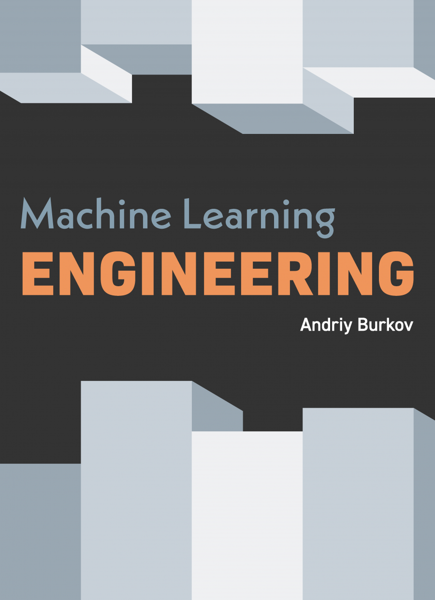
4D并行，154 偏差项，20 BLAS，30 bootstrap重采样，98
准确性，161 激活，33 加一平滑。参见：Laplace平滑仿射变换，21 AI，参见算法语言模型，自回归任务向量，195 人工智能，16 对齐
全收集，152 基于偏好的，196 人工智能，16 宪法的，196 好的老式，18
注意力头，132 注意力权重，122 自动梯度。参见：微分，自动自回归，77
反向传播，49 后向传递，49 回退，79
词袋，51，84，158 基线，158 偏差，194
参见：字节对编码 BoW。参见：词袋
Bradley–Terry模型，98 广播，141 Brown语料库，83 字节对编码，70
因果语言模型。参见：思维链，196 中心趋势偏差，93
聊天LM。参见：语言模型，聊天思维链聊天标记语言。参见：ChatML ChatML，166
分类，51 二元，34，41，51 多类，51 分类头，181 CLIP，197 CNN。参见：神经网络，卷积余域，20
计算图，35 置信区间，98 系数。参见：权重项
常数倍数规则，25，43 常数项。参见：偏差项
上下文，77 上下文并行，152 上下文窗口，115 收敛，44，102，160，161 语料库，52 余弦相似度，31，65，190，193 CoT。参见：思维链交叉注意力，197 交叉熵，57，67，111，148，182
cuBLAS，30
DARE，195 数据泄漏，159 数据集，20 测试，83，159 训练，83，159 决策树，18 解码器，参见 Transformer，仅解码器，118
解码贪婪，172 深度学习，134 密集层。参见：全连接层
导数一阶，23 偏导数，23 微分自动，45 降维，68，70 Dolma，153 函数的定义域，19 点积，29，123 dropout，198
早停，198 编辑距离，193 逐元素乘积，30，138 Elman RNN，100 Elo评级，96 编码器视觉，197 编码二进制，41，48，55 字节对，110
epoch，111
误差均方误差，23 平方误差，22 欧拉数，34，55，85 评估，111 样本，20 专家，195 可解释性，194
FastText，68 特征，29 特征向量，29，51 微调，89，155，156 参数高效微调，179 拟合，27 FlashAttention，151 浮点运算，154 FLOPs。参见：浮点运算 FNN。参见：神经网络，前馈前向传递，49，61 frankenmerge，195 FSDP。参见：全分片数据并行全微调，178 全分片数据并行，157
函数，19 复合，25，26，33，42，134 线性，20 损失，41 函数调用，196
门网络。参见：网络，路由器
泛化，83，159，198 GloVe，68 GOFAI。参见：人工智能，好的老式 GPT-2，89 梯度，43 梯度下降，43 小批量，101 真实值，89 分组查询注意力，151
幻觉，189
隐藏状态，100 Hugging Face Hub，108，155 超参数，44，111，161
上下文学习。参见：提示，少样本推理，62，139 输入，22 输入序列，77 截距。参见：偏差项迭代，44
JSON，112，158 JSONL，112，158
核方法，19 键值缓存，139 知识蒸馏，196
标注，54 语言模型，76 自回归，77，118，123，162，179 聊天，54，67，77，95，148，182 掩码，78 程序辅助，197 视觉，197 Laplace平滑，79，88
层拼接和投影，133 嵌入，106 全连接，36 隐藏状态，100 输入，35 神经网络的，35 输出，35 自注意力，119，177 稀疏MoE，195
lbfgs，160 学习率，44 向量的长度。参见：向量的大小
Likert量表，93 LIMA，167 线性代数库，30 线性变换，20，29
负载均衡，195
对数自然，41 logit，55 对数似然负，85
长短期记忆，117
8x7B，195 专家混合，195 MLE。参见：最大似然估计 MLP。参见：多层感知器，参见：
[最长公共子序列, 91] [多层感知机][LoRA. 参见: 低秩自适应] [模型, 19][LoRA 适配器, 177] [基础, 89][LoRA 缩放因子, 177] [复合, 34][损失] [奖励, 196]
[logistic. 参见: 交叉熵, 二元] [模型压缩, 196]
[训练, 28] [模型合并, 195]
[损失函数, 23] [模型并行性, 157][低秩自适应, 177] [模型分片, 157]
[量化, 196] [模型汤, 195]
[LSTM. 参见: 长短期记忆] [模块 API, 46, 60]
[MoE. 参见: 专家混合]
[M] [MSE. 参见: 误差, 均方]
[机器学习, 18, 19] [多头注意力, 131]
[强化, 22] [多层感知机, 36]
[监督, 22] [位置感知, 124, 143, 177]
[无监督, 22]
[向量的幅度, 31] [N] [掩码] [大海捞针, 152]
[注意力, 162] [负向前瞻, 74]
[矩阵加法, 38][文档-词项, 53] [路由器, 195][神经网络, 32][矩阵乘法, 39, 103][卷积, 36][矩阵, 38] [网络][因果, 122, 123, 125, 146, 162] [负向后顾, 74]
[批次, 141] [深层, 134]
[矩阵转置, 39] [前馈, 36, 61, 99][矩阵-向量乘法, 39, 128] [循环, 99][最大似然估计, 78] [神经网络, 18][mergekit, 195] [神经元][minLSTM, 117] [人工, 35][错位, 196] [n-grams, 63][Mixtral] [范数, 31]
[符号] [领域特定, 190]
[大写西格玛, 29] [长上下文, 151]
[Nucleus 采样. 参见: 采样,] [主成分, 70]
[top-p] [主成分分析, 70]
[概率]
[O] [条件, 76]
[独热向量, 57] [离散, 56, 77][投影矩阵, 133, 142, 178][开放权重模型, 150][独热编码, 182] [概率分布]
[过拟合, 19, 83, 153, 161, 198] [提示, 77][系统, 167, 197][过度参数化, 196][提示工程, 182]
[P] [提示法]
[填充, 99] [提示格式, 166][少样本, 183][成对比较, 95] [提示风格. 参见: 提示法]
[并行性][辅助] [剪枝][结构化, 196][PAL. 参见: 语言模型, 程序辅助] [格式]
[上下文, 154] [非结构化, 196]
[数据, 154] [公共领域, 192]
[流水线, 154] [PyTorch, 109]
[张量, 154]
[参数, 20] [Q]
[PEFT. 参见: 微调, 参数高效][分析] [量化][量化, 48][后训练, 196][PCA. 参见: 主成分] [QLoRA. 参见: 低秩自适应,]
[透传, 195]
[惩罚] [R] [频率, 176] [RAG. 参见: 检索增强] [存在, 176] [生成] [感知机, 18] [随机森林, 19] [困惑度, 85] [秩, 177] [Phi 3.5 mini, 110] [排序, 95] [精确率, 91] [ReAct. 参见: 推理+行动] [预测分数, 41] [推理+行动, 197] [预训练, 89, 148]
[推理] [标量积. 参见: 点积]
[多模态, 197] [scikit-learn, 158]
[召回率, 91] [分数] [回归] [注意力, 121]
[线性, 23, 33, 41] [掩码, 122]
[logistic, 41, 158] [缩放, 122]
[正则表达式, 59] [自注意力, 120] [正则化, 198] [自一致性, 197]
[L1, 198] [自批评, 196]
[L2, 198] [语义相似性, 68]
[强化学习] [序列 API, 46, 60]
[从人类反馈, 196] [集合]
[ReLU, 34, 134, 143, 参见: 修正] [有限, 56]
[线性单元] [测试, 198]
[可重现性, 58, 108] [训练, 28] [残差连接, 134, 144] [验证, 198] [检索增强生成, 190] [sigmoid, 34, 41, 54] [RLHF, 196] [简单循环神经网络. 参见:]
[RMS. 参见: 均方根] [Elman RNN] [RMSNorm. 参见: 均方根] [跳跃连接. 参见: 残差]
[归一化] [连接]
[RNN. 参见: 神经网络, 循环] [skip-gram, 65] [均方根, 137] [skip-gram 算法, 65] [均方根归一化, 137] [SLERP, 195] [RoPE. 参见: 旋转位置嵌入] [斜率. 参见: 权重项] [旋转位置嵌入, 125] [softmax, 55, 115, 122, 172] [旋转频率, 128] [求解器, 160] [旋转矩阵, 126] [稀疏性, 54, 64, 195] [ROUGE, 89] [步骤. 参见: 迭代] [ROUGE-1, 90] [子词, 52, 70] [ROUGE-L, 91] [两个向量的和. 参见: 向量和]
[ROUGE-N, 90, 91] [和规则, 25, 43]
[监督微调. 参见: 微调]
[S] [支持向量机, 19]
[采样] [表面形式, 52]
[top-k, 174] [SVM. 参见: 支持向量机]
[top-p, 175] [符号, 71]
[标量, 29, 51] [合并, 71]
[T] [嵌入, 31]
[tanh, 34, 103, 参见: 双曲] [行, 29]
[正切] [零, 31, 64, 99, 100] [单位, 31]
[目标, 22] [向量分量, 见] [温度, 172] [向量维度, 29] [张量, 47] [向量维度, 29] [TensorFlow, 109] [向量维度, 29] [测试, 62] [向量大小. 参见: 向量] [TIES-Merging, 195] [维度] [token, 52] [向量和, 30] [分词, 52] [版本控制系统, 188] [top-k 路由, 195] [视觉编码器, 197] [ToT. 参见: 思维树] [VLM. 参见: 语言模型, 视觉]
[训练, 62, 138] [词汇表, 52]
[量化感知训练, 196]
[单轮训练, 153] [W]
[Transformer, 118]
[仅解码器, 118] [权重, 20]
[Switch, 195] [权重项, 20]
[向量的转置, 29] [词嵌入, 63, 64] [思维树, 197] [word2vec, 65, 186]
[WordNet, 69]
[U]
[单位, 35]
[Xavier 初始化, 110]
[V] [xLSTM, 117]
[梯度消失问题, 134] [Z] [向量]
[列, 29] [Zipf 定律, 53]
[稠密, 64]